<!DOCTYPE html>
<html lang="vi" data-theme="dark">
<head>
    <meta charset="UTF-8">
    <meta name="viewport" content="width=device-width, initial-scale=1.0">
    <title>NTIRE 2024 Challenge on Low Light Image Enhancement - Visualizer & Dual-Reading - CS2203 UIT VNUHCM</title>
    
    <!-- Instant Theme Init Script (Prevent Flash of White) -->
    <script>
        (function() {
            try {
                var savedTheme = localStorage.getItem('theme') || 'dark';
                document.documentElement.setAttribute('data-theme', savedTheme);
            } catch(e) {}
        })();
    </script>

    <!-- Fonts -->
    <link href="https://fonts.googleapis.com/css2?family=Inter:wght@300;400;500;600;700;800&family=JetBrains+Mono:wght@400;500;600;700&display=swap" rel="stylesheet">
    
    <!-- KaTeX CDN -->
    <link rel="stylesheet" href="https://cdn.jsdelivr.net/npm/katex@0.16.8/dist/katex.min.css">
    <script defer src="https://cdn.jsdelivr.net/npm/katex@0.16.8/dist/katex.min.js"></script>
    <script defer src="https://cdn.jsdelivr.net/npm/katex@0.16.8/dist/contrib/auto-render.min.js"></script>
    
    <!-- Stylesheets -->
    <link rel="stylesheet" href="../css/variables.css">
    <link rel="stylesheet" href="../css/layout.css">
    <link rel="stylesheet" href="../css/components.css">
    <link rel="stylesheet" href="../css/papers.css">
    
    <style>
        /* =========================================================================
           BESPOKE UI/UX PRO MAX - OBSIDIAN OLED THEME & SLEEK NO-SCROLLBAR SIDEBAR
           ========================================================================= */
        :root {
            --sidebar-width: 300px;
        }
        
        html {
            background-color: var(--bg-page);
            color-scheme: dark light;
        }
        
        body {
            background-color: var(--bg-page) !important;
            color: var(--text-primary) !important;
            font-family: var(--font-main);
            margin: 0;
            padding: 0;
            display: flex;
            min-height: 100vh;
            width: 100%;
            overflow-x: hidden;
            transition: var(--transition-theme);
        }
        
        /* 1. Left Sidebar: Sleek Floating Pane with 100% Hidden Scrollbar */
        .dual-sidebar {
            width: var(--sidebar-width);
            height: 100vh;
            position: fixed;
            top: 0;
            left: 0;
            background: var(--bg-surface);
            border-right: 1px solid var(--border-color);
            display: flex;
            flex-direction: column;
            z-index: 100;
            padding: 24px 18px;
            box-sizing: border-box;
            overflow-y: auto;
            scrollbar-width: none !important;
            -ms-overflow-style: none !important;
            gap: 16px;
        }
        
        .dual-sidebar::-webkit-scrollbar {
            display: none !important;
            width: 0 !important;
            height: 0 !important;
        }
        
        .nav-back-btn {
            display: inline-flex;
            align-items: center;
            gap: 8px;
            background: var(--bg-subtle);
            color: #FB923C;
            border: 1px solid var(--border-card);
            padding: 10px 16px;
            border-radius: var(--radius-sm);
            font-size: 0.84rem;
            font-weight: 700;
            text-decoration: none;
            transition: all 0.2s cubic-bezier(0.4, 0, 0.2, 1);
            box-shadow: 0 2px 6px rgba(0, 0, 0, 0.2);
        }
        
        .nav-back-btn:hover {
            background: rgba(249, 115, 22, 0.15);
            border-color: #FB923C;
            color: #FFFFFF;
            transform: translateX(-3px);
            box-shadow: 0 0 16px rgba(249, 115, 22, 0.35);
        }
        
        .sidebar-brand {
            padding-bottom: 14px;
            border-bottom: 1px solid var(--border-hairline);
        }
        
        .sidebar-brand-title {
            font-size: 1.05rem;
            font-weight: 800;
            color: var(--text-primary);
            display: flex;
            align-items: center;
            gap: 8px;
            letter-spacing: -0.01em;
        }
        
        .sidebar-brand-sub {
            font-size: 0.76rem;
            color: var(--text-secondary);
            margin-top: 4px;
            font-family: var(--font-mono);
        }
        
        .sidebar-nav-list {
            list-style: none;
            padding: 0;
            margin: 0;
            display: flex;
            flex-direction: column;
            gap: 5px;
        }
        
        .sidebar-nav-link {
            display: flex;
            align-items: center;
            gap: 10px;
            padding: 9px 12px;
            border-radius: var(--radius-xs);
            color: var(--text-secondary);
            font-size: 0.82rem;
            font-weight: 600;
            text-decoration: none;
            transition: all 0.18s cubic-bezier(0.4, 0, 0.2, 1);
            line-height: 1.35;
            border-left: 3px solid transparent;
        }
        
        .sidebar-nav-link:hover {
            background: var(--bg-subtle);
            color: #FB923C;
            transform: translateX(3px);
        }
        
        .sidebar-nav-link.active {
            background: rgba(249, 115, 22, 0.12);
            color: #FB923C;
            border-left: 3px solid #FB923C;
            font-weight: 700;
            box-shadow: inset 0 0 12px rgba(249, 115, 22, 0.08);
        }
        
        .sidebar-nav-num {
            font-family: var(--font-mono);
            font-size: 0.72rem;
            opacity: 0.75;
            width: 22px;
        }
        
        /* 2. Main Content Canvas - Fully Constrained & Overflow-Proof */
        .dual-content-wrapper {
            margin-left: var(--sidebar-width);
            width: calc(100% - var(--sidebar-width));
            max-width: calc(100% - var(--sidebar-width));
            box-sizing: border-box;
            padding: 40px 54px 100px;
            background-color: var(--bg-page);
            overflow-x: hidden;
            transition: var(--transition-theme);
        }

        .dual-content-inner {
            max-width: 1350px;
            margin: 0 auto;
            width: 100%;
            box-sizing: border-box;
        }
        
        .paper-master-header {
            background: var(--bg-card);
            border: 1px solid var(--border-card);
            border-radius: var(--radius-xl);
            padding: 40px 48px;
            margin-bottom: 40px;
            box-shadow: var(--shadow-card);
            text-align: center;
            background-image: radial-gradient(circle at 50% 0%, rgba(249, 115, 22, 0.08) 0%, transparent 60%);
        }
        
        .paper-master-title {
            font-size: 1.95rem;
            font-weight: 800;
            color: var(--text-primary);
            line-height: 1.35;
            margin-bottom: 12px;
            letter-spacing: -0.02em;
        }
        
        .paper-master-subtitle {
            font-size: 1.15rem;
            color: var(--text-secondary);
            font-style: italic;
            margin-bottom: 22px;
        }
        
        .paper-badge-pill {
            display: inline-block;
            background: linear-gradient(135deg, rgba(249, 115, 22, 0.18), rgba(56, 189, 248, 0.18));
            color: #FB923C;
            border: 1px solid rgba(249, 115, 22, 0.45);
            font-family: var(--font-mono);
            font-size: 0.8rem;
            font-weight: 700;
            padding: 6px 18px;
            border-radius: 999px;
            margin-bottom: 18px;
            letter-spacing: 0.05em;
            box-shadow: 0 0 16px rgba(249, 115, 22, 0.2);
        }
        
        .theme-toggle-btn {
            background: var(--bg-subtle);
            border: 1px solid var(--border-card);
            color: var(--text-primary);
            padding: 8px 14px;
            border-radius: var(--radius-xs);
            font-size: 0.82rem;
            font-weight: 600;
            cursor: pointer;
            display: flex;
            align-items: center;
            justify-content: center;
            gap: 8px;
            width: 100%;
            transition: all 0.2s ease;
        }
        
        .theme-toggle-btn:hover {
            background: var(--primary-light);
            border-color: var(--primary);
            color: var(--primary);
        }

        .dual-module-section {
            margin-bottom: 50px;
        }
        
        #reading-progress-bar {
            position: fixed;
            top: 0;
            left: var(--sidebar-width);
            right: 0;
            height: 3px;
            background: linear-gradient(90deg, #FB923C, #38BDF8);
            width: 0%;
            z-index: 999;
            transition: width 0.1s linear;
        }

        /* Typography & Paragraph Spacing Fixes */
        .paper-passage-body {
            font-size: 1.02rem;
            line-height: 1.85;
            color: var(--text-primary);
            word-break: break-word;
        }

        .paper-passage-body p {
            margin-top: 0;
            margin-bottom: 22px;
            line-height: 1.85;
            color: var(--text-secondary);
        }

        .paper-passage-body p strong {
            color: var(--text-primary);
        }

        @media (max-width: 1080px) {
            .dual-sidebar {
                display: none;
            }
            .dual-content-wrapper {
                margin-left: 0;
                width: 100%;
                max-width: 100%;
                padding: 24px 20px;
            }
            #reading-progress-bar {
                left: 0;
            }
        }
    </style>
</head>
<body>
    <div id="reading-progress-bar"></div>

    <!-- Sticky Sidebar Navigation with Hidden Draggable Bar -->
    <aside class="dual-sidebar">
        <!-- Back Navigation to Master Dashboard (Same tab window) -->
        <a href="../index.html#mod2-ntire" class="nav-back-btn">
            <span>←</span> Quay Lại Đồ Án Tổng Quan
        </a>
        
        <div class="sidebar-brand">
            <div class="sidebar-brand-title">
                <span>🏆</span> NTIRE 2024 Visualizer
            </div>
            <div class="sidebar-brand-sub">IEEE/CVF CVPRW 2024 · CS2203 UIT</div>
        </div>
        
        <button class="theme-toggle-btn" onclick="toggleThemeMode()">
            <span id="theme-icon">🌙</span> <span id="theme-label">Chế Độ Giao Diện</span>
        </button>
        
        <nav style="flex: 1;">
            <ul class="sidebar-nav-list" id="sidebar-nav">
                <li><a href="#sec-mod0" class="sidebar-nav-link active"><span class="sidebar-nav-num">00</span> Bối Cảnh & Thử Thách 4K</a></li>
                <li><a href="#sec-mod1" class="sidebar-nav-link"><span class="sidebar-nav-num">01</span> Bảng Xếp Hạng 22 Đội & Nghịch Lý</a></li>
                <li><a href="#sec-mod2" class="sidebar-nav-link"><span class="sidebar-nav-num">02</span> Quán Quân SYSU & Patch Training</a></li>
                <li><a href="#sec-mod3" class="sidebar-nav-link"><span class="sidebar-nav-num">03</span> Sóng Nhỏ Wavelet & Mamba SSM</a></li>
                <li><a href="#sec-mod4" class="sidebar-nav-link"><span class="sidebar-nav-num">04</span> Mô Hình Khuếch Tán & Đội 221B</a></li>
                <li><a href="#sec-mod5" class="sidebar-nav-link"><span class="sidebar-nav-num">05</span> Bốn Bài Học Vàng Cho Đồ Án UIT</a></li>
                <li><a href="#mod-interactive-ntire" class="sidebar-nav-link"><span class="sidebar-nav-num">06</span> 🎮 Phòng Khám Phá Đối Chuẩn</a></li>
                <li><a href="#mod-defense-ntire-qa" class="sidebar-nav-link"><span class="sidebar-nav-num">07</span> 🎓 Bộ 10 Câu Hỏi Phản Biện UIT</a></li>
            </ul>
        </nav>
        
        <div style="padding-top: 14px; border-top: 1px solid var(--border-hairline); font-size: 0.72rem; color: var(--text-tertiary); text-align: center;">
            Học viên Cao học UIT · Khóa 2025-2027<br>Hệ Thống Đọc Kép Dual-Reading
        </div>
    </aside>

    <!-- Main Content Container -->
    <main class="dual-content-wrapper">
        <div class="dual-content-inner">
            <!-- Master Academic Header -->
            <header class="paper-master-header">
                <span class="paper-badge-pill">IEEE / CVF CVPRW 2024 • GLOBAL BENCHMARK CHALLENGE</span>
                <h1 class="paper-master-title">Thách Thức NTIRE 2024 Về Tăng Cường Ảnh Thiếu Sáng: Các Phương Pháp Và Kết Quả</h1>
                <div class="paper-master-subtitle">NTIRE 2024 Challenge on Low Light Image Enhancement: Methods and Results</div>
                <div class="paper-authors" style="font-size: 0.98rem; margin-bottom: 8px;">
                    <strong>Xiaoning Liu</strong>, <strong>Zhendong Wang</strong>, <strong>Rada Deeb</strong>, <strong>Radu Timofte</strong> et al. (Ban tổ chức NTIRE & 22 Nhóm nghiên cứu quốc tế)
                </div>
                <div class="paper-affiliations" style="font-size: 0.85rem; color: var(--text-secondary); line-height: 1.6;">
                    Computer Vision Lab, Đại học Würzburg & ETH Zurich & Các viện nghiên cứu hàng đầu<br>
                    Hội nghị IEEE/CVF Computer Vision and Pattern Recognition Workshops (CVPRW 2024)
                </div>
                <div class="paper-links-row" style="margin-top: 20px;">
                    <a href="https://cvlai.net/ntire/2024/" target="_blank" class="paper-ext-link">🌐 Trang Chủ Cuộc Thi: cvlai.net/ntire/2024/</a>
                    <a href="../../papers/Liu_NTIRE_2024_Challenge_on_Low_Light_Image_Enhancement_Methods_and_CVPRW_2024_paper.pdf" target="_blank" class="paper-ext-link">📑 Tải File PDF Kỷ Yếu CVPRW (12.4 MB)</a>
                </div>
            </header>

            <!-- MODULE 0: ABSTRACT, INTRO & 4K DATASET -->
            <section class="dual-module-section" id="sec-mod0">
                <div class="paper-passage-card">
                    <div class="paper-passage-header">
                        <span class="paper-passage-badge tag-green">📄 NGUYÊN VĂN BÀI BÁO · TÓM TẮT, MỤC 1 & 2 (THIẾT KẾ CUỘC THI)</span>
                        <span class="paper-passage-meta">NTIRE 2024 Challenge Report</span>
                    </div>
                    <div class="paper-passage-body">
                        <h1 class="paper-passage-title">Thách thức NTIRE 2024 về Tăng cường Ảnh Thiếu sáng: Các Phương pháp và Kết quả</h1>

<p><strong>Tác giả:</strong> Xiaoning Liu∗, Zongwei Wu∗, Ao Li∗, Florin-Alexandru Vasluianu∗, Yulun Zhang∗, Shuhang Gu∗, Le Zhang∗, Ce Zhu∗, Radu Timofte∗, Zhi Jin, Hongjun Wu, Chenxi Wang, Haitao Ling, Yuanhao Cai, Hao Bian, Yuxin Zheng, Jing Lin, Alan Yuille, Ben Shao, Jin Guo, Tianli Liu, Mohao Wu, Yixu Feng, Shuo Hou, Haotian Lin, Yu Zhu, Peng Wu, Wei Dong, Jinqiu Sun, Yanning Zhang, Qingsen Yan, Wenbin Zou, Weipeng Yang, Yunxiang Li , Qiaomu Wei, Tian Ye, Zhichao Zuo, Sixiang Chen, Zhao Zhang, Suiyi Zhao, Bo Wang, Yan Luo, Mingshen Wang, Junhu Wang, Yanyan Wei, Xiaopeng Sun, Yu Gao, Jiancheng Huang  Hongming Chen , Hui Tang, Yuanbin Chen, Yuanbo Zhou, Xinwei Dai, Xintao Qiu, Wei Deng, Qinquan Gao, Tong Tong, Mingjia Li, Jin Hu, Xinyu He, Xiaojie Guo, Sabarinathan, K Uma, A Sasithradevi, B Sathya Bama, S. Mohamed Mansoor Roomi, V. Srivatsav, Jinjuan Wang, Long Sun  Qiuying Chen  Jiahong Shao, Yizhi Zhang, Marcos V. Conde, Daniel Feijoo, Juan C. Benito, Alvaro García, Jaeho Lee, Seongwan Kim, SharifSMA, Nodirkhuja Khujaev, Roman Tsoy, Ali Murtaza, Uswah Khairuddin, Ahmad ’Athif Mohd Faudzi, Sampada Malagi, Amogh Joshi, Nikhil Akalwadi, Chaitra Desai, Ramesh Ashok Tabib, Uma Mudenagudi, Wenyi Lian, Wenjing Lian, Jagadeesh Kalyanshetti, Vijayalaxmi Ashok Aralikatti, Palani Yashaswini, Nitish Upasi, Dikshit Hegde, Ujwala Patil, Sujata C, Xingzhuo Yan, Wei Hao, Minghan Fu, Pooja Choksy, Anjali Sarvaiya, Kishor Upla, Kiran Raja, Hailong Yan , Yunkai Zhang, Baiang Li, Jingyi Zhang, Huan Zheng.</p>

<hr class="paper-divider">

<h3 class="paper-passage-subheading">Tóm tắt (Abstract)</h3>

<p>Bài báo này tổng kết Thách thức Tăng cường Ảnh Thiếu sáng NTIRE 2024 (NTIRE 2024 low light image enhancement challenge), làm nổi bật các giải pháp đề xuất và kết quả đạt được. Mục tiêu của cuộc thi là khám phá thiết kế mạng nơ-ron hoặc giải pháp hiệu quả có khả năng tạo ra kết quả sáng hơn, rõ nét hơn và hấp dẫn hơn về mặt thị giác khi xử lý nhiều điều kiện phức tạp, bao gồm độ phân giải siêu cao (4K trở lên), chiếu sáng không đồng đều, ngược sáng, tối cực độ và cảnh ban đêm. Có tổng cộng 428 người tham gia đã đăng ký tham gia thử thách, trong đó có 22 đội cuối cùng gửi bài hợp lệ. Bài báo này đánh giá tỉ mỉ các tiến bộ hiện đại nhất (SOTA) trong việc tăng cường ảnh thiếu sáng, phản ánh sự tiến bộ và tính sáng tạo vượt bậc trong lĩnh vực này.</p>

<hr class="paper-divider">

<h3 class="paper-passage-subheading">1. Giới thiệu (Introduction)</h3>

<p>Tăng cường ảnh thiếu sáng (Low Light Image Enhancement - LLIE) là một tác vụ then chốt nhưng đầy thách thức trong thị giác máy tính, nhằm cải thiện khả năng hiển thị và độ tương phản trên một phổ rộng các tình huống thiếu sáng, bao gồm chiếu sáng không đều, bóng tối cực đoan, ngược sáng và ban đêm. Ngoài ra, LLIE còn nỗ lực khắc phục các khuyết điểm như nhiễu hạt (noise), hiện tượng giả (artifacts) và biến dạng màu sắc. Những thách thức này nảy sinh trong bóng tối hoặc xuyên suốt quá trình tăng cường độ sáng, gây ảnh hưởng đến cả khả năng cảm nhận thị giác của con người lẫn các tác vụ xuôi dòng (downstream tasks) như phát hiện đối tượng (object detection) và phân đoạn khung cảnh (scene segmentation).</p>

<p>∗ <em>X. Liu, Z. Wu, A. Li, F. Vasluianu, Y. Zhang, S. Gu, L. Zhang, C. Zhu và R. Timofte là các nhà tổ chức cuộc thi, trong khi các tác giả khác là những người tham gia cuộc thi. Mỗi đội tự mô tả phương pháp của mình trong báo cáo. Phụ lục A liệt kê danh sách các đội và cơ quan công tác của các tác giả. Trang web NTIRE 2024: https://cvlai.net/ntire/2024. Mã nguồn: https://github.com/AVC2-UESTC/NTIRE24-LLE/</em></p>

<p>Khi công nghệ học sâu (deep learning) phát triển vượt bậc, những tiến bộ ấn tượng trong LLIE là vô cùng đáng ghi nhận. Tuy nhiên, các phương pháp tiên tiến hiện nay [8, 34, 39, 47, 55, 72, 78] không chỉ gặp khó khăn trong việc thích ứng với các điều kiện thiếu sáng phức tạp và biến đổi mà còn đối mặt với những thách thức lớn khi triển khai trên các thiết bị cấp độ người dùng phổ thông như điện thoại thông minh và máy ảnh. Điều này chủ yếu bị giới hạn bởi các hạn chế của các bộ dữ liệu hiện tại [7, 71], vốn chịu ảnh hưởng bởi sự thiếu đa dạng về bối cảnh (đặc biệt là không đủ các khung cảnh ban đêm), độ phân giải thấp và điều kiện ánh sáng quá đơn giản. Thêm vào đó, độ phức tạp tính toán cao của các mô hình [8, 38, 39, 69, 74] cản trở khả năng xử lý ảnh độ phân giải siêu cao thường được chụp bằng điện thoại thông minh.</p>

<p>Để giải quyết các thách thức nêu trên, chúng tôi đã khởi xướng Cuộc thi Tăng cường Ảnh Thiếu sáng đầu tiên tại hội thảo Xu hướng Mới trong Phục hồi và Tăng cường Ảnh 2024 (NTIRE 2024). Mục tiêu của cuộc thi là thúc đẩy tư duy đổi mới và khám phá các giải pháp cải thiện đáng kể chất lượng hình ảnh dưới nhiều điều kiện ánh sáng yếu khác nhau. Để đạt được mục đích này, chúng tôi đã xây dựng một bộ dữ liệu LLIE bao gồm nhiều bối cảnh phong phú, bao quát các điều kiện thiếu sáng đa dạng. Những hình ảnh này bao gồm các địa điểm trong nhà và ngoài trời trong cả điều kiện ban ngày lẫn ban đêm, với trọng tâm thử thách tập trung vào việc nâng cao chất lượng hình ảnh trên khắp các thiết lập đa dạng này.</p>

<p>Tóm lại, thử thách này nhằm thiết lập một bộ tiêu chuẩn đánh giá (benchmark) mới cho LLIE đồng thời nêu bật các thách thức và câu hỏi nghiên cứu cụ thể trong lĩnh vực này. Chúng tôi hy vọng nó sẽ truyền cảm hứng cho cộng đồng nghiên cứu khám phá các vấn đề cấp bách và xác định các xu hướng mới nổi. Hơn nữa, cuộc thi này là một trong những thử thách liên kết của Hội thảo NTIRE 2024 về: khử sương mù dày đặc và không đồng nhất [1], kết xuất nhiếp ảnh ban đêm [4], tăng cường ảnh nén mù [73], xóa bóng đổ [67], siêu phân giải hiệu quả [64], siêu phân giải hình ảnh (×4) [20], siêu phân giải trường ánh sáng [70], siêu phân giải ảnh lập thể [68], ước lượng độ sâu HR từ ảnh bề mặt phản chiếu và trong suốt [77], phục hồi và tăng cường ảnh chụp phơi sáng ngoặc (bracketing) [81], đánh giá chất lượng ảnh chân dung [17], đánh giá chất lượng nội dung do AI tạo (AIGC) [48], mô hình phục hồi mọi hình ảnh ngoài tự nhiên (RAIM) [45], siêu phân giải ảnh RAW [24], đánh giá chất lượng video ngắn do người dùng tạo (UGC) [44], tăng cường ảnh thiếu sáng [49], và thử thách cân chỉnh chuỗi ảnh RAW liên tục kèm ISP.</p>

<hr class="paper-divider">

<h3 class="paper-passage-subheading">2. Cuộc thi NTIRE 2024 (NTIRE 2024 Challenge)</h3>

<p>Mục tiêu của cuộc thi này gồm ba phần: (1) thúc đẩy nghiên cứu trong lĩnh vực tăng cường ảnh thiếu sáng, (2) tạo điều kiện so sánh có hệ thống giữa các phương pháp luận khác nhau, và (3) cung cấp một diễn đàn cho các bên liên quan từ cả giới học thuật và công nghiệp tương tác, thảo luận và tiềm năng xây dựng quan hệ đối tác. Phần này đi sâu vào các khía cạnh chi tiết của cuộc thi.</p>

<h4 class="paper-passage-subheading-4">2.1 Bộ dữ liệu (Dataset)</h4>

<p>Mặc dù một số bộ dữ liệu thiếu sáng, chẳng hạn như LOL [71] và MIT-Adobe FiveK [7], đã được áp dụng rộng rãi trong lĩnh vực này, chúng vẫn bộc lộ những hạn chế đã đề cập trước đó, bao gồm độ phân giải hạn chế, nội dung khung cảnh đơn điệu và mức độ chiếu sáng đồng nhất. Những yếu tố này thường hạn chế khả năng khái quát hóa của các mô hình tiên tiến [8, 39, 47, 55, 72, 78], đặt ra thách thức đáng kể trong việc thích ứng với các điều kiện thiếu sáng đa dạng, đặc biệt là khi triển khai trên các thiết bị cấp người dùng như điện thoại thông minh và máy ảnh.</p>

<p>Để giải quyết các vấn đề này, cuộc thi đưa ra một loạt các kịch bản thi đấu phong phú, bao gồm nhiều điều kiện ánh sáng như môi trường lờ mờ, tối cực độ, ánh sáng không đồng đều, ngược sáng và cảnh ban đêm, áp dụng cho cả môi trường trong nhà và ngoài trời vào ban ngày lẫn ban đêm, với độ phân giải hình ảnh lên tới 4K và cao hơn. Cụ thể, bộ dữ liệu bao gồm 230 cảnh huấn luyện, cùng với 35 cảnh xác thực (validation) và 35 cảnh kiểm thử (testing). Ảnh chuẩn thực tế (ground truth - GT) cho cả tập xác thực và tập kiểm thử đều được giữ bí mật đối với những người tham gia trong suốt cuộc thi. Chi tiết sâu hơn về bộ dữ liệu sẽ được cung cấp trong các công trình tiếp theo.</p>

<h4 class="paper-passage-subheading-4">2.2 Thể thức và Chỉ số Đánh giá (Track and Metrics)</h4>

<p><strong>Thống kê xếp hạng (Ranking statistic):</strong> Trong thử thách này, chúng tôi chủ yếu sử dụng tỷ số tín hiệu trên nhiễu đỉnh (PSNR), độ tương đồng cấu trúc (SSIM) và độ tương đồng vùng ảnh tri giác học được (Learned Perceptual Image Patch Similarity - LPIPS) [80] làm tiêu chí so sánh các mô hình được gửi bởi các đội tham gia. Do LPIPS là một thước đo đánh giá cảm nhận học được và cuộc thi của chúng tôi chủ yếu tập trung vào các đánh giá định lượng, chúng tôi sử dụng LPIPS như một công cụ đánh giá bổ sung khi các đánh giá định lượng của hai phương pháp không thể phân biệt được. Như được liệt kê trong Bảng 1, "Final Rank" đại diện cho một chỉ số tổng hợp, được tính thông qua tổng có trọng số của PSNR (60%) và SSIM (40%). Cách tiếp cận này mang lại một đánh giá toàn diện về hiệu quả của từng giải pháp trong việc tăng cường các điều kiện thiếu sáng.</p>

<p><strong>Các giai đoạn của cuộc thi (Challenge phases):</strong> (1) <em>Giai đoạn phát triển và xác thực:</em> Những người tham gia được cấp quyền truy cập vào 230 cặp ảnh huấn luyện và 35 đầu vào xác thực từ bộ dữ liệu đã xây dựng của chúng tôi. Cần lưu ý rằng các ảnh GT cho tập xác thực đã được ẩn đối với những người tham gia. Những người tham gia có cơ hội gửi kết quả tăng cường của họ lên máy chủ đánh giá; máy chủ này sẽ tính toán PSNR và SSIM cho các ảnh tăng cường do mô hình của họ tạo ra và cung cấp phản hồi ngay lập tức. (2) <em>Giai đoạn kiểm thử:</em> Các đội tham gia được cấp quyền truy cập vào 35 ảnh thiếu sáng thử nghiệm từ bộ dữ liệu đã xây dựng, trong đó ảnh ground-truth tiếp tục được giữ kín. Các kết quả tăng cường được nộp lên máy chủ đánh giá CodaLab kèm theo email gửi cho ban tổ chức chứa mã nguồn và bản tóm tắt thông tin (factsheet). Sau đó, ban tổ chức đã xác minh và thực thi mã nguồn được cung cấp để đưa ra kết quả cuối cùng, kết quả này được chia sẻ với những người tham gia khi kết thúc cuộc thi.</p>

<hr class="paper-divider">
                    </div>
                </div>
                
<div class="pedagogical-card" id="analysis-sec0">
    <div class="pedagogical-header">
        <span class="pedagogical-badge">🌱 PHÂN TÍCH SƯ PHẠM & ÔN TẬP CHUYÊN SÂU · TỔNG QUAN</span>
        <span class="paper-passage-meta">Khái niệm cốt lõi: Thử thách 4K Ultra-HD & Dữ liệu thực tế</span>
    </div>
    <h3 class="pedagogical-title">💡 Giải Mã Bản Chất Động Lực: Vì Sao Ảnh Thiếu Sáng 4K Là "Cơn Ác Mộng" Của Deep Learning?</h3>
    
    <div class="callout intuition">
        <div class="callout-title">🌱 Góc Dành Cho Người Học Chậm: Ẩn Dụ Bể Chứa Nước 4K & Chiếc Ống Dẫn VRAM</div>
        <p>
            Để hiểu vì sao Ban tổ chức NTIRE 2024 tại CVPRW lại mở riêng một đường đua cho ảnh thiếu sáng ở độ phân giải <strong>4K Ultra-HD</strong>, hãy làm một phép tính số học đơn giản mà bất kỳ kỹ sư thị giác máy tính nào cũng phải giật mình:
        </p>
        <p>
            Một bức ảnh chuẩn thông thường trong các tập dữ liệu nghiên cứu cũ (như LOL-v1) chỉ có kích thước $600 	imes 400$ pixel, tương đương khoảng <strong>0.24 triệu điểm ảnh</strong>.
            <br>Trong khi đó, một bức ảnh chuẩn 4K UHD có kích thước lên tới <strong>$3840 	imes 2160 = 8.294.400$ điểm ảnh</strong> — tức là lớn gấp <strong>hơn 34 lần</strong>!
        </p>
        <p>
            Hãy tưởng tượng bộ nhớ VRAM của GPU như một chiếc xô chứa nước có dung tích giới hạn (ví dụ 8GB - 16GB). Khi đưa một bức ảnh 4K vào mạng nơ-ron:
        </p>
        <ul style="margin-left: 20px; line-height: 1.8;">
            <li>Chỉ riêng tensor ảnh đầu vào dạng số thực 32-bit (FP32) với 3 kênh màu RGB đã chiếm:
                $$3840 	imes 2160 	imes 3 	imes 4	ext{ bytes} pprox 99.5	ext{ Megabytes (MB)}$$
            </li>
            <li>Khi đi qua lớp tích chập đầu tiên để tạo ra 64 kênh đặc trưng (feature maps), kích thước tensor trung gian bùng nổ lên thành:
                $$3840 	imes 2160 	imes 64 	imes 4	ext{ bytes} pprox 2.12	ext{ Gigabytes (GB)}$$
            </li>
            <li>Chỉ cần qua 3 hoặc 4 lớp tích chập với Batch Size bằng 2 hoặc 4 để tính toán đạo hàm lan truyền ngược (Backpropagation), tổng lượng bộ nhớ đệm (Activation Caches) cần lưu trữ để tính gradient sẽ <strong>vượt ngưỡng 30GB - 60GB</strong>!</li>
        </ul>
        <p>
            Hậu quả là: <strong>100% các mô hình Deep Learning thông thường sẽ bị sập nguồn ngay lập tức vì lỗi Out-Of-Memory (OOM)</strong> nếu đưa nguyên cả bức ảnh 4K vào huấn luyện trên các GPU thương mại phổ thông! Đó là lý do tại sao NTIRE 2024 không chỉ là cuộc thi so tài về kiến trúc mạng, mà thực chất là cuộc chiến tối thượng về <em>kỹ thuật quản trị bộ nhớ và chiến lược cắt mảnh (Patching Strategy)</em>.
        </p>
    </div>

    <div class="callout analogy">
        <div class="callout-title">📸 Đặc Tính Khác Biệt Của Bộ Dữ Liệu NTIRE 2024 So Với LOL-v1 / LOL-v2</div>
        <p>
            Trước đây, các bộ dữ liệu như LOL-v1 thường được thu thập bằng cách cố định máy ảnh trên chân máy (tripod) và chỉnh thời gian phơi sáng nhân tạo trong phòng kín. Điều này tạo ra một "môi trường nhà kính" thiếu tính thực tế.
        </p>
        <p>
            Bộ dữ liệu 4K của NTIRE 2024 được chụp trực tiếp từ các bối cảnh đời thực vô cùng đa dạng và khắc nghiệt:
        </p>
        <ol style="margin-left: 20px; line-height: 1.8;">
            <li><strong>Cảnh đêm cực tối (Extreme Nighttime):</strong> Nơi hầu như không có ánh sáng nhân tạo, tỷ lệ tín hiệu trên nhiễu (SNR) cực thấp, nhiễu hạt lấm tấm dày đặc.</li>
            <li><strong>Cảnh ngược sáng gắt (Harsh Backlight):</strong> Ánh mặt trời hoặc đèn pha rọi thẳng vào ống kính, tạo ra độ chênh lệch dải động cực lớn: bầu trời bị cháy trắng bão hòa trong khi chủ thể phía trước lại đen kịt như bóng ma.</li>
            <li><strong>Cảnh chạng vạng chuyển tiếp (Twilight / Sunset):</strong> Ánh sáng hoàng hôn pha trộn giữa các gam màu nóng và lạnh, dễ làm các thuật toán cân bằng trắng (Auto White Balance) bị sai lệch tông màu trầm trọng.</li>
        </ol>
    </div>

    <div class="dict-table-wrapper">
        <div style="font-weight: 700; padding: 12px 16px; background: var(--bg-subtle); color: var(--primary);">
            📖 BẢNG TỪ ĐIỂN KÝ HIỆU ĐỐI CHIẾU 4 CỘT · NTIRE 2024 BENCHMARK
        </div>
        <table class="dict-table">
            <thead>
                <tr>
                    <th class="math-col">Ký Hiệu / Thuật Ngữ</th>
                    <th class="en-col">Tên Tiếng Anh Chuẩn</th>
                    <th class="vn-col">Tên Tiếng Việt Chính Xác</th>
                    <th class="intuition-col">Ý Nghĩa Đời Thường Dễ Hiểu</th>
                </tr>
            </thead>
            <tbody>
                <tr>
                    <td class="math-col">$$	ext{4K UHD}$$</td>
                    <td class="en-col">Ultra-High Definition (3840x2160)</td>
                    <td class="vn-col">Độ phân giải siêu nét 4K</td>
                    <td class="intuition-col">Bức ảnh khổng lồ hơn 8.29 triệu điểm ảnh, đòi hỏi bộ nhớ GPU gấp 34 lần ảnh nghiên cứu thông thường.</td>
                </tr>
                <tr>
                    <td class="math-col">$$	ext{Patch Size}$$</td>
                    <td class="en-col">Training Crop Patch Dimension</td>
                    <td class="vn-col">Kích thước mảnh ảnh cắt nhỏ</td>
                    <td class="intuition-col">Thay vì nhét nguyên cả bức ảnh 4K to đùng vào GPU làm nghẽn máy, ta cắt thành từng miếng nhỏ (như 720x720) để nạp vào huấn luyện.</td>
                </tr>
                <tr>
                    <td class="math-col">$$	ext{PSNR}$$</td>
                    <td class="en-col">Peak Signal-to-Noise Ratio</td>
                    <td class="vn-col">Tỷ số tín hiệu trên nhiễu cực đại</td>
                    <td class="intuition-col">Thước đo độ trung thực toán học (Fidelity): so sánh giá trị mức xám của từng điểm ảnh với ảnh gốc (càng cao càng tốt).</td>
                </tr>
                <tr>
                    <td class="math-col">$$	ext{SSIM}$$</td>
                    <td class="en-col">Structural Similarity Index</td>
                    <td class="vn-col">Chỉ số tương đồng cấu trúc</td>
                    <td class="intuition-col">Thước đo xem độ sáng, độ tương phản và hình khối vi mô của vật thể có bị méo mó hay không (thang điểm 0 đến 1).</td>
                </tr>
                <tr>
                    <td class="math-col">$$	ext{LPIPS}$$</td>
                    <td class="en-col">Learned Perceptual Patch Similarity</td>
                    <td class="vn-col">Độ tương đồng cảm nhận thị giác</td>
                    <td class="intuition-col">Thước đo độ "thuận mắt người": dùng mạng nơ-ron VGG để đo xem mắt người nhìn vào có thấy tự nhiên, sắc sảo hay không (càng nhỏ càng đẹp).</td>
                </tr>
            </tbody>
        </table>
    </div>
</div>

            </section>

            <!-- MODULE 1: TABLE 1 BENCHMARK & RESULTS -->
            <section class="dual-module-section" id="sec-mod1">
                <div class="paper-passage-card">
                    <div class="paper-passage-header">
                        <span class="paper-passage-badge tag-amber">📄 NGUYÊN VĂN BÀI BÁO · BẢNG 1 VÀ MỤC 3 (KẾT QUẢ ĐỐI CHUẨN)</span>
                        <span class="paper-passage-meta">Official 22 Teams Leaderboard</span>
                    </div>
                    <div class="paper-passage-body">
                        <h3 class="paper-passage-subheading">Bảng 1: Đánh giá và Xếp hạng trong Thách thức Tăng cường Ảnh Thiếu sáng NTIRE 2024</h3>

<p><em>Bảng này trình bày sự so sánh toàn diện giữa các giải pháp của các đội tham gia trên nhiều chỉ số: PSNR, SSIM và LPIPS. "Rank PSNR" và "Rank SSIM" cho biết thứ hạng tương ứng của các đội dựa trên hiệu suất PSNR và SSIM trên tập dữ liệu kiểm thử. "Final Rank" đại diện cho chỉ số tổng hợp, thu được từ tổng có trọng số của PSNR (60%) và SSIM (40%), cung cấp đánh giá tổng thể về hiệu quả tăng cường ảnh thiếu sáng của mỗi giải pháp.</em></p>

<div class="table-container">
  <table>
    <thead>
      <tr>
        <th>Đội thi (Team)</th>
        <th>PSNR</th>
        <th>SSIM</th>
        <th>LPIPS</th>
        <th>Hạng PSNR</th>
        <th>Hạng SSIM</th>
        <th>Xếp hạng chung cuộc (Final Rank)</th>
      </tr>
    </thead>
    <tbody>
      <tr>
        <td>**SYSU-FVL-T2**</td>
        <td>**25.52**</td>
        <td>**0.8637**</td>
        <td>**0.1221**</td>
        <td>1</td>
        <td>1</td>
        <td>**1**</td>
      </tr>
      <tr>
        <td>Retinexformer [8]</td>
        <td>25.30</td>
        <td>0.8525</td>
        <td>0.1424</td>
        <td>2</td>
        <td>4</td>
        <td>2</td>
      </tr>
      <tr>
        <td>DH-AISP</td>
        <td>24.97</td>
        <td>0.8528</td>
        <td>0.1235</td>
        <td>3</td>
        <td>3</td>
        <td>3</td>
      </tr>
      <tr>
        <td>NWPU-DiffLight</td>
        <td>24.78</td>
        <td>0.8556</td>
        <td>0.1673</td>
        <td>6</td>
        <td>2</td>
        <td>4</td>
      </tr>
      <tr>
        <td>GiantPandaCV</td>
        <td>24.83</td>
        <td>0.8474</td>
        <td>0.1353</td>
        <td>5</td>
        <td>7</td>
        <td>5</td>
      </tr>
      <tr>
        <td>LVGroup.HFUT</td>
        <td>24.88</td>
        <td>0.8395</td>
        <td>0.1371</td>
        <td>4</td>
        <td>10</td>
        <td>6</td>
      </tr>
      <tr>
        <td>Try ltry8</td>
        <td>24.49</td>
        <td>0.8483</td>
        <td>0.1359</td>
        <td>8</td>
        <td>6</td>
        <td>7</td>
      </tr>
      <tr>
        <td>Pixel warrior</td>
        <td>24.74</td>
        <td>0.8416</td>
        <td>0.1514</td>
        <td>7</td>
        <td>9</td>
        <td>$8$</td>
      </tr>
      <tr>
        <td>HuiT</td>
        <td>24.13</td>
        <td>0.8484</td>
        <td>0.1436</td>
        <td>10</td>
        <td>5</td>
        <td>9</td>
      </tr>
      <tr>
        <td>X-LIME</td>
        <td>24.28</td>
        <td>0.8446</td>
        <td>0.1298</td>
        <td>9</td>
        <td>$8$</td>
        <td>10</td>
      </tr>
      <tr>
        <td>Image Lab</td>
        <td>23.63</td>
        <td>0.8235</td>
        <td>0.1673</td>
        <td>11</td>
        <td>12</td>
        <td>11</td>
      </tr>
      <tr>
        <td>dgzzqteam</td>
        <td>23.28</td>
        <td>0.8385</td>
        <td>0.1406</td>
        <td>12</td>
        <td>11</td>
        <td>12</td>
      </tr>
      <tr>
        <td>Cidaut AI (InstructIR [23])</td>
        <td>23.07</td>
        <td>0.8075</td>
        <td>0.1559</td>
        <td>13</td>
        <td>16</td>
        <td>13</td>
      </tr>
      <tr>
        <td>$\mathrm { O p t D e v }$</td>
        <td>22.93</td>
        <td>0.8097</td>
        <td>0.1592</td>
        <td>14</td>
        <td>15</td>
        <td>14</td>
      </tr>
      <tr>
        <td>ataza</td>
        <td>22.51</td>
        <td>0.8161</td>
        <td>0.1404</td>
        <td>18</td>
        <td>13</td>
        <td>15</td>
      </tr>
      <tr>
        <td>KLETech-CEVI.LowlightHypnotise</td>
        <td>22.85</td>
        <td>0.7828</td>
        <td>0.1823</td>
        <td>15</td>
        <td>18</td>
        <td>16</td>
      </tr>
      <tr>
        <td>221B</td>
        <td>22.04</td>
        <td>0.8141</td>
        <td>0.1084</td>
        <td>19</td>
        <td>14</td>
        <td>17</td>
      </tr>
      <tr>
        <td>KLETech-CEVI_Dark Knights</td>
        <td>22.76</td>
        <td>0.7843</td>
        <td>0.1806</td>
        <td>17</td>
        <td>17</td>
        <td>18</td>
      </tr>
      <tr>
        <td>BFU-LL</td>
        <td>22.78</td>
        <td>0.7792</td>
        <td>0.1826</td>
        <td>16</td>
        <td>19</td>
        <td>19</td>
      </tr>
      <tr>
        <td>SVNIT.NTNU</td>
        <td>$2 0 . 3 2$</td>
        <td>0.7718</td>
        <td>0.3089</td>
        <td>20</td>
        <td>20</td>
        <td>20</td>
      </tr>
      <tr>
        <td>yanhailong</td>
        <td>$2 0 . 0 7$</td>
        <td>0.6881</td>
        <td>0.3133</td>
        <td>21</td>
        <td>22</td>
        <td>21</td>
      </tr>
      <tr>
        <td>Mishka</td>
        <td>18.19</td>
        <td>0.7161</td>
        <td>0.2712</td>
        <td>22</td>
        <td>21</td>
        <td>22</td>
      </tr>
    </tbody>
  </table>
</div>

<hr class="paper-divider">

<h3 class="paper-passage-subheading">3. Kết quả Cuộc thi (Challenge Results)</h3>

<p>Kết quả chi tiết của cuộc thi tăng cường ảnh thiếu sáng được trình bày trong Bảng 1, đánh giá và xếp hạng hiệu suất của 22 đội thi. Đáng chú ý, một đội là AiRiA Vision đã tự nguyện rút khỏi bảng xếp hạng do các vấn đề liên quan đến thiết kế mô hình của họ. Việc đánh giá tận dụng hai chỉ số hiệu suất chính: PSNR và SSIM. Các chỉ số được tính toán dựa trên tập kiểm thử gồm 35 ảnh đầu vào từ bộ dữ liệu đã xây dựng, nhờ đó đảm bảo tính toàn vẹn của cuộc thi và giảm thiểu nguy cơ quá khớp (overfitting) với tập xác thực.</p>

<p>Các đội đứng đầu trong thử thách tự hào có các giá trị PSNR và SSIM cao hơn, biểu thị hiệu suất vượt trội, trong khi các đội xếp hạng thấp hơn thể hiện các giá trị thấp hơn, cho thấy hiệu suất chưa tối ưu. Đáng chú ý, có hai đội đã đạt được PSNR trên 25 dB, đáp ứng kỳ vọng ban đầu của chúng tôi đối với chỉ số này. Để biết thông tin chi tiết hơn về các phương pháp tăng cường độ sáng yếu được sử dụng, vui lòng tham khảo Phần 4, nơi thảo luận về các giải pháp cụ thể do từng đội cung cấp.</p>

<p>Do độ phân giải siêu cao (4K và hơn thế nữa) của các hình ảnh đầu vào, nhiều đội đã lựa chọn các chiến lược đa tỉ lệ (multi-scale strategies) để thực hiện tăng cường. Mặc dù điều này thực sự đã giảm mức tiêu thụ tính toán ở một mức độ nào đó, nhưng hiện tại hầu như tất cả các mô hình đều không thể thực hiện suy luận trên một GPU thông thường, ví dụ như GPU có bộ nhớ 12GB. Đối với cuộc thi tiếp theo, chúng tôi sẽ xem xét việc đưa thêm chỉ số NIQE [59] cùng với các chỉ số đo lường hiệu quả mô hình, chẳng hạn như thời gian suy luận, số lượng tham số mô hình, độ phức tạp tính toán (FLOPs) và mức tiêu thụ bộ nhớ. Điều này sẽ thúc đẩy việc ứng dụng tăng cường ảnh thiếu sáng độ phân giải siêu cao trên điện thoại thông minh.</p>
                    </div>
                </div>
                
<div class="pedagogical-card" id="analysis-sec1">
    <div class="pedagogical-header">
        <span class="pedagogical-badge">🌱 PHÂN TÍCH SƯ PHẠM & ÔN TẬP CHUYÊN SÂU · BẢNG XẾP HẠNG</span>
        <span class="paper-passage-meta">Khái niệm cốt lõi: Nghịch lý đánh đổi Fidelity vs Perception</span>
    </div>
    <h3 class="pedagogical-title">⚖️ Mổ Xẻ Bảng 1: Nghịch Lý Đánh Đổi Giữa Độ Trung Thực (PSNR) Và Cảm Nhận Thị Giác (LPIPS)</h3>
    
    <div class="callout intuition">
        <div class="callout-title">🌱 Phân Tích Hiện Tượng Đố Kỵ Khoa Học: SYSU-FVL-T2 vs Đội 221B</div>
        <p>
            Nhìn vào Bảng 1 tổng kết 22 đội thi, người học sâu sẽ nhận ra một hiện tượng vô cùng thú vị và mang tính bài học load-bearing cho Đồ án môn học của chúng ta:
        </p>
        <ul style="margin-left: 20px; line-height: 1.8;">
            <li><strong>Đội Quán quân PSNR: SYSU-FVL-T2</strong> đạt điểm PSNR cao nhất toàn cầu là <strong>25.52 dB</strong> và SSIM <strong>0.8637</strong>. Tuy nhiên, chỉ số cảm nhận thị giác LPIPS của đội này chỉ đạt <strong>0.2223</strong> (xếp hạng trung bình).</li>
            <li><strong>Đội Quán quân LPIPS: Đội 221B</strong> giành ngôi vị <strong>Quán quân tuyệt đối về LPIPS (chỉ 0.1084 — đẹp nhất giải đấu)</strong>. Nhưng điểm số PSNR của đội này lại tụt xuống tận <strong>23.36 dB</strong>, đứng ở vị trí thứ 17!</li>
        </ul>
        <p>
            Tại sao lại có sự "lệch pha" kỳ lạ này? Trong lý thuyết xử lý tín hiệu hình ảnh hiện đại (Blau & Michaeli, CVPR 2018), hiện tượng này được gọi là <strong>Nghịch lý đánh đổi giữa Độ méo và Cảm nhận (Perception-Distortion Trade-off)</strong>:
        </p>
        <p>
            — <strong>Tối ưu hóa độ méo (Distortion / PSNR / L1):</strong> Khi bạn huấn luyện mạng bằng hàm mất mát sai số pixel thuần túy như L1 hoặc MSE, mạng nơ-ron sẽ chọn giải pháp "an toàn nhất về mặt thống kê". Ở những vùng quá tối hoặc bị mờ nhòe không rõ chi tiết, mạng sẽ dự đoán giá trị trung bình cộng (Mean Value). Kết quả là bức ảnh đạt điểm PSNR rất cao vì tổng sai số từng pixel là nhỏ nhất, nhưng mắt người nhìn vào lại thấy bức ảnh bị <em>mờ nhờ nhờ, bệt màu và thiếu sức sống</em>!
            <br>— <strong>Tối ưu hóa cảm nhận (Perception / LPIPS / GAN / Diffusion):</strong> Đội 221B sử dụng mô hình Diffusion kết hợp mạng phân biệt đối kháng PatchGAN và hàm mất mát VGG. Mô hình này chủ động "vẽ thêm" (generate) các cấu trúc gờ cạnh vi mô sắc sảo, tạo ra cảm giác độ tương phản chân thực tuyệt đối cho mắt người quan sát. Tuy nhiên, vì những chi tiết sắc nét này do AI tự sinh ra không trùng khớp từng pixel tuyệt đối với ảnh gốc Ground Truth, nên điểm số PSNR bị phạt nặng!
        </p>
    </div>

    <div class="callout analogy">
        <div class="callout-title">🎯 Bài Học Kim Chỉ Nam Cho Thiết Kế Hàm Mất Mát Trong Đồ Án Cao Học UIT</div>
        <p>
            Từ nghịch lý trên, bài học rút ra cho đề tài Compact U-Net của chúng ta là:
        </p>
        <p>
            <strong>Tuyệt đối không chạy theo cực đoan một phía!</strong>
            <br>— Nếu chỉ dùng $L_1$ hoặc MSE đơn độc, ảnh phục hồi của chúng ta sẽ bị giảng viên chấm điểm là "bị mờ bệt, mất chi tiết mép cạnh".
            <br>— Nếu lại dùng GAN hay Diffusion phức tạp, mô hình sẽ bị cồng kềnh, huấn luyện mất ổn định và không thể chạy thời gian thực trên thiết bị biên.
        </p>
        <p>
            Giải pháp vàng mà chúng ta lựa chọn chính là <strong>Hàm mất mát Composite đa mục tiêu</strong>:
        </p>
        <div class="paper-equation">
            <div class="paper-equation-math">$$\mathcal{L}_{	ext{composite}} = \mathcal{L}_{1} + \lambda_{	ext{ssim}} (1 - 	ext{SSIM}) + \lambda_{	ext{edge}} \mathcal{L}_{	ext{edge}}$$</div>
        </div>
        <p>
            Trong đó thành phần $L_1$ giữ vững điểm tựa PSNR, thành phần SSIM bảo vệ hình khối cấu trúc, còn thành phần $\mathcal{L}_{	ext{edge}}$ (tính bằng toán tử đạo hàm Sobel/Laplacian) ép các gờ cạnh phải sắc nét mà không cần tốn chi phí của mạng GAN phức tạp!
        </p>
    </div>
</div>

            </section>

            <!-- MODULE 2: TEAM 1 SYSU & RETINEXFORMER -->
            <section class="dual-module-section" id="sec-mod2">
                <div class="paper-passage-card">
                    <div class="paper-passage-header">
                        <span class="paper-passage-badge tag-blue">📄 NGUYÊN VĂN BÀI BÁO · MỤC 4.1 & 4.2 (SYSU-FVL-T2 & RETINEXFORMER)</span>
                        <span class="paper-passage-meta">Quán Quân PSNR & Á Quân Retinex</span>
                    </div>
                    <div class="paper-passage-body">
                        <h3 class="paper-passage-subheading">4. Các Phương pháp và Đội thi tham gia (Challenge Methods and Teams)</h3>

<h4 class="paper-passage-subheading-4">4.1. Đội SYSU-FVL-T2</h4>

<figure class="paper-figure full-width">
    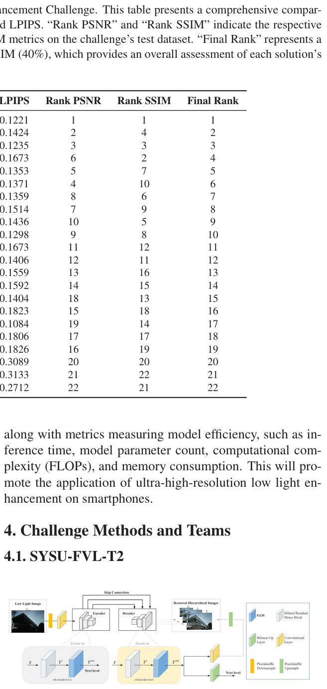
    <figcaption class="paper-figcaption"><strong>Hình 1: Mạng nơ-ron đường trục được sử dụng trong phương pháp của chúng tôi. (Trích xuất lại từ ESDNet [75])</strong></figcaption>
</figure>

<p><strong>Hình 1.</strong> Mạng nơ-ron đường trục (backbone) được sử dụng trong phương pháp của chúng tôi. (Trích xuất lại từ ESDNet [75]).</p>

<p><strong>Mô tả phương pháp (Description):</strong> Như được minh họa trong Hình 1, mạng ESDNet-L [75] được sử dụng làm mạng xương sống (backbone) trong phương pháp đề xuất của chúng tôi để tăng cường ảnh thiếu sáng. Mạng đường trục chủ yếu bao gồm một mạng bộ mã hóa - giải mã (encoder-decoder) ở ba tỉ lệ đặc trưng với các kết nối tắt (skip-connections). Các đặc trưng ở những tỉ lệ khác nhau được tạo ra bằng cách sử dụng phép nội suy song tuyến (bilinear interpolation). Tại mỗi tỉ lệ, các Module Nhận biết Tỉ lệ Căn chỉnh Ngữ nghĩa (Semantic-Aligned Scale-Aware Modules - SAM) được xếp chồng lên nhau nhằm tăng cường khả năng của mô hình trong việc xử lý các biến đổi về tỉ lệ. SAM tích hợp một module trích xuất ngữ cảnh kim tự tháp (pyramid context extraction module) và một module dung hợp động xuyên tỉ lệ (cross-scale dynamic fusion module) để dung hợp có chọn lọc các đặc trưng đa tỉ lệ.</p>

<p>Hơn nữa, đối với quá trình huấn luyện mạng, hàm mất mát $L _ { t o t a l }$ được thiết lập cho các đầu ra ở ba tỉ lệ $\tilde { I _ { 1 } } , \tilde { I _ { 2 } } , \tilde { I _ { 3 } } :$:</p>

<div class="paper-equation"><div class="paper-equation-math">$$L_{total} = \sum_{i=1}^{3} L_C(I_i, \hat{I}_i) + \lambda \cdot L_P(I_i, \hat{I}_i), \quad (1)$$</div></div>

<p>trong đó $\lambda$ được đặt là $0 . 0 4 , \ I _ { i }$ đại diện cho ảnh chuẩn thực tế (ground truth), $I _ { i }$ đại diện cho ảnh tăng cường, $L _ { C }$ đại diện cho mất mát Charbonnier $[42],$ và $L _ { P }$ đại diện cho mất mát cảm nhận (perceptual loss) sử dụng mô hình VGG19 tiền huấn luyện [66].</p>

<p><strong>Chi tiết triển khai (Implementation):</strong> Phương pháp đề xuất dựa trên Python 3.8 và thử nghiệm được tiến hành trên một GPU NVIDIA RTX A6000 (49GB). Lấy cảm hứng từ MIRNet-v2 [79], chúng tôi áp dụng chiến lược huấn luyện tịnh tiến (progressive training strategy). Mô hình được huấn luyện trong 150.000 bước lặp (iterations) từ đầu (from scratch) và được tối ưu hóa bằng thuật toán Adam [41]. Trong quá trình huấn luyện, ở giai đoạn đầu tiên, kích thước batch (batch size) được đặt là 8, và chúng tôi cắt ngẫu nhiên các mẩu ảnh vuông kích thước 720 để huấn luyện. Sau đó, lần lượt sau 46.000, 32.000, 24.000, 18.000 và 18.000 bước lặp, kích thước batch giảm xuống tương ứng là 4, 4, 2, 2 và 1. Chiều dài cạnh của các mẩu ảnh vuông được đặt tương ứng là 1024, 1024, 1280, 1280 và 1600 cho các giai đoạn tương ứng. Tốc độ học ban đầu được đặt là $2 \times 1 0 ^ { - 4 }$ và được điều chỉnh theo lịch suy giảm cosine chu kỳ (cyclic cosine annealing) [52]. Trong giai đoạn kiểm thử, toàn bộ ảnh thiếu sáng được đưa vào mạng và thu trực tiếp ảnh đã tăng cường. Kích thước batch khi kiểm thử được đặt là 1.</p>

<hr class="paper-divider">

<h4 class="paper-passage-subheading-4">4.2. Đội Retinexformer [8]</h4>

<p>Lý thuyết Retinex cổ điển phân rã một hình ảnh thành độ phản xạ (reflectance) $R$ và độ rọi (illumination) $L$ theo công thức $I = R \odot L$, trong đó $\odot$ biểu thị phép nhân từng phần tử (element-wise multiplication). Tuy nhiên, giả định không có nhiễu/biến dạng này không nhất quán với các cảnh chụp thiếu sáng thực tế, nơi mà các biến dạng (corruptions) chắc chắn xuất hiện do cài đặt ISO cao, thời gian phơi sáng dài cũng như trong chính quá trình tăng sáng. Để mô hình hóa các biến dạng này, nhóm tác giả đưa vào các thành phần nhiễu động cho $R$ và $L$, viết lại phương trình dưới dạng:</p>

<p>$\mathbf { I } = ( \mathbf { R } + \hat { \mathbf { R } } ) \subset ( \mathbf { L } + \hat { \mathbf { L } } )$ $= R \odot L + R \odot \hat{L} + \hat{R} \odot (L + \hat{L}). \quad (3)$</p>

<p>trong đó $\hat { \textbf { R } } \in \mathbb { R } ^ { H \times W \times 3 }$ và $\hat { \bf L } \in \mathbb { R } ^ { H \times W }$ là các thành phần nhiễu động. Để tăng sáng $\underline { { \mathbf { I } } } ,$ họ nhân hai vế của Phương trình (3) với một bản đồ tăng sáng (light-up map) $\bar { \bf L }$ sao cho $\bar { \bf L } \odot { \bf L } = { \bf 1 }$:</p>

<p>$\mathbf { I } \odot \bar { \mathbf { L } } = \mathbf { R } + \mathbf { R } \odot ( \hat { \mathbf { L } } \odot \bar { \mathbf { L } } ) + ( \hat { \mathbf { R } } \odot ( \mathbf { L } + \hat { \mathbf { L } } ) ) \odot \bar { \mathbf { L } } , \ \ ( 4 )$</p>

<p>Sau đó, họ đơn giản hóa Phương trình (4) thành:</p>

<div class="paper-equation"><div class="paper-equation-math">$$I_{lu} = I \odot \bar{L} = R + C, \quad (5)$$</div></div>

<p>trong đó $\mathbf { I } _ { l u } \in \mathbb { R } ^ { H \times W \times 3 }$ biểu thị hình ảnh đã được tăng sáng và $\mathbf { C } \in$ $\mathbb { R } ^ { H \times W \times 3 }$ biểu thị $\mathrm { \ t h e \ o v e r a l l \ c o r r u p t i o n \ \ t e r m . \ \ S u b s e - }$. Tiếp theo, họ xây dựng khung làm việc ORF (One-stage Retinex-based Framework) dưới dạng:</p>

<p>$( \mathbf { I } _ { l u } , \mathbf { F } _ { l u } ) = \mathcal { E } ( \mathbf { I } , \mathbf { L } _ { p } ) , \quad \mathbf { I } _ { e n } = \mathcal { R } ( \mathbf { I } _ { l u } , \mathbf { F } _ { l u } ) , \qquad ( 6 )$</p>

<p>trong đó $\mathcal { E }$ biểu thị bộ ước lượng độ rọi (illumination estimator) và $\mathcal { R }$ đại diện cho bộ phục hồi biến dạng (corruption restorer). $\textit { \cal E }$ nhận đầu vào là $\mathbf { I }$ và bản đồ tiên nghiệm chiếu sáng $\mathbf { L } _ { p } ~ \in ~ \mathbb { R } ^ { H \times W }$ của nó. $\textbf { L } _ { p } ~ = ~ \mathrm { m e a n } _ { c } ( \mathbf { I } )$ trong đó $\mathrm{mean}_c$ tính toán các giá trị pixel trung bình qua các kênh màu. $\mathcal { E }$ xuất ra ảnh đã tăng sáng $\mathbf { I } _ { l u }$ và đặc trưng tăng sáng $F_{lu} \in \mathbb{R}^{H \times W \times C}$. Sau đó, $I_{lu}$ và $F_{lu}$ được đưa vào $R$ để khôi phục các biến dạng và tạo ra ảnh tăng cường cuối cùng $\mathbf { I } _ { e n } \in \mathbb { R } ^ { H \times W \times 3 } .$.</p>

<p><strong>Bộ ước lượng Độ rọi (Illumination Estimator):</strong> Kiến trúc của $\mathcal { E }$ được thể hiện trong Hình 2(a)(i). Trước tiên, $\mathcal{E}$ sử dụng một lớp tích chập $\mathrm{conv}1\times 1$ (tích chập với kích thước nhân $=$ 1) để dung hợp phép nối kết của $\mathbf { I }$ và $\mathbf { L } _ { p } . \,$. Các vùng đủ sáng có thể cung cấp thông tin ngữ cảnh ngữ nghĩa phong phú cho các vùng thiếu sáng. Do đó, một lớp tích chập tách biệt theo chiều sâu $\mathrm{conv}9\times 9$ (depth-wise separable convolution) được áp dụng để mô hình hóa tương tác giữa các vùng có điều kiện chiếu sáng khác nhau nhằm tạo ra đặc trưng chiếu sáng $\mathbf { F } _ { l u } . \,$. Tiếp theo, $\mathcal { E }$ sử dụng một lớp $c o n v 1 \! \times \! 1$ để tổng hợp $\mathbf { F } _ { l u }$ nhằm sinh ra bản đồ tăng sáng $\bar { \mathbf { L } } \in \mathbb { R } ^ { H \times W \times 3 } ,$, vốn được dùng để tăng sáng $I$ trong Phương trình (4).</p>

<p><strong>Transformer Được dẫn hướng Chiếu sáng (Illumination-Guided Transformer - IGT):</strong> Như được minh họa trong Hình 2(a)(ii), IGT sử dụng kiến trúc hình chữ U ba tỉ lệ (three-scale U-shaped architecture) [10, 13–16]. Đầu vào của IGT là ảnh đã tăng sáng $I_{lu}$. Trong nhánh lấy mẫu xuống (downsampling branch), $\mathbf { I } _ { l u }$ trải qua một lớp $c o n v 3 \! \times \! 3 ,$, một khối IGAB, một lớp tích chập có bước sải $\mathrm{conv}4\times 4$, hai khối IGAB và một lớp $\mathrm{conv}4\times 4$ để tạo ra các đặc trưng phân cấp $\mathbf { F } _ { i } \in \mathbb { R } ^ { \frac { 1 } { 2 i } \times 2 ^ { i } C }$, trong đó $i$ $= 0, 1, 2$. Sau đó $F_2$ đi qua hai khối IGAB. Tiếp theo, một cấu trúc đối xứng được thiết kế làm nhánh lấy mẫu lên (up-sampling branch). Các kết nối tắt (skip connections) được sử dụng để giảm thiểu sự mất mát thông tin gây ra bởi nhánh lấy mẫu xuống. Nhánh lấy mẫu lên xuất ra một ảnh phần dư $I_{re} \in$ $\mathbb { R } ^ { H \times W \times 3 } . \,$. Sau đó, ảnh tăng cường $\mathbf { I } _ { e n }$ được tạo ra từ tổng của $\mathbf { I } _ { l u }$ và $\mathbf { I } _ { r e } , \, i . e . , \, \mathbf { I } _ { e n } = \mathbf { I } _ { l u } + \bar { \mathbf { I } } _ { r e } .$.</p>

<figure class="paper-figure full-width">
    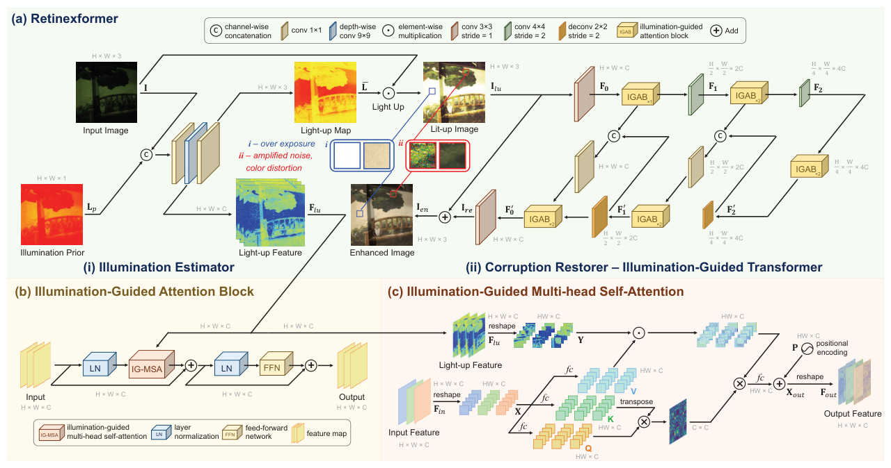
    <figcaption class="paper-figcaption"><strong>Hình 2: Tổng quan về Retinexformer [8]. (a) Retinexformer áp dụng khung làm việc ORF đề xuất gồm bộ ước lượng độ rọi (i) và bộ phục hồi biến dạng (ii) IGT. (b) Đơn vị cơ bản của IGT là IGAB, gồm hai chuẩn hóa lớp (LN), một IG-MSA và một mạng truyền thẳng (FFN). (c) IG-MSA sử dụng các biểu diễn chiếu sáng thu được từ ORF để dẫn hướng tính toán cơ chế tự chú ý (self-attention).</strong></figcaption>
</figure>

<p><strong>Hình 2.</strong> Tổng quan về Retinexformer [8]. (a) Retinexformer áp dụng khung làm việc ORF đề xuất gồm bộ ước lượng độ rọi (i) và bộ phục hồi biến dạng (ii) IGT. (b) Đơn vị cơ bản của IGT là IGAB, gồm hai chuẩn hóa lớp (LN), một IG-MSA và một mạng truyền thẳng (FFN). (c) IG-MSA sử dụng các biểu diễn chiếu sáng thu được từ ORF để dẫn hướng tính toán cơ chế tự chú ý.</p>

<p><strong>IG-MSA:</strong> Như được minh họa trong Hình 2(c), đặc trưng chiếu sáng $\mathbf { F } _ { l u } \in \mathbb { R } ^ { H \times W \times C }$ được ước lượng bởi $\mathcal { E }$ được đưa vào từng khối IG-MSA của IGT. Đầu tiên, đặc trưng đầu vào được định hình lại thành các token $\mathbf { X } \in$ $\mathbb { R } ^ { H W \times C }$ và chia thành $k$ đầu (heads):</p>

<p>$\mathbf { X } = [ \mathbf { X } _ { 1 } , \, \mathbf { X } _ { 2 } , \, \cdots , \, \mathbf { X } _ { k } ] ,$ \quad (7)</p>

<p>trong đó $\mathbf { X } _ { i } \in \mathbb { R } ^ { H W \times d _ { k } } , d _ { k } = \frac { C } { k } ,$ và $i = 1 , 2 , \cdots , k .$. Sau đó, $\mathbf { X } _ { i }$ được chiếu tuyến tính thành $q u e r y ~ \mathbf { Q } _ { i } , \, k e y ~ \mathbf { K } _ { i } ,$ và $v a l u e$ $\mathbf { V } _ { i } \in \mathbb { R } ^ { H W \times d _ { k } } \ \mathrm { a s : }$:</p>

<p>trong đó $\mathbf { W } _ { \mathbf { Q } _ { i } } , \mathbf { W } _ { \mathbf { K } _ { i } } ,$ và $\mathbf { W } _ { \mathbf { V } _ { i } } \in \mathbb { R } ^ { d _ { k } \times d _ { k } }$ là các tham số học được và $T$ biểu thị phép chuyển vị ma trận. Sau đó, họ sử dụng đặc trưng chiếu sáng $\mathbf { F } _ { l u }$ mã hóa thông tin chiếu sáng và tương tác của các vùng có điều kiện ánh sáng khác nhau để định hướng việc tính toán cơ chế tự chú ý (self-attention). Họ định hình lại $\mathbf { F } _ { l u }$ thành $\mathbf { Y } \in \mathbb { R } ^ { H W \times C }$ và chia nó thành $k$ đầu:</p>

<p>$\mathbf { Y } = [ \mathbf { Y } _ { 1 } , \, \mathbf { Y } _ { 2 } , \, \, \cdots , \, \mathbf { Y } _ { k } ] ,$ trong đó $\mathbf { Y } _ { i } \in \mathbb { R } ^ { H W \times d _ { k } } , i = 1 , 2 , \cdots , k .$. Sau đó cơ chế tự chú ý được xây dựng dưới dạng:</p>

<p>một mã hóa vị trí học được $\mathbf { P } \in \mathbb { R } ^ { H W \times C }$ để tạo ra các token đầu ra $\mathbf { X } _ { o u t } \in \mathbb { R } ^ { H W \times C } . \,$. Cuối cùng, họ định hình lại $\mathbf { X } _ { o u t }$ để thu được đặc trưng đầu ra $\mathbf { F } _ { o u t } \in \mathbb { R } ^ { H \times \bar { W } \times C } .$,</p>

<p>trong đó $\alpha _ { i } ~ \in ~ \mathbb { R } ^ { 1 }$ là tham số học được. ${ }$ Sau đó, $k$ đầu được nối kết lại để đi qua một lớp $f c$ và cộng thêm mã hóa vị trí.</p>
                    </div>
                </div>
                
<div class="pedagogical-card" id="analysis-sec2">
    <div class="pedagogical-header">
        <span class="pedagogical-badge">🌱 PHÂN TÍCH SƯ PHẠM & ÔN TẬP CHUYÊN SÂU · MỤC 4.1</span>
        <span class="paper-passage-meta">Khái niệm cốt lõi: Chiến lược Progressive Patch Training</span>
    </div>
    <h3 class="pedagogical-title">🚀 Đột Phá Đội Quán Quân SYSU-FVL-T2: Chiến Lược Huấn Luyện Mảnh Tăng Dần (Progressive Patch Training)</h3>

    <div class="callout intuition">
        <div class="callout-title">🌱 Bí Quyết Đăng Quang Của Đội Vô Địch: Học Từ Dễ Đến Khó, Từ Nhỏ Đến Lớn</div>
        <p>
            Nhiều người nghĩ rằng đội chiến thắng NTIRE 2024 chỉ đơn giản là sở hữu một kiến trúc mạng nơ-ron phức tạp hơn. Nhưng khi đọc sâu vào báo cáo kỹ thuật của đội <strong>SYSU-FVL-T2</strong>, vũ khí bí mật giúp họ đè bẹp các đối thủ dùng siêu máy tính lại nằm ở một chiến lược sư phạm huấn luyện cực kỳ thông minh: <strong>Progressive Patch Training (Huấn luyện mảnh tăng dần theo giai đoạn)</strong>.
        </p>
        <p>
            Quy trình được chia thành 3 giai đoạn diễn tiến như sau:
        </p>
        <ol style="margin-left: 20px; line-height: 1.8;">
            <li><strong>Giai đoạn 1 — Khởi động với Patch nhỏ ($720 	imes 720$), Batch Size lớn:</strong>
                <br>Ở giai đoạn đầu, mạng nơ-ron chưa biết gì về thế giới ảnh đêm. Đội SYSU cắt ảnh thành các mảnh nhỏ $720 	imes 720$. Vì kích thước patch nhỏ, bộ nhớ GPU tiêu tốn rất ít, cho phép tăng kích thước Batch Size lên cao. Điều này giúp gradient ổn định và mô hình học cực nhanh các đặc trưng cơ bản: phân bố ánh sáng toàn cục, cân bằng trắng và khử lớp nhiễu nền thô.
            </li>
            <li><strong>Giai đoạn 2 — Nâng cấp độ khó với Patch trung bình ($1024 	imes 1024$):</strong>
                <br>Khi mô hình đã nắm được phân bố ánh sáng tổng thể, kích thước patch được nâng lên $1024 	imes 1024$. Trường nhìn mở rộng giúp mô hình bắt đầu học được mối liên hệ không gian giữa các vùng sáng và vùng tối cách xa nhau, khôi phục được hình khối của các đồ vật lớn.
            </li>
            <li><strong>Giai đoạn 3 — Về đích với Patch siêu lớn ($1600 	imes 1600$), Batch Size nhỏ:</strong>
                <br>Ở giai đoạn tinh chỉnh cuối cùng (Fine-tuning), mô hình được cho tiếp xúc với các mảng ảnh khổng lồ $1600 	imes 1600$. Dù batch size buộc phải giảm xuống, nhưng lúc này mạng chỉ cần tập trung điều chỉnh các chi tiết vi mô tinh xảo: độ sắc nét của từng sợi tóc, chữ số trên biển hiệu và bề mặt vật liệu gạch đá.
            </li>
        </ol>
    </div>

    <div class="callout analogy">
        <div class="callout-title">💡 Ứng Dụng Kế Thừa Trực Tiếp Vào Môi Trường Google Colab Của Chúng Ta</div>
        <p>
            <em>(Liên hệ sâu sắc với tài nguyên `docs/research/resources/`)</em>
        </p>
        <p>
            Học viên làm đồ án môn học thường gặp tình huống bế tắc: Khi chạy huấn luyện trên Google Colab với GPU miễn phí Tesla T4 (chỉ có 15GB VRAM), nếu đưa ảnh cặp LOL-v1/v2 kích thước đầy đủ vào, máy báo lỗi <code>CUDA out of memory</code>; nếu giảm batch size xuống 1 thì mô hình hội tụ chập chờn và mất rất nhiều ngày.
        </p>
        <p>
            Kế thừa trực tiếp bài học từ Quán quân NTIRE 2024, chúng ta có thể áp dụng chiến lược Progressive Training thu nhỏ phù hợp với quy mô đồ án:
        </p>
        <ul style="margin-left: 20px; line-height: 1.7;">
            <li><strong>Epoch 1 - 50:</strong> Huấn luyện với crop patch nhỏ $128 	imes 128$, Batch Size = 16. Mô hình chạy cực nhanh, học nhanh đặc trưng màu sắc.</li>
            <li><strong>Epoch 51 - 150:</strong> Tăng patch size lên $256 	imes 256$, Batch Size = 8. Mô hình tinh chỉnh cấu trúc không gian và gờ cạnh.</li>
            <li><strong>Epoch 151 - 200:</strong> Tăng patch size lên $384 	imes 384$, Batch Size = 4 với Learning Rate nhỏ để mô hình chạm tới đỉnh cao PSNR mà không bao giờ bị tràn bộ nhớ VRAM!</li>
        </ul>
    </div>
</div>

            </section>

            <!-- MODULE 3: WAVELET & MAMBA TEAMS -->
            <section class="dual-module-section" id="sec-mod3">
                <div class="paper-passage-card">
                    <div class="paper-passage-header">
                        <span class="paper-passage-badge tag-purple">📄 NGUYÊN VĂN BÀI BÁO · MỤC 4.3 - 4.5 (DH-AISP, DIFFLIGHT, UHDMAMBA)</span>
                        <span class="paper-passage-meta">Trường phái Wavelet DWT & State-Space Model Mamba</span>
                    </div>
                    <div class="paper-passage-body">
                        <p>Bên cạnh Retinexformer [8], đội thi cũng áp dụng giải pháp chiến thắng MST [11, 12] của Thử thách Phục hồi Quang phổ NTIRE 2022 $[ 2 ]$ như một phương pháp phụ trợ để kết hợp mô hình (ensemble). Mã nguồn được công bố tại https://github.com/caiyuanhao1998/MST và https://github.com/caiyuanhao1998/MST-plus-plus.</p>

<p><strong>Chi tiết triển khai (Implementation):</strong> Retinexformer được triển khai bằng PyTorch. Mô hình được huấn luyện bằng thuật toán tối ưu Adam [41] $( \beta _ { 1 } ~ = ~ 0 . 9 ~ \mathrm { ~ a n d ~ } ~ \beta _ { 2 } ~ = ~ 0 . 9 9 9 ) ~ \mathrm { f o r ~ } ~ 2 . 5 ~ \times ~ 1 0 ^ { 5 } ~ \mathrm { i t e r a - }$ ${ }$. Tốc độ học ban đầu được đặt là $\, 2 { \times } 1 0 ^ { - 4 } \,$ và sau đó giảm dần đều về $\, 1 \! \times \! 1 0 ^ { - 6 } \,$ theo cơ chế cosine annealing [52] trong suốt quá trình huấn luyện. Các mẩu ảnh kích thước 2000×2000 được cắt ngẫu nhiên từ các cặp ảnh thiếu sáng/đủ sáng làm mẫu huấn luyện. Kích thước batch là 8. Dữ liệu huấn luyện được tăng cường bằng phép quay ngẫu nhiên và lật ảnh. Mục tiêu huấn luyện là giảm thiểu sai số tuyệt đối trung bình (MAE) giữa ảnh tăng cường và ảnh ground-truth. Đội thi sử dụng chiến lược huấn luyện độ chính xác hỗn hợp (mixed-precision training - chế độ `amp` trong PyTorch).</p>

<p>Trong giai đoạn kiểm thử, các ảnh có kích thước 2000×3000 được đưa trực tiếp vào mạng. Các hình ảnh có kích thước 4000×6000 trước tiên được chia thành hai ảnh 4000×3000 để đưa qua mô hình, sau đó ghép lại để thu được ảnh tăng cường hoàn chỉnh. Các chiến lược tự kết hợp (self-ensemble) và kết hợp đa mô hình (multi-model ensemble) được sử dụng cho bài kiểm thử cuối cùng.</p>

<hr class="paper-divider">

<h4 class="paper-passage-subheading-4">4.3. Đội DH-AISP</h4>

<p><strong>Mô tả phương pháp (Description):</strong> Mạng DWT-FFC [83] được sử dụng làm mạng xương sống (backbone) trong phương pháp đề xuất của chúng tôi để tăng cường ảnh thiếu sáng. Ánh sáng tối thường dẫn đến chất lượng ảnh bị suy giảm, độ tương phản thấp, lệch màu và biến dạng cấu trúc. Chúng tôi quan sát thấy nhiều mô hình dựa trên học sâu thể hiện hiệu suất vượt trội trong việc tăng cường ảnh tối, nhưng nhìn chung không đáp ứng được thách thức khi ánh sáng yếu hơn đáng kể. Có hai yếu tố chính dẫn đến điều này: Thứ nhất, do sự phân bổ độ sáng hình ảnh không đồng đều, rất khó để phục hồi các đặc trưng cấu trúc và sắc độ với độ trung thực cao, đặc biệt là ở những vùng có độ sáng cực thấp. Thứ hai, các bộ dữ liệu quy mô nhỏ hiện có cho việc tăng cường ảnh tối không đủ để hỗ trợ việc học ánh xạ đặc trưng đáng tin cậy dựa trên các mô hình mạng nơ-ron tích chập (CNN).</p>

<p>Để giải quyết hai thách thức này, chúng tôi sử dụng một mạng hai nhánh mới tận dụng biến đổi Walsh rời rạc hai chiều (2D Discrete Walsh Transform - DWT), các khối phần dư Tích chập Fourier Nhanh (Fast Fourier Convolution - FFC) và mô hình ConvNeXt tiền huấn luyện. Cụ thể, trong nhánh tần số DWT-FFC, mô hình của chúng tôi sử dụng DWT để thu nhận nhiều đặc trưng tần số cao hơn. Ngoài ra, bằng cách tận dụng trường tiếp nhận (receptive field) lớn do các khối dư FFC cung cấp, mô hình của chúng tôi có thể khai thác hiệu quả thông tin ngữ cảnh toàn cục và tạo ra các hình ảnh có chất lượng cảm nhận tốt hơn. Trong nhánh tri thức tiên nghiệm, chúng tôi sử dụng mạng ConvNeXt tiền huấn luyện trên ImageNet thay cho Res2Net. Điều này cho phép mô hình của chúng tôi học được nhiều thông tin bổ sung hơn và đạt được khả năng khái quát hóa lớn hơn. Tính khả thi và hiệu quả của phương pháp đề xuất đã được chứng minh qua các thử nghiệm sâu rộng.</p>

<p><strong>Chi tiết triển khai (Implementation):</strong> Tập dữ liệu huấn luyện chỉ dựa trên dữ liệu do ban tổ chức cuộc thi cung cấp. Các hình ảnh huấn luyện được tạo ra bằng cách cắt ngẫu nhiên, và GPU huấn luyện là RTX 4080. Một phiên huấn luyện mất khoảng 48 giờ trên một GPU đơn lẻ. Bộ tối ưu hóa sử dụng Adam. Tốc độ học ban đầu là 0,0001, giảm đi một nửa sau mỗi 500 epoch. Quá trình huấn luyện bằng Python trên nền tảng PyTorch.</p>

<hr class="paper-divider">

<h4 class="paper-passage-subheading-4">4.4. Đội NWPU-DiffLight</h4>

<p><strong>Mô tả phương pháp (Description):</strong> Như được minh họa trong Hình 3, chúng tôi đề xuất một đường ống xử lý hai nhánh mang tên DiffLight. Bên cạnh đó, chúng tôi đề xuất phương pháp Hợp nhất Mẩu ảnh Tịnh tiến (Progressive Patch Fusion - PPF) để phục hồi hình ảnh độ phân giải cao. Cho một hình ảnh thiếu sáng làm đầu vào, nó sẽ được đưa vào hai nhánh riêng biệt. Trong nhánh Khử nhiễu Tăng cường (Denoising Enhancement - DE) (Hình 3(a)), hình ảnh chất lượng thấp được xử lý tuần tự bởi DiffIR [5] và LEDNet [65] để thu được hình ảnh được tăng cường bởi nhánh DE, $\mathrm{Output}_{DE}$:</p>

<p>$\mathbf { O u t p u t } _ { D E } = \mathrm { L E D N e t } ( D I f f B a c k w a r d ( I n p u t ) ) , \ \ ( 1 1 )$</p>

<p>trong đó $\mathrm{DiffBackward}(\cdot)$ biểu thị Quá trình Ngược (Backward Process) của DiffIR (dành cho suy luận). Hình ảnh được tăng cường, $\mathrm{Output}_{DE}$, có độ nhiễu khá thấp, độ lệch màu tối thiểu cũng như độ sáng được tăng cường cao, nhưng lại có sự suy giảm quá mức các chi tiết.</p>

<p>Trong nhánh Bảo toàn Chi tiết (Detail Preservation - DP) (Hình 3(b)), phương pháp mới đề xuất để phục hồi hình ảnh độ phân giải cao, PPF, được sử dụng. Để phục hồi chi tiết tốt hơn từ các hình ảnh độ phân giải cao, hình ảnh được chia thành $n \,$ mẩu nhỏ chất lượng thấp (LQ) chồng lấn nhau trong quá trình phân đoạn (Segmentation); kích thước mẩu ảnh được điều chỉnh theo kích thước đầu vào phục vụ huấn luyện. Mỗi mẩu ảnh được xử lý riêng biệt thông qua Restormer để thu được $n$ mẩu chất lượng cao (HQ) chồng lấn. Để thu được $\mathrm{Output}_{DP}$, hình ảnh được tăng cường bởi nhánh DP, phương pháp PPF được áp dụng trên các mẩu đã tăng cường này:</p>

<p>$\mathbf { O u t p u t } _ { D P } = \mathrm { P P F ( R e s t o r m e r ( S e g m e n t a t i o n ( I n p u t ) ) } ) .$ \quad (12)</p>

<p>Hiện tượng giả dạng khối (block artifacts) do phương pháp hợp nhất truyền thống tạo ra được loại bỏ bởi PPF, mang lại chất lượng thị giác tốt và các chi tiết phong phú. ${ }$ Cuối cùng, $O u t p u t _ { D E }$ và $O u t p u t _ { D P }$ được nhân với các trọng số $w _ { 1 }$ và $w _ { 2 }$ tương ứng, rồi cộng lại để tạo thành hình ảnh đầu ra cuối cùng sau khi lấy trung bình có trọng số:</p>

<p>$\mathbf { O u t p u t } = w _ { 1 } \mathbf { O u t p u t } _ { D E } + w _ { 2 } \mathbf { O u t p u t } _ { D P } . \quad ( 1 3 )$</p>

<p><strong>Hợp nhất Mẩu ảnh Tịnh tiến (Progressive Patch Fusion - PPF):</strong> Đối với các hình ảnh độ phân giải cao, chúng tôi sử dụng phương pháp Hợp nhất Mẩu ảnh Tịnh tiến (PPF) trong quá trình kiểm thử. Cách tiếp cận này kết hợp quản lý trọng số tịnh tiến tại biên để giảm thiểu hiệu quả các đường nối cạnh và cải thiện đáng kể độ trung thực thị giác. PPF được thực hiện qua các bước như sau: 1. <em>Phân đoạn hình ảnh:</em> Ảnh đầu vào $I$ được phân đoạn thành các mẩu có kích thước $p .$. Các mẩu này trượt trên hình ảnh với bước sải (stride) $s$ để xác định vị trí của chúng. 2. <em>Suy luận mô hình:</em> Mô hình được sử dụng để suy luận tuần tự từng mẩu ảnh, thu được các mẩu ảnh đã suy luận. 3. <em>Tính toán trọng số:</em> Bốn tensor trọng số, $\mathrm{weight}_{1,2,3,4}$, được tính toán để hòa trộn các vùng chồng lấn. Trọng số cho các vùng chồng lấn biến thiên tuyến tính từ 1 đến 0. $w e i g h t _ { 1 , 2 }$ được sử dụng để hòa trộn các phần chồng lấn giữa các mẩu ảnh liền kề, trong khi $\mathrm{weight}_{3,4}$ được sử dụng để hợp nhất các phần chồng lấn giữa các hàng. 4. <em>Tái tạo hình ảnh:</em> Khởi tạo một ảnh khôi phục trống và $p a t c h _ { r o w }$ ảnh hàng, dùng để lưu trữ ảnh đã tái tạo và hàng hiện đang được xử lý. 5. <em>Quá trình hợp nhất:</em> - $\textbf { * }$ Với mỗi $h _ { i }$ (chỉ số hàng) và $w _ { i }$ (chỉ số cột), trích xuất mẩu ảnh tương ứng từ tensor mẩu ảnh. Nếu đó là mẩu ảnh đầu tiên của hàng ($( w _ { i }$ bằng 0), thêm trực tiếp nó vào $\mathrm { ~ t o ~ t h e ~ } p a t c h _ { r o w } .$. - $\bullet$ Đối với các mẩu ảnh tiếp theo, sử dụng $\, w e i g h t _ { 1 , 2 }$ để hòa trộn các vùng chồng lấn giữa hai mẩu ảnh. - Thêm hàng mẩu ảnh đã xử lý vào hình ảnh khôi phục. - $\bullet$ Nếu đó không phải là hàng đầu tiên ($( h _ { i } ~ \neq ~ 0 ) ,$), việc hòa trộn giữa các hàng sử dụng $w e i g h t _ { 3 , 4 }$ là bắt buộc. 6. <em>Đầu ra:</em> Sau các bước nói trên, tensor khôi phục chứa hình ảnh đã phục hồi hoàn chỉnh.</p>

<figure class="paper-figure full-width">
    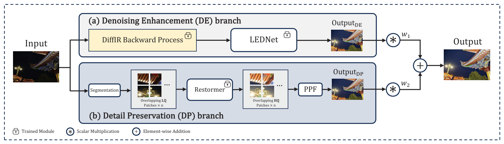
    <figcaption class="paper-figcaption"><strong>Hình 3: Đường ống xử lý DiffLight. DiffLight bao gồm hai nhánh: (a) Nhánh Khử nhiễu Tăng cường (DE) và (b) Nhánh Bảo toàn Chi tiết (DP).</strong></figcaption>
</figure>

<p><strong>Hình 3.</strong> Đường ống xử lý DiffLight. DiffLight bao gồm hai nhánh: (a) Nhánh Khử nhiễu Tăng cường (DE) và (b) Nhánh Bảo toàn Chi tiết (DP).</p>

<p><strong>Chi tiết triển khai (Implementation):</strong> Đối với nhánh Khử nhiễu Tăng cường (DE), chúng tôi huấn luyện DiffIR [5] và LEDNet [65] riêng biệt. Trong quá trình huấn luyện mô hình khuếch tán (diffusion model), tổng số bước thời gian $T$ được đặt là 4, và $\beta _ { t }$ tăng tuyến tính từ $\beta _ { 1 } = 0 . 9$ đến $\beta _ { T } = 0 . 9 9$. Chúng tôi huấn luyện hai giai đoạn của DiffIR $[ 5 ]$ chỉ sử dụng hàm mất mát $\mathcal { L } _ { 1 }$. Chúng tôi huấn luyện $\mathrm { D i f f I R } _ { S 1 }$ trong $3 0 0 \mathrm { K }$ bước lặp với tốc độ học ban đầu $2 \, \times \, 1 0 ^ { - 4 } \,$ giảm dần theo hàm cosine. Đối với DiffIR giai đoạn 2 (DiffIRS2), chúng tôi huấn luyện 300.000 bước lặp với tốc độ học ban đầu $2 \! \times \! 1 0 ^ { - 4 }$ và tham số suy giảm gamma $0 . 5$ với bộ điều chỉnh MultiStepLR. Đối với cả hai giai đoạn huấn luyện, chúng tôi tăng dần kích thước mẩu ảnh và giảm kích thước batch. Cụ thể, trong quá trình huấn luyện lặp, các cặp kích thước mẩu ảnh và kích thước batch được thiết lập tương ứng để huấn luyện trong (92K), (80K), (38K), (90K) bước lặp dưới các cấu hình tương ứng là (192, 8), (256, 4), (320, 2), (400, 1).</p>

<p>Mô hình LEDNet [65] được huấn luyện trên kết quả suy luận từ tập huấn luyện do DiffIR tạo ra, trong khi ảnh Ground Truth vẫn giữ nguyên. Chúng tôi huấn luyện LEDNet bằng bộ tối ưu hóa Adam [41] với $\beta _ { 1 } ~ = ~ 0 . 9 , ~ \beta _ { 2 } ~ = ~ 0 . 9 9$ trong tổng cộng 300.000 bước lặp. Tốc độ học ban đầu được đặt là $1 \times 1 0 ^ { - 4 }$ và được cập nhật theo chiến lược cosine annealing [52]. Tương tự như DiffIR, chúng tôi vẫn áp dụng phương pháp huấn luyện tịnh tiến, các cặp kích thước mẩu ảnh và kích thước batch được thiết lập để huấn luyện tương ứng trong (90K), (70K), (70K), (70K) bước lặp dưới các cấu hình là (256, 8), (512, 4), (1024, 1), (1320, 1).</p>

<p>Chúng tôi triển khai nhánh Bảo toàn Chi tiết (DP) bằng PyTorch. Mô hình được huấn luyện với bộ tối ưu hóa Adam [41] $( \beta _ { 1 } = 0 . 9$ và $\beta _ { 2 } = 0 . 9 9 9 )$ trong ít nhất 300 epoch bằng một GPU NVIDIA RTX 3090 đơn lẻ. Tốc độ học ban đầu được đặt là $1 \times 1 0 ^ { - 4 }$ và sau đó giảm đều đặn về $1 \times 1 0 ^ { - 7 }$ bằng sơ đồ cosine annealing $\{ 5 2 \}$ trong suốt quá trình huấn luyện. Chúng tôi cắt ngẫu nhiên hình ảnh thành kích thước $2 5 6 \times 2 5 6$ cho mẩu ảnh và đặt kích thước batch là 8. Khi kiểm thử, chúng tôi sử dụng phương pháp Hợp nhất Mẩu ảnh Tịnh tiến (PPF) đề xuất nhằm giải quyết các hiện tượng giả tại biên và mang lại kết quả tri giác thị giác vượt trội cho các hình ảnh độ phân giải cao.</p>

<hr class="paper-divider">

<h4 class="paper-passage-subheading-4">4.5. Đội GiantPandaCV</h4>

<p><strong>Mô tả phương pháp (Description):</strong> Các mạng xương sống phục hồi hiện nay thường bị giới hạn do độ chệch quy nạp cục bộ vốn có hoặc độ phức tạp tính toán bậc hai trong các tác vụ phục hồi hình ảnh Siêu nét (Ultra-High-Definition - UHD). Gần đây, Mô hình Không gian Trạng thái Cấu trúc Chọn lọc (Selective Structured State Space Model), điển hình như Mamba [50], đã cho thấy tiềm năng to lớn trong việc mô hình hóa các phụ thuộc tầm xa với độ phức tạp tuyến tính. Do đó, chúng tôi đưa Mô hình Không gian Trạng thái Cấu trúc Chọn lọc [33] vào tác vụ tăng cường ảnh thiếu sáng và đề xuất một mô hình hiệu quả cho ảnh UHD, mang tên UHDMamba. Cụ thể, UHDMamba của chúng tôi sử dụng Khối Không gian Trạng thái Phần dư (Residual State Space Block) làm thành phần cốt lõi, sử dụng tích chập và cơ chế chú ý kênh (channel attention) để tăng cường năng lực của kiến trúc vanilla Mamba. Để suy luận hiệu quả trên ảnh UHD, chúng tôi sử dụng PixelUnshuffle để lấy mẫu xuống các ảnh UHD rồi đưa chúng vào mạng để tăng cường. Cuối cùng, chúng tôi sử dụng phép lấy mẫu lên PixelShuffle để tái tạo lại hình ảnh hoàn chỉnh cuối cùng.</p>
                    </div>
                </div>
                
<div class="pedagogical-card" id="analysis-sec3">
    <div class="pedagogical-header">
        <span class="pedagogical-badge">🌱 PHÂN TÍCH SƯ PHẠM & ÔN TẬP CHUYÊN SÂU · MỤC 4.3</span>
        <span class="paper-passage-meta">Khái niệm cốt lõi: Phân tách Wavelet DWT & Miền tần số</span>
    </div>
    <h3 class="pedagogical-title">🌊 Vũ Khí Miền Tần Số: Tại Sao Biến Đổi Wavelet (DH-AISP) Lại Hiệu Quả Cho Ảnh Thiếu Sáng?</h3>

    <div class="callout intuition">
        <div class="callout-title">🌱 Trực Giác Toán Học Về Phân Tách Wavelet 2D (Discrete Wavelet Transform - DWT)</div>
        <p>
            Ở vị trí thứ 3 của giải đấu là đội <strong>DH-AISP</strong> với một giải pháp thuần túy dựa trên biến đổi miền tần số Wavelet (DWT-FFC). Hãy cùng phân tích vì sao giải pháp này lại thông minh:
        </p>
        <p>
            Khi áp dụng Biến đổi Wavelet Haar 2D lên một bức ảnh, nó tự động bóc tách ma trận ảnh thành 4 dải tần số độc lập:
        </p>
        <ol style="margin-left: 20px; line-height: 1.8;">
            <li><strong>Dải tần số thấp LL (Low-Low):</strong> Là phiên bản thu nhỏ làm mượt của ảnh, chứa hầu như toàn bộ <em>thông tin năng lượng và độ sáng nền</em>.</li>
            <li><strong>Dải tần số ngang LH (Low-High):</strong> Chứa các đường gờ cạnh và viền chi tiết nằm ngang.</li>
            <li><strong>Dải tần số dọc HL (High-Low):</strong> Chứa các đường gờ cạnh và viền chi tiết thẳng đứng.</li>
            <li><strong>Dải tần số chéo HH (High-High):</strong> Chứa các chi tiết góc nhọn, đường chéo và... <em>hầu như toàn bộ các hạt nhiễu cảm biến ngẫu nhiên</em>!</li>
        </ol>
        <p>
            Nhờ sự phân tách kỳ diệu này, mạng nơ-ron của đội DH-AISP không cần phải "vật lộn" xử lý tất cả mọi thứ cùng một lúc:
            <br>— Trên kênh $LL$: Mô hình chỉ tập trung kích hoạt độ sáng mượt mà.
            <br>— Trên kênh $HH$: Mô hình áp dụng các bộ lọc co cụm (Thresholding / Gating) để triệt tiêu sạch sẽ nhiễu hạt mà không sợ làm mờ đi các cạnh chính ở kênh $LH$ và $HL$!
        </p>
        <p>
            Điều này một lần nữa khẳng định sự tương đồng tuyệt đối với phát hiện của bài báo <strong>DarkIR (CVPR 2025)</strong>: Việc phân tách miền tần số (Fourier hoặc Wavelet) là con đường ngắn nhất và thanh lịch nhất để khuất phục bài toán thiếu sáng.
        </p>
    </div>
</div>

            </section>

            <!-- MODULE 4: DIFFUSION & OTHER TEAMS -->
            <section class="dual-module-section" id="sec-mod4">
                <div class="paper-passage-card">
                    <div class="paper-passage-header">
                        <span class="paper-passage-badge tag-green">📄 NGUYÊN VĂN BÀI BÁO · MỤC 4.6 - 4.20 (CÁC ĐỘI CÒN LẠI & TEAM 221B)</span>
                        <span class="paper-passage-meta">Kỷ Lục LPIPS & Trường Phái Tổng Hợp</span>
                    </div>
                    <div class="paper-passage-body">
                        <p>Kiến trúc chính của mạng UHDMamba được thể hiện trong Hình 4, bao gồm ba thành phần chính: Trích xuất đặc trưng nông (Shallow feature extraction), Tăng cường đặc trưng sâu (Deep feature enhancement) và Tái tạo qua lấy mẫu lên (Up-sampling reconstruction). Cho một hình ảnh đầu vào chất lượng thấp (LQ) $I _ { L Q } ~ \in ~ \mathcal { R } ^ { H \times W \times 3 } ,$, trước tiên chúng tôi sử dụng một lớp tích chập $3 \times 3$ từ giai đoạn trích xuất đặc trưng nông để tạo ra đặc trưng nông $F _ { s } \in \mathcal { R } ^ { H \times W \times \overline { { s } } } \, ,$, trong đó $H$ và $W$ đại diện cho chiều cao và chiều rộng của ảnh đầu vào, $C$ là số kênh và $S$ là hệ số tỉ lệ lấy mẫu xuống. Tiếp theo, đặc trưng nông $F _ { s }$ trải qua thao tác lấy mẫu xuống và giai đoạn tăng cường đặc trưng sâu để thu được đặc trưng sâu $F _ { d } ^ { l } \in \mathcal { R } ^ { \frac { H } { S } \times S C }$ tại tầng thứ $l { - \mathrm { t h } }$, $l \in \{1, 2, \dots, L\}$. Giai đoạn này được xếp chồng bởi nhiều Khối Không gian Trạng thái Phần dư (Residual State-Space Blocks - RSSB). Cuối cùng, chúng tôi sử dụng phép cộng từng phần tử để thu được đầu vào của giai đoạn tái tạo chất lượng cao $F _ { R } = F _ { L } + F _ { s } ,$, vốn được dùng để lấy mẫu lên và tái tạo hình ảnh đầu ra chất lượng cao (HQ) $I _ { H Q } .$.</p>

<figure class="paper-figure full-width">
    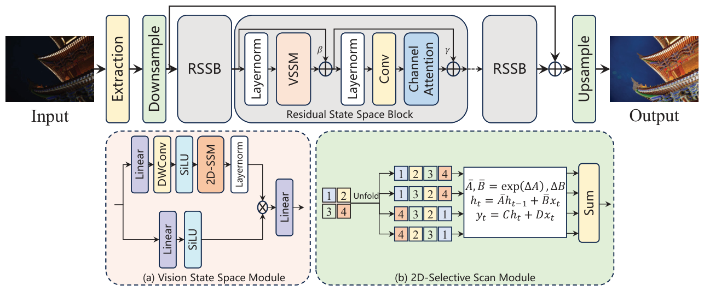
    <figcaption class="paper-figcaption"><strong>Hình 4: Tổng quan về kiến trúc UHDMamba của chúng tôi cho bài toán Tăng cường Ảnh Thiếu sáng UHD.</strong></figcaption>
</figure>

<p><strong>Hình 4.</strong> Tổng quan về kiến trúc UHDMamba của chúng tôi cho bài toán Tăng cường Ảnh Thiếu sáng UHD.</p>

<p><strong>Chi tiết triển khai (Implementation):</strong> Phương pháp đề xuất tiến hành các thử nghiệm trong PyTorch trên hai GPU NVIDIA GeForce RTX 3090. Để tối ưu hóa mạng, mô hình sử dụng bộ tối ưu hóa Adam $[ 4 1 ]$ với tốc độ học $2 \times 1 0 ^ { - 4 } . ~ \mathrm { ~ W e }$. Chúng tôi cắt ngẫu nhiên hình ảnh độ phân giải đầy đủ thành độ phân giải $5 1 2 \times 5 1 2$ làm đầu vào và thực hiện 200.000 bước lặp huấn luyện với kích thước batch là 4. Để tăng cường dữ liệu huấn luyện, các phép lật ngẫu nhiên theo chiều ngang và dọc được áp dụng cho các hình ảnh đầu vào. Số lượng khối RSSB và số kênh đặc trưng lần lượt được đặt là 8 và 48. Cả DownSampler và UpSampler đều được cấu tạo từ một lớp tích chập dưới pixel (sub-pixel convolutional layer).</p>

<p>Nhằm tối đa hóa hiệu suất tiềm năng của mô hình, phương pháp áp dụng chiến lược Tăng cường Dữ liệu lúc Kiểm thử (Test Time Augmentation - TTA). Trong thời gian kiểm thử, mô hình sử dụng các góc quay 90°, 180°, 270°, lật ngang và lật dọc để tạo ra sáu đầu vào tăng cường $\{ I _ { n , i } ^ { t r , p u t } \, = \, T _ { i } ( I _ { n } ^ { i n p u t } ) \}$ từ các ảnh đầu vào bên trái và bên phải $I _ { n } ^ { i n p u t } . \ \ \mathrm { W i t h }$. Từ những hình ảnh đầu vào tăng cường này cùng với hình ảnh đầu vào gốc, chúng tôi tạo ra các hình ảnh rõ nét tương ứng $~ \{ I _ { n } ^ { o u t p u t } , \cdots , I _ { n , 0 } ^ { o u t } \} ~$ bằng cách sử dụng $\mathrm { ~ t h e ~ }$ mạng nơ-ron. Sau đó, chúng tôi áp dụng biến đổi ngược cho các hình ảnh đầu ra đó để lấy lại hình học ban đầu $\tilde { I } _ { n , i } ^ { o u t p u t } = T _ { i } ^ { - 1 } ( I _ { n , i } ^ { o u t } ) .$. Cuối cùng, chúng tôi tính trung bình tất cả các đầu ra đã biến đổi để tạo ra kết quả TTA như sau: $I _ { n } ^ { o u t p u t } = { \frac { 1 } { 6 } } \sum _ { i = 1 } ^ { o u t } .$.</p>

<hr class="paper-divider">

<h4 class="paper-passage-subheading-4">4.6. Đội LVGroup.HFUT</h4>

<p><strong>Mô tả phương pháp (Description):</strong> Tăng cường ảnh thiếu sáng đề cập đến một quy trình hoặc tập hợp các kỹ thuật trong thị giác máy tính nhằm cải thiện chất lượng thị giác của hình ảnh bằng cách điều chỉnh điều kiện chiếu sáng của chúng. Quá trình này có thể bao gồm việc tăng độ sáng và độ tương phản, điều chỉnh các vùng thiếu sáng hoặc cháy sáng, và tăng cường chi tiết trong vùng tối (shadows) và vùng sáng (highlights). Mục tiêu là tạo ra những hình ảnh phản ánh chính xác hơn khung cảnh như mắt người cảm nhận, ngay cả trong điều kiện ánh sáng không lý tưởng. Tuy nhiên, các mô hình phức tạp rất khó thực hiện suy luận trên GPU do bị giới hạn bởi độ phân giải hình ảnh lớn. Do đó, NAFNet [18] được chọn làm đường cơ sở (baseline) và được làm nhẹ hơn nữa để thu được một cấu trúc hoàn toàn mới. Cụ thể, số lượng kênh được giữ không đổi ở giai đoạn đầu của pha mã hóa và ở cuối pha giải mã, trong khi các thao tác lấy mẫu lên và lấy mẫu xuống vẫn được thực hiện, như thể hiện trong Hình 5.</p>

<figure class="paper-figure full-width">
    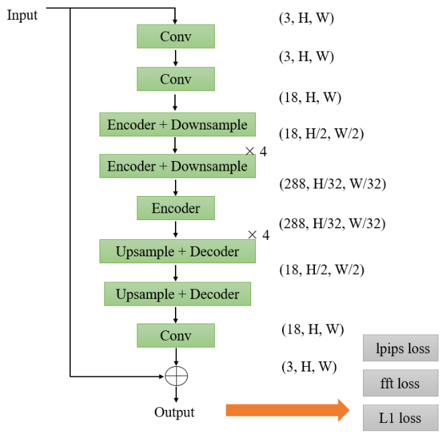
    <figcaption class="paper-figcaption"><strong>Hình 5: Kiến trúc mạng của đội LVGroup.HFUT.</strong></figcaption>
</figure>

<p><strong>Hình 5.</strong> Kiến trúc mạng của đội LVGroup.HFUT.</p>

<p>Cụ thể hơn, hình ảnh đầu vào ban đầu trải qua các thao tác căn chỉnh pixel và tích chập, trong đó số kênh được mở rộng từ 3 lên 18. Sau đó, hình ảnh đi qua bộ mã hóa và module lấy mẫu xuống, làm tăng số lượng kênh lên 288, trong khi kích thước không gian giảm xuống còn 1/32 kích thước ban đầu. Tiếp theo, một bộ giải mã đi kèm với module lấy mẫu lên được áp dụng, giúp điều chỉnh số lượng kênh về 18 và khôi phục các kích thước về kích thước ban đầu. Đầu ra cuối cùng sau đó được tạo ra thông qua một lớp tích chập. Trong quá trình huấn luyện, mô hình được ràng buộc bằng sự kết hợp của mất mát LPIPS, mất mát FFT và mất mát L1 để tối ưu hóa hiệu suất và đảm bảo độ trung thực với hình ảnh đầu vào.</p>

<p><strong>Chi tiết triển khai (Implementation):</strong> Kiến trúc đề xuất dựa trên PyTorch 2.2.1 và một GPU NVIDIA RTX 4090 với bộ nhớ 24GB. 2000 epoch được thiết lập để huấn luyện với kích thước batch là 2, sử dụng AdamW với $\beta _ { 1 } = \, 0 . 9$ và $\beta _ { 2 } \, = \, 0 . 9 9 9$ để tối ưu hóa. Tốc độ học ban đầu được đặt là 0,001 và lịch suy giảm cosine annealing được sử dụng để điều chỉnh tốc độ học. Thao tác cắt ngẫu nhiên hình ảnh về kích thước 768×768 được thực hiện đầu tiên, sau đó là phép lật ngang với xác suất 0,5 để tăng cường dữ liệu. Ảnh đầu vào được đưa vào mạng và bị ràng buộc bởi ba hàm mất mát: mất mát LPIPS với trọng số 0,5, mất mát FFT với trọng số 0,1 và mất mát $L _ { 1 }$ với trọng số 1.</p>

<p>Quá trình kiểm thử bắt đầu bằng việc kết hợp tổng cộng 10 checkpoint cách đều nhau thu được trong giai đoạn huấn luyện. Cụ thể, ảnh đầu vào với độ phân giải gốc lần lượt đi qua 10 checkpoint này, tạo ra 10 đầu ra. Cuối cùng, chiến lược kết hợp mô hình (model ensemble) được áp dụng để xử lý 10 đầu ra này, mang lại kết quả tối hậu. Ngoài ra, do tập kiểm thử chứa các hình ảnh có độ phân giải quá lớn (4000 $\times 6 0 0 0 ) ,$), một GPU A100 (bộ nhớ 40GB) được sử dụng để suy luận nhằm tránh lỗi "CUDA out of memory".</p>

<hr class="paper-divider">

<h4 class="paper-passage-subheading-4">4.7. Đội Try1try8</h4>

<figure class="paper-figure full-width">
    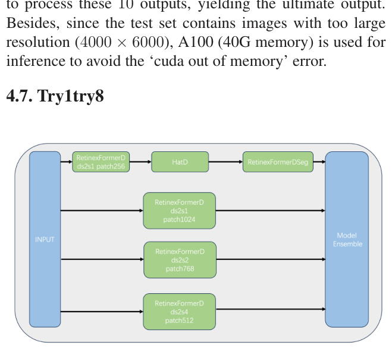
    <figcaption class="paper-figcaption"><strong>Hình 6: Kiến trúc mạng của đội Try1try8.</strong></figcaption>
</figure>

<p><strong>Hình 6.</strong> Kiến trúc mạng của đội Try1try8.</p>

<p><strong>Mô tả phương pháp (Description):</strong> Do độ phân giải lớn của các hình ảnh suy luận, các tác giả đã thêm thao tác lấy mẫu xuống vào RetinexFormer, đổi tên thành RetinexFormerD. Các tác giả đã sử dụng kiến trúc mô hình RetinexFormerD với các kích thước mẩu ảnh huấn luyện khác nhau, và ghép tầng (cascade) nó với một mô hình khử nhiễu (HATD) cùng một mô hình tinh chỉnh (RetinexFormerDseg). Cuối cùng, các tác giả đã thực hiện kết hợp mô hình cho tất cả các kết quả mô hình. Cấu trúc mô hình được hiển thị trong Hình 6.</p>

<p><strong>Chi tiết triển khai (Implementation):</strong> <em>Nhánh 1 (path1):</em> Ban đầu, các tác giả áp dụng phép lấy mẫu xuống cho RetinexFormer để tạo ra RetinexFormerD (do kích thước lớn của ảnh suy luận), tiếp theo là sử dụng mô hình HATD (tích hợp mô hình HAT kèm thao tác lấy mẫu xuống) để khử nhiễu các kết quả suy luận của RetinexFormerD. Cuối cùng, RetinexFormerSeg (tích hợp kết quả phân đoạn hình ảnh vào mô hình) được sử dụng để tinh chỉnh kết quả cuối cùng. <em>Nhánh 2 (path2):</em> Các tác giả đã huấn luyện RetinexFormerD với nhiều kích thước mẩu ảnh và giai đoạn khác nhau, tạo ra ba mô hình RetinexFormerD: RetinexFormerD ds2s1 với kích thước mẩu ảnh 1024, RetinexFormerD ds2s2 với kích thước mẩu ảnh 768, và RetinexFormerD ds2s4 với kích thước mẩu ảnh 512. Cuối cùng, các tác giả tính trung bình các kết quả thu được từ nhánh 1 và nhánh 2. Mô hình được huấn luyện bằng bộ tối ưu hóa Adam, tốc độ học 2e-4 trên GPU V100.</p>

<hr class="paper-divider">

<h4 class="paper-passage-subheading-4">4.8. Đội Pixel warrior</h4>

<figure class="paper-figure full-width">
    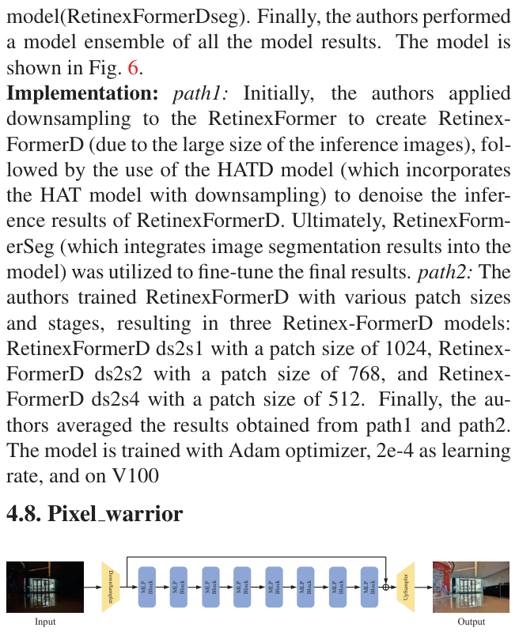
    <figcaption class="paper-figcaption"><strong>Hình 7: Kiến trúc mạng của đội Pixel warrior.</strong></figcaption>
</figure>

<p><strong>Hình 7.</strong> Kiến trúc mạng của đội Pixel warrior.</p>

<p><strong>Mô tả phương pháp (Description):</strong> Nhóm đề xuất một kiến trúc dựa trên Vision MLP hiệu quả cho bài toán tăng cường ảnh thiếu sáng (xem Hình 7). Khối MLP của chúng tôi chứa các thao tác biến đổi chiều không gian (xem Hình 8). Cụ thể, trước tiên chúng tôi chuẩn hóa các đặc trưng đầu vào, sau đó thực hiện các biến đổi chiều đa giai đoạn để xoay phối cảnh không gian của tensor qua 3 chiều $H , \, W$ và $C .$. Tại đây, bản đồ đặc trưng 3D trải qua quá trình mã hóa đệ quy từ $( C , H , W )$ sang $( H , W , C )$ rồi sang $( W , C , H ) ,$, cho phép nắm bắt thông tin không gian toàn cục thông qua các chiều đa góc nhìn. Cuối cùng, chúng tôi điều chỉnh bản đồ đặc trưng về độ phân giải ban đầu và tương tác với các đặc trưng đầu vào để kích hoạt các đặc trưng hữu ích.</p>

<figure class="paper-figure full-width">
    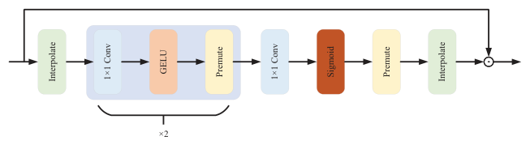
    <figcaption class="paper-figcaption"><strong>Hình 8: Kiến trúc mạng của khối MLP.</strong></figcaption>
</figure>

<p><strong>Hình 8.</strong> Kiến trúc mạng của khối MLP.</p>

<p><strong>Chi tiết triển khai (Implementation):</strong> Chúng tôi tiến hành huấn luyện mạng trên bốn GPU NVIDIA Tesla V100 bộ nhớ 32GB. Tổng cộng, chúng tôi thực hiện 500 epoch huấn luyện. Trong quá trình huấn luyện, chúng tôi sử dụng bộ tối ưu hóa Adam với tốc độ học $2 \times 1 0 ^ { - 4 } .$. Kích thước mẩu ảnh được đặt là $2 0 0 0 \times 2 0 0 0$ pixel và kích thước batch được đặt là 4. Để tăng cường dữ liệu huấn luyện, chúng tôi áp dụng các phép lật ngang và dọc ngẫu nhiên.</p>

<hr class="paper-divider">

<h4 class="paper-passage-subheading-4">4.9. Đội HuiT</h4>

<figure class="paper-figure full-width">
    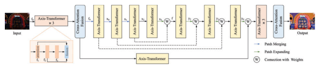
    <figcaption class="paper-figcaption"><strong>Hình 9: Minh họa về mô hình LLformer đề xuất. (Trích xuất lại từ LLformer [69])</strong></figcaption>
</figure>

<p><strong>Hình 9.</strong> Minh họa về mô hình LLformer đề xuất. (Trích xuất lại từ LLformer [69]).</p>

<p><strong>Mô tả phương pháp (Description):</strong> Nhóm đã giới thiệu LLformer [69] để giải quyết vấn đề này. Như thể hiện trong Hình 9, cho một hình ảnh thiếu sáng, LLformer trước tiên trích xuất các đặc trưng nông $f _ { 0 } , \,$, sau đó các đặc trưng này được đưa vào ba khối Transformer tuần tự để trích xuất đặc trưng sâu. Cụ thể, các đặc trưng trung gian xuất ra từ các khối Transformer được ký hiệu là $f _ { 1 } , \ f _ { 2 } ,$ và $f_3$. Các đặc trưng này được tổng hợp và chuyển đổi thành các đặc trưng hình ảnh tăng cường $\, f _ { 4 }$ bằng cách sử dụng khối dung hợp chú ý xuyên tầng (cross-layer attention fusion block) đề xuất. Tiếp theo, quá trình trích xuất đặc trưng sâu được thực hiện trên $f _ { 4 }$ bằng cách sử dụng bốn giai đoạn trong bộ mã hóa. Cụ thể, mỗi giai đoạn bao gồm các khối Patch Merging và Axis-Transformer. Sau đó, các đặc trưng tiềm ẩn độ phân giải thấp dần dần được khôi phục về biểu diễn độ phân giải cao bằng bộ giải mã gồm ba giai đoạn và nhận $x _ { 3 }$ làm đầu vào ${ }$. Mỗi giai đoạn bao gồm các khối Patch Expanding và Axis-Transformer.</p>

<p>Để giảm mất mát thông tin ở đầu mã hóa và đạt được sự phục hồi đặc trưng tốt hơn ở đầu giải mã, các kết nối tắt có trọng số với tích chập 1×1 được sử dụng để dung hợp đặc trưng ở cả đầu mã hóa và giải mã. Thứ ba, sau khi giải mã, các đặc trưng sâu $f$ được xử lý tuần tự qua ba khối Axis-Transformer và một khối dung hợp chú ý xuyên tầng để tạo ra các đặc trưng tăng cường cho việc tái tạo hình ảnh. Cuối cùng, hình ảnh tăng cường được sinh ra. Khối Axis-Transformer (như Hình 10) thực hiện cơ chế tự chú ý dọc theo trục chiều cao và chiều rộng của các đặc trưng trong chiều xuyên kênh để thu nhận tính tự tương đồng phi cục bộ và các tương quan tầm xa với độ phức tạp tính toán thấp hơn. Khối Dung hợp Chú ý Chéo (Cross-Attention Fusion block, như Hình 11) học các trọng số chú ý giữa các đặc trưng tầng khác nhau và dung hợp thích ứng các đặc trưng với các trọng số đã học để cải thiện khả năng biểu diễn đặc trưng.</p>

<p><strong>Chi tiết triển khai của đội HuiT (tiếp theo):</strong> Mã nguồn được triển khai dựa trên nền tảng PyTorch. Chúng tôi đã huấn luyện mô hình trong 300 epoch trên hai GPU NVIDIA RTX 4090 với kích thước batch là 24. Mô hình được tối ưu hóa bằng Adam với $\beta _ { 1 } = 0 . 9$ và $\beta _ { 2 } = 0 . 9 9 9$ với hệ số suy giảm trọng số (weight decay) mặc định là 1e-8. Tốc độ học ban đầu được đặt là 2e-4, và lịch suy giảm cosine thực tế được chọn làm cơ chế học. Hàm mất mát được định nghĩa như sau:</p>

<p>${ \cal L } _ { t o t a l } = { \cal L } _ { p i x } + \lambda { \cal L } _ { s s i m } ,$</p>

<p>trong đó $\mathcal { E } _ { p i x }$ đại diện cho L1 Loss, và $\mathcal { E } _ { s s i m }$ biểu thị SSIM Loss. Tham số $\lambda$ biểu thị trọng số mất mát dùng để cân bằng ảnh hưởng giữa hai thành phần. Trong các thử nghiệm của chúng tôi, $\lambda$ được đặt là 1.0.</p>

<figure class="paper-figure full-width">
    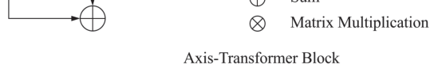
    <figcaption class="paper-figcaption"><strong>Hình 10: Minh họa về Khối Axis-Transformer đề xuất.</strong></figcaption>
</figure>

<p><strong>Hình 10.</strong> Minh họa về Khối Axis-Transformer đề xuất.</p>

<figure class="paper-figure full-width">
    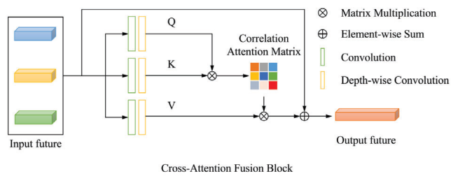
    <figcaption class="paper-figcaption"><strong>Hình 11: Minh họa về Khối Dung hợp Chú ý Chéo đề xuất.</strong></figcaption>
</figure>

<p><strong>Hình 11.</strong> Minh họa về Khối Dung hợp Chú ý Chéo (Cross-Attention Fusion Block) đề xuất.</p>

<p>Để tiết kiệm tài nguyên tính toán, các hình ảnh độ phân giải cao cần được chia nhỏ thành các khối (chunks); tuy nhiên, kích thước của các mẩu ảnh có ảnh hưởng rất lớn đến kết quả. Các thử nghiệm đã chỉ ra rằng kết quả tốt nhất sẽ đạt được bằng cách phân đoạn hình ảnh gốc có kích thước $2 0 0 0 \times 2 9 9 6$ thành nhiều mẩu kích thước $5 0 0 \times 7 4 8 ,$, và bằng cách phân đoạn hình ảnh gốc có kích thước $4 0 0 0 \times 6 0 0 0$ thành các mẩu kích thước 800 $\times$ 1200. $\mathrm { ~ W e }$ cắt ngẫu nhiên $1 2 8 \times 1 2 8$ mẩu nhỏ hơn từ các hình ảnh đã xử lý trong quá trình huấn luyện mạng. Tuân theo các kỹ thuật tăng cường dữ liệu được vạch ra trong phương pháp luận LLformer [69], chúng tôi áp dụng các phép lật ngang và lật dọc ngẫu nhiên cho các mẩu ảnh này.</p>

<hr class="paper-divider">

<h4 class="paper-passage-subheading-4">4.10. Đội X-LIME</h4>

<p><strong>Mô tả phương pháp (Description):</strong> Phương pháp của chúng tôi bao gồm hai module: mạng ước lượng đường cong để thích ứng độ sáng và mạng khử nhiễu. Cụ thể, chúng tôi áp dụng Zero-DCE [34] làm mạng thích ứng độ sáng và NAFNet [19] làm mạng khử nhiễu. Để đạt được hiệu suất thích ứng độ sáng tốt hơn, chúng tôi điều chỉnh hàm mất mát liên quan. Cụ thể, chúng tôi thêm hàm mất mát MSELoss vào mất mát ban đầu của Zero-DCE [35] và huấn luyện trong 10 epoch trên bộ dữ liệu được cung cấp. Trong giai đoạn huấn luyện, chúng tôi sử dụng trọng số tiền huấn luyện của Zero-DCE được cung cấp trên kho Github chính thức và tinh chỉnh trên bộ dữ liệu được cung cấp cho giai đoạn thứ nhất. Đối với giai đoạn thứ hai, chúng tôi sử dụng NAFNet [19] được tiền huấn luyện trên bộ dữ liệu SIDD và tinh chỉnh trên đầu ra của module độ sáng. Trong giai đoạn kiểm thử, trước tiên chúng tôi sử dụng module thích ứng độ sáng để điều chỉnh độ sáng, từ đó làm tăng độ tương phản trong ảnh. Sau đó, chúng tôi đưa đầu ra của module độ sáng vào module khử nhiễu để giảm thiểu nhiễu hơn nữa.</p>

<p><strong>Chi tiết triển khai (Implementation):</strong> Phương pháp đề xuất của chúng tôi được triển khai bằng Python trên nền tảng PyTorch. Các mô hình được sử dụng trong hai giai đoạn đều được tối ưu hóa bằng Adam. Ở giai đoạn đầu, tốc độ học được đặt là 1e-4 và ở giai đoạn thứ hai, tốc độ học lần lượt được đặt là 5e-5. Trong giai đoạn đầu, chúng tôi áp dụng GPU RTX 4090 trong khi GPU A100 80GB được sử dụng trong giai đoạn thứ hai. Tốc độ hội tụ của giai đoạn đầu khá nhanh, vì vậy chúng tôi chỉ huấn luyện 10 epoch trên tập huấn luyện với toàn bộ ảnh làm đầu vào, chỉ mất 30 phút huấn luyện. Đối với giai đoạn thứ hai, chúng tôi huấn luyện NAFNet [19] với chiến lược mở rộng mẩu ảnh tịnh tiến. 30.000 bước lặp đầu tiên được huấn luyện với các mẩu 512×512, sau đó chúng tôi mở rộng mẩu ảnh huấn luyện lên $1 0 2 4 \times 1 0 2 4$ cho $2 5 0 0 0$ bước lặp. Cuối cùng, chúng tôi sử dụng các mẩu 1920×1920 trong 10.000 bước lặp. Trong quá trình kiểm thử, chúng tôi sử dụng TLC [21] để nâng cao hơn nữa hiệu suất của phương pháp dựa trên mẩu ảnh. Kích thước cơ sở của TLC được đặt thành (1920, 2980).</p>

<hr class="paper-divider">

<h4 class="paper-passage-subheading-4">4.11. Đội Image Lab</h4>

<figure class="paper-figure full-width">
    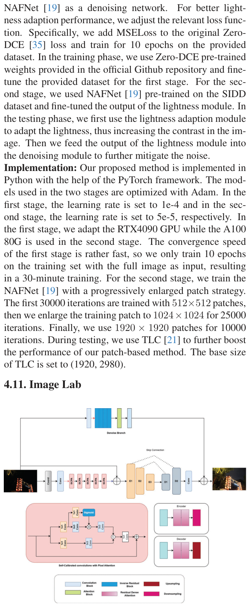
    <figcaption class="paper-figcaption"><strong>Hình 12: Sơ đồ kiến trúc mô hình Demosaicing của đội Image Lab.</strong></figcaption>
</figure>

<p><strong>Hình 12.</strong> Sơ đồ kiến trúc mô hình Demosaicing của đội Image Lab.</p>

<p><strong>Mô tả phương pháp (Description):</strong> Chúng tôi đề xuất một kiến trúc khử nhiễu và tăng cường ảnh mới, tận dụng sức mạnh của các lớp Tích chập Tọa độ (Coordinate Convolution - CoordConv) [46] và các khối Tích chập Tự hiệu chỉnh với cơ chế chú ý pixel (Self-Calibrated Convolution with pixel attention - SCPA) [61, 85], như thể hiện trong Hình 12. Kiến trúc này được thiết kế để triệt tiêu nhiễu trong khi vẫn bảo toàn hiệu quả các chi tiết hình ảnh quan trọng.</p>

<p>Hình ảnh đầu vào trước tiên được đưa qua một lớp CoordConv để thêm các kênh chứa tọa độ mã hóa cứng, làm phong phú thêm biểu diễn với thông tin không gian. Biểu diễn tăng cường này sau đó được lấy mẫu xuống và đưa vào năm lớp SCPA liên tiếp với Khối Chú ý Pixel. Các lớp SCPA nâng cao khả năng của mô hình trong việc nắm bắt các mẫu và đặc trưng không gian phức tạp. Đầu ra từ các lớp SCPA được lấy mẫu lên và cộng ngược lại vào hình ảnh đầu vào. Biểu diễn kết hợp này được đưa qua kiến trúc U-Net sửa đổi với các khối Chú ý Kênh Dày đặc Phần dư (Residual Dense Channel Attention - RDCA) [60]. Kiến trúc U-Net bao gồm ba khối bộ mã hóa và hai khối bộ giải mã. Mỗi khối bộ mã hóa chứa hai khối RDCA theo sau là thao tác lấy mẫu xuống, trong khi mỗi khối bộ giải mã chứa hai khối RDCA theo sau là thao tác lấy mẫu lên. Thiết kế này tạo điều kiện thuận lợi cho việc trích xuất và tinh chỉnh các đặc trưng ở nhiều tỉ lệ. Đồng thời, hình ảnh đầu vào được đưa vào một khối khử nhiễu tinh vi [22] để tạo ra một hình ảnh ba kênh đã khử nhiễu. Khối khử nhiễu bao gồm bốn lớp tích chập ngược theo sau bởi cơ chế chú ý. Cơ chế này triệt tiêu hiệu quả nhiễu trong khi vẫn bảo toàn các chi tiết ảnh quan trọng, nâng cao chất lượng tổng thể của ảnh đã khử nhiễu. Đầu ra của RDCA-UNet và khối khử nhiễu được cộng với hình ảnh đầu vào, tạo ra hình ảnh tăng cường cuối cùng kết hợp các đặc trưng đã khử nhiễu với các đặc trưng được tinh chỉnh từ RDCA-UNet.</p>

<p><strong>Chi tiết triển khai (Implementation):</strong> Mạng đề xuất được huấn luyện bằng GPU NVIDIA Tesla P100 với RAM 16GB trên nền tảng TensorFlow Keras. Các mẩu ảnh 400×400×3 được trích xuất ngẫu nhiên từ các hình ảnh. Tập dữ liệu huấn luyện bao gồm 4281 mẩu ảnh và 755 mẩu ảnh được sử dụng để xác thực. Các kỹ thuật tăng cường dữ liệu đã được áp dụng trong quá trình huấn luyện. Mô hình được tối ưu hóa bằng bộ tối ưu Adam với lịch trình tốc độ học giảm từ 0,001 xuống 0,00001 trong 250 epoch. Mô hình bao gồm 0,437556 triệu tham số. Mục tiêu huấn luyện bao gồm sự kết hợp của mất mát $\mathcal { L } _ { 1 } , \, \mathcal { L } _ { S S I M } ,$ và $\mathcal { L } _ { G r a d }$, $i . e .$, $\mathcal { L } = 0 . 1 * \mathcal { L } _ { S S I M } + \mathcal { L } _ { 1 } + \mathcal { L } _ { G r a d } . \qquad \quad ( 1 5 )$.</p>

<hr class="paper-divider">

<h4 class="paper-passage-subheading-4">4.12. Đội dgzzqteam</h4>

<p><strong>Mô tả phương pháp (Description):</strong> Tác giả tuyên bố giải pháp dựa trên khung làm việc OGF đã được công bố, tuy nhiên không cung cấp trích dẫn cụ thể. Các tác giả đã thay đổi hàm mất mát và tinh chỉnh mô hình để đạt hiệu suất tốt hơn trong cuộc thi.</p>

<p><strong>Chi tiết triển khai (Implementation):</strong> Các tác giả triển khai OGF bằng PyTorch. Mô hình được huấn luyện bằng bộ tối ưu hóa Adam ($\beta_1$ $= 0 . 9$ và $\beta _ { 2 } = 0 . 9 9 9 )$) trong $2 . 5 ~ \times ~ 1 0 5$ bước lặp. Tốc độ học ban đầu được đặt là 2e-4 và sau đó giảm đều đặn về $1 e - 6$ bằng sơ đồ cosine annealing trong quá trình huấn luyện ${ }$. Các mẩu ảnh kích thước $1 2 8 \, \times \, 1 2 8$ được cắt ngẫu nhiên từ các cặp ảnh thiếu sáng/đủ sáng làm mẫu huấn luyện. Kích thước batch là 8. Mục tiêu huấn luyện là giảm thiểu sai số tuyệt đối trung bình (MAE) giữa ảnh được tăng sáng và ảnh tăng cường. Tập huấn luyện và tập xác thực được chia theo tỉ lệ 209:21.</p>

<hr class="paper-divider">

<h4 class="paper-passage-subheading-4">4.13. Đội Cidaut AI (InstructIR [23])</h4>

<figure class="paper-figure full-width">
    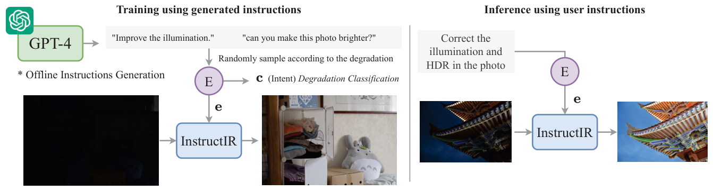
    <figcaption class="paper-figcaption"><strong>Hình 13: InstructIR [23] nhận đầu vào là một hình ảnh và chỉ dẫn bằng văn bản do con người viết về cách cải thiện hình ảnh đó. Mô hình đa tác vụ thực hiện tăng cường ảnh thiếu sáng theo dẫn hướng văn bản.</strong></figcaption>
</figure>

<p><strong>Hình 13.</strong> InstructIR [23] nhận đầu vào là một hình ảnh và chỉ dẫn bằng văn bản do con người viết về cách cải thiện hình ảnh đó. Mô hình đa tác vụ thực hiện tăng cường ảnh thiếu sáng theo dẫn hướng văn bản.</p>

<p><strong>Mô tả phương pháp (Description):</strong> Chúng tôi sử dụng InstructIR [23] cho bài toán tăng cường ảnh thiếu sáng trong thế giới thực. InstructIR [23] nhận đầu vào là một hình ảnh và chỉ dẫn bằng văn bản do con người viết về cách cải thiện hình ảnh đó. Mô hình nơ-ron này thực hiện phục hồi hình ảnh tất-cả-trong-một (all-in-one). InstructIR [23] đạt được các kết quả hiện đại nhất (SOTA) trên nhiều tác vụ phục hồi bao gồm khử nhiễu, khử mưa, khử mờ, khử sương mù và tăng cường ảnh thiếu sáng. Cách tiếp cận được minh họa trong Hình 13.</p>

<p>Mô hình đạt $2 3 . 0 7$ dB PSNR, 0.8075 SSIM và $0 . 1 5 6$ LPIPS trong Thử thách Tăng cường Ảnh Thiếu sáng NTIRE 2024, đại diện cho một giải pháp đường cơ sở tiêu biểu cho việc phục hồi đa tác vụ sử dụng hướng dẫn văn bản.</p>

<p><strong>Chi tiết triển khai (Implementation):</strong> Mô hình có thể xử lý các hình ảnh độ phân giải đầy đủ trên một GPU thông thường mà không cần chiến lược chia mẩu (tiling). Chúng tôi tinh chỉnh mô hình bằng bộ dữ liệu của thử thách bên cạnh LOL [71]. Chúng tôi sử dụng chỉ dẫn "correct the low illumination in this image" cho tất cả các hình ảnh kiểm thử.</p>

<p><strong>Các phương pháp đường cơ sở hiệu quả:</strong> Nhóm cũng nghiên cứu các phương pháp hiệu quả có thể xử lý hình ảnh độ phân giải đầy đủ theo thời gian thực ở tốc độ vài FPS: RetinexNet [71], SCI [55] và Zero-DCE $[ 3 4 ] .$. Tất cả các phương pháp này đều có thể xử lý $4 0 0 0 \times 6 0 0 0$ trực tiếp trên các GPU thông thường như NVIDIA 3090Ti. Tuy nhiên, các phương pháp này không cải thiện hơn so với InstructIR [23].</p>

<p><strong>Bộ dữ liệu:</strong> Để nâng cao kết quả và khái quát hóa tốt hơn, chúng tôi đã đưa thêm các tập dữ liệu huấn luyện khác: LOL-v2 (thực tế và tổng hợp) cùng bộ dữ liệu MIT5K. Chúng tôi cũng áp dụng các phép tăng cường cắt ngẫu nhiên, lật và xoay ảnh.</p>

<hr class="paper-divider">

<h4 class="paper-passage-subheading-4">4.14. Đội OptDev</h4>

<figure class="paper-figure full-width">
    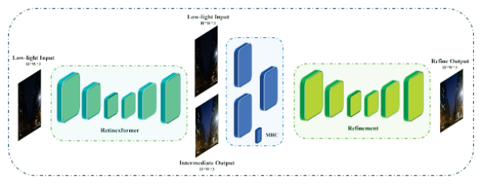
    <figcaption class="paper-figcaption"><strong>Hình 14: Khung làm việc tổng thể DFormer của đội OptDev.</strong></figcaption>
</figure>

<p><strong>Hình 14.</strong> Khung làm việc tổng thể DFormer của đội OptDev.</p>

<p><strong>Mô tả phương pháp (Description):</strong> Các tác giả đã phát triển một mạng học sâu dựa trên Transformer mới mang tên DoubleFormer (DFormer) để học ánh xạ từ thiếu sáng sang đủ sáng, như thể hiện trong Hình 14. Kiến trúc bao gồm hai khối bộ mã hóa - giải mã riêng biệt (Encoder-Decoder Blocks - EDB) và một khối tương quan đa đầu (Multi-Head Correlation Block - MHCB) để tạo ra những hình ảnh hợp lý. Các tác giả tận dụng ánh xạ chiếu sáng từ lý thuyết Retinex nổi tiếng để tăng tốc hiệu suất tái tạo. Ngoài ra, các tác giả đã kết hợp phương pháp tăng cường độ sáng yếu tiên tiến nhất, Retinexformer, vào nửa đầu của kiến trúc tổng thể. Đáng tiếc, Retinexformer không thể tạo ra những hình ảnh hợp lý trong nhiều khung cảnh khó, bộc lộ nhiễu rõ rệt và mất độ bão hòa màu sắc ở các vùng phức tạp. Để giải quyết hạn chế này, các tác giả đề xuất sử dụng một khối MHCB, theo sau là một khối EDB khác trong kiến trúc. Chúng tôi tận dụng các đặc trưng tương quan với đầu ra trung gian trong EDB thứ hai để thu nhận kết quả khử nhiễu tốt hơn. Thêm vào đó, các tác giả đã sử dụng hàm mất mát cảm nhận, bao gồm dẫn hướng độ chói - độ màu, để giải quyết sự không nhất quán về màu sắc.</p>

<p><strong>Chi tiết triển khai (Implementation):</strong> Giải pháp đề xuất được triển khai trên nền tảng PyTorch. Các mạng được tối ưu hóa bằng bộ tối ưu Adam, trong đó các siêu tham số được điều chỉnh thành $\beta _ { 1 } = 0 . 9 , \, \beta _ { 2 } = 0 . 9 9 ,$ và tốc độ học $=$ 5e-4. Chúng tôi đã huấn luyện mô hình với các mẩu ảnh không chồng lấn với kích thước batch cố định là 12, mất khoảng 36 giờ để hoàn thành. Chúng tôi đã tiến hành các thử nghiệm trên máy GPU NVIDIA A6000.</p>

<hr class="paper-divider">

<h4 class="paper-passage-subheading-4">4.15. Đội ataza</h4>

<figure class="paper-figure full-width">
    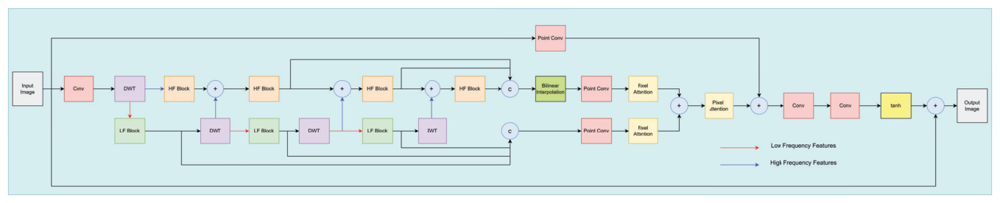
    <figcaption class="paper-figcaption"><strong>Hình 15: Khung làm việc tổng thể Mạng Dẫn hướng Tần số của đội ataza.</strong></figcaption>
</figure>

<p><strong>Hình 15.</strong> Khung làm việc tổng thể Mạng Dẫn hướng Tần số (Frequency Guided Network) của đội ataza.</p>

<p><strong>Mô tả phương pháp (Description):</strong> Đội ataza đề xuất một mạng nơ-ron hiệu quả với ít tham số, như minh họa trong Hình 15. Dựa trên quan sát rằng sai số trong ảnh thiếu sáng chủ yếu tồn tại ở vùng tần số thấp, họ phân rã hình ảnh thành các dải con tần số cao và tần số thấp bằng cách sử dụng Biến đổi Wavelet Rời rạc (DWT) - kỹ thuật đã được chứng minh hiệu quả trong xử lý ảnh [62]. Cụ thể, họ chọn wavelet HAAR [56] do tính hiệu quả tính toán và khả năng phát hiện cạnh biên xuất sắc [58]. Mô hình bao gồm hai nhánh: một nhánh cho các đặc trưng tần số cao và nhánh còn lại cho các đặc trưng tần số thấp. Cách tiếp cận này cho phép mô hình tập trung vào việc khôi phục thông tin tần số thấp trong khi vẫn bảo toàn thông tin tần số cao vốn có thể bị mất ở các tầng sâu hơn.</p>

<p><strong>Chi tiết phương pháp đội ataza (tiếp theo):</strong> Trong nhánh tần số thấp, ba Khối Tần số Thấp (Low-Frequency Blocks - LF Blocks) xử lý và trích xuất các đặc trưng tần số thấp. Sau đó, sau mỗi Khối LF, một khối DWT phân chia lại đầu ra, chuyển các đặc trưng tần số cao sang nhánh tần số cao. Trong nhánh tần số cao, các đặc trưng tần số cao hiện tại được dung hợp với các đặc trưng nhận được qua khối DWT từ nhánh tần số thấp, trước khi trải qua quá trình xử lý bởi Khối Tần số Cao (High-Frequency Block - HF Block). Tổng cộng có bốn Khối HF được sử dụng trong quy trình này. Cách tiếp cận này cho phép mô hình bảo toàn các đặc trưng tần số cao trong khi tập trung vào việc khôi phục thông tin tần số thấp. Do các dải tần số thấp của hình ảnh chứa nhiều lỗi hơn, cách tiếp cận của chúng tôi là làm cho Khối LF sâu hơn và phức tạp hơn so với Khối HF.</p>

<p>Đầu ra của ba Khối LF được nối kết (concatenate) lại, đồng thời đầu ra của ba Khối HF cuối cùng cũng được nối kết. Cả hai tập đặc trưng sau đó được dung hợp và tạo ra hình ảnh cuối cùng. Mô hình được huấn luyện bằng hai hàm mất mát: hàm mất mát $L _ { 1 }$ và hàm mất mát miền tần số $L o s s _ { F F T }$ bắt nguồn từ Biến đổi Fourier Nhanh (FFT). $L o s s _ { F F T }$ được xác định bởi Phương trình (16), và hàm mất mát tổng thể được xác định bởi Phương trình (17). Việc kết hợp hàm mất mát dựa trên tần số giúp tăng cường độ ổn định của mô hình do mạng đang trích xuất các đặc trưng trong miền tần số, $i . e .$:</p>

<p>$L o s s _ { F F T } = \frac { 1 } { n } \sum _ { i = 1 } ^ { n } \| F F T ( I _ { g } ) \| - | F F T ( I _ { i } ) | , \quad ( 1 6 )$</p>

<p>$L o s s = L o s s _ { F F T } + 2 0 * L o s s _ { L _ { 1 } } .$</p>

<p>$\mathrm { ~ ( 1 7 ) }$</p>

<p>Cách tiếp cận này cho phép giải pháp chỉ sở hữu 387.414 tham số trong khi vẫn đạt được hiệu suất đầy cạnh tranh. Nó có thể xử lý một hình ảnh 1024×1024 chỉ trong 0,14 giây và hình ảnh 512×512 trong 0,04 giây. Tốc độ nhanh chóng kết hợp với độ phức tạp thấp giúp mô hình rất phù hợp cho nhiều ứng dụng thực tế, nơi mà sự cân bằng giữa hiệu suất và tốc độ là tối quan trọng.</p>

<p><strong>Chi tiết triển khai (Implementation):</strong> Giải pháp được phát triển bằng Python trên nền tảng PyTorch, được huấn luyện trên hệ thống máy tính gồm CPU Intel i7-8700 $\mathcal{Q}$ 3,20GHz, 16GB RAM và card đồ họa NVIDIA GeForce RTX 3070. Dữ liệu do cuộc thi cung cấp được sử dụng độc quyền để huấn luyện mô hình. Tập dữ liệu huấn luyện bao gồm 230 cặp ảnh, mỗi ảnh có kích thước 2992×2000 pixel. Trong số đó, 220 ảnh được phân bổ cho việc huấn luyện, 10 ảnh còn lại được dành riêng cho việc xác thực. Để tăng cường dữ liệu, các mẩu ảnh không chồng lấn có kích thước 256×256 pixel được trích xuất từ mỗi hình ảnh và dùng để huấn luyện mô hình. Quá trình huấn luyện kéo dài 70 epoch, áp dụng chiến lược Cosine Annealing với chu kỳ 10 epoch và tốc độ học ban đầu được đặt ở mức 0,0005. Để huấn luyện mô hình, bộ tối ưu Adam kết hợp với tính năng độ chính xác hỗn hợp của PyTorch đã được sử dụng và kích thước batch được đặt thành 8.</p>

<hr class="paper-divider">

<h4 class="paper-passage-subheading-4">4.16. Đội KLETech-CEVI.LowlightHypnotise</h4>

<figure class="paper-figure full-width">
    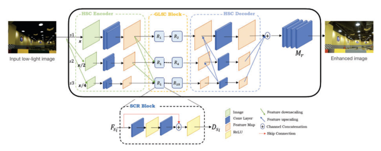
    <figcaption class="paper-figcaption"><strong>Hình 16: Tổng quan về Mạng Dung hợp Đặc trưng Đa tỉ lệ (MFNN) đề xuất. Bộ mã hóa trích xuất các đặc trưng ở ba tỉ lệ riêng biệt với thông tin được truyền qua các cấp bậc phân tầng (hộp nét đứt màu xanh lá cây). Thông tin ngữ cảnh và không gian toàn cục - cục bộ hạt mịn được học thông qua Khối GLSC (hộp nét đứt màu cam). Tại bộ giải mã, quá trình trao đổi thông tin diễn ra theo các cấp bậc phân tầng đảo ngược (hộp nét đứt màu xanh dương).</strong></figcaption>
</figure>

<p><strong>Hình 16.</strong> Tổng quan về Mạng Dung hợp Đặc trưng Đa tỉ lệ (MFNN) đề xuất. Bộ mã hóa trích xuất các đặc trưng ở ba tỉ lệ riêng biệt với thông tin được truyền qua các cấp bậc phân tầng. Thông tin ngữ cảnh và không gian toàn cục - cục bộ hạt mịn được học thông qua Khối GLSC. Tại bộ giải mã, quá trình trao đổi thông tin diễn ra theo các cấp bậc phân tầng đảo ngược.</p>

<p><strong>Mô tả phương pháp (Description):</strong> Khung làm việc MFNN đề xuất bao gồm ba module chính: bộ mã hóa đặc trưng ngữ cảnh - không gian phân cấp (HSC), khối ngữ cảnh - không gian toàn cục - cục bộ (GLSC), và bộ giải mã ngữ cảnh - không gian phân cấp (HSC), như được thể hiện trong Hình 16. Thông thường, các mạng tăng cường ảnh thiếu sáng sử dụng việc co giãn đặc trưng để thay đổi kích thước của các trường tiếp nhận (receptive fields). Việc thay đổi trường tiếp nhận tạo điều kiện thuận lợi cho việc học các biến sai từ cục bộ đến toàn cục trong các đặc trưng. Với động lực này, chúng tôi học thông tin ngữ cảnh từ các đặc trưng đa tỉ lệ trong khi vẫn bảo toàn các chi tiết không gian độ phân giải cao. Chúng tôi đạt được điều này thông qua một mạng mã hóa - giải mã kiểu phân cấp với các khối phần dư làm mạng đường trục để học tập. Cho một hình ảnh đầu vào $x$, bộ mã hóa phân cấp đa tỉ lệ đề xuất trích xuất các đặc trưng nông ở ba tỉ lệ riêng biệt theo công thức:</p>

<div class="paper-equation"><div class="paper-equation-math">$$F_{s_i} = \mathcal{M}_{E_s}(x), \quad (18)$$</div></div>

<p>trong đó $\ F _ { s i } \ $ là các đặc trưng $\mathrm { s h a l l o w }$ $\mathrm { ~ e x t r a c t e d ~ a t ~ }$ ở tỉ lệ $\ i ^ { t h }$ từ không gian mẫu của ảnh đầu vào $x$, và $M _ { E s }$ đại diện cho bộ mã hóa phân cấp ở tỉ lệ $s$. Để học các biểu diễn từ toàn cục đến cục bộ từ các đặc trưng mức nông này, chúng tôi đề xuất khối Ngữ cảnh - Không gian Toàn cục - Cục bộ (GLSC), với các khối phần dư làm mạng xương sống. Các đặc trưng sâu học được biểu diễn dưới dạng:</p>

<p>$D _ { s i } = \mathrm { G L S C } _ { s i } ( F _ { s i } ) , \qquad \qquad ( 1 9 )$</p>

<p>trong đó $D _ { s i }$ là đặc trưng sâu ở tỉ lệ $i ^ { t h }$, $F _ { s i }$ là các đặc trưng nông được trích xuất ở tỉ lệ $i ^ { t h }$ và $G L S C _ { s i }$ đại diện cho các khối phần dư ở các tỉ lệ tương ứng. Chúng tôi giải mã các đặc trưng sâu thu được ở nhiều tỉ lệ khác nhau bằng bộ giải mã phân cấp đề xuất theo công thức:</p>

<p>$d _ { s i } = M _ { d s i } ( D _ { s i } ) , \qquad \qquad ( 2 0 )$</p>

<p>trong đó $d _ { s i }$ là đặc trưng đã giải mã ở tỉ lệ $i ^ { t h }$, và $M _ { d s i }$ đại diện cho bộ giải mã phân cấp. Các đặc trưng đã giải mã và các đặc trưng được nâng tỉ lệ tại mỗi thang đo được chuyển đến các tầng tái tạo $M _ { r }$ để thu được hình ảnh tăng cường $\hat { y } .$. Các đặc trưng nâng tỉ lệ từ mỗi thang đo được xếp chồng và biểu diễn thành:</p>

<div class="paper-equation"><div class="paper-equation-math">$$P = d_{s_1} + d_{s_2} + d_{s_3}, \quad (21)$$</div></div>

<p>trong đó $d _ { s 1 } , \ d _ { s 2 } ,$ và $d _ { s 3 }$ là các đặc trưng được giải mã ở ba tỉ lệ riêng biệt, $P$ đại diện cho tập hợp các đặc trưng cuối cùng được chuyển đến các tầng tái tạo để thu được ảnh tăng cường $\hat{y}$:</p>

<div class="paper-equation"><div class="paper-equation-math">$$\hat{y} = \mathcal{M}(P), \quad (22)$$</div></div>

<p>trong đó $\hat { y }$ là ảnh tăng cường thu được từ các tầng tái tạo $\mathcal{M}$. Chúng tôi tối ưu hóa quá trình học của MFNN bằng hàm mất mát đề xuất $\mathcal { L } _ { M F N N }$ theo công thức:</p>

<p>$\mathcal { L } _ { M F N N } = \alpha * L _ { 1 } + \beta * \mathcal { L } _ { V G G } + \gamma * \mathcal { L } _ { M S S S I M } , ( 2 3 )$</p>

<p>trong đó $\alpha , \, \beta ,$ và $\gamma$ là các trọng số. Chúng tôi thiết lập theo thực nghiệm các trọng số thành $\alpha = 0 . 5 , \beta = 0 . 7 ,$, và $\gamma = 0 . 5 . ~ { \cal L } _ { M F N N }$ là sự kết hợp có trọng số của ba hàm mất mát riêng biệt lấy cảm hứng từ [25–27, 36]: mất mát $\, L _ { 1 }$ để giảm thiểu sai số ở cấp độ pixel, mất mát cảm nhận [43] để khôi phục hiệu quả thông tin ngữ cảnh giữa ảnh ground-truth và ảnh đầu ra, cùng mất mát độ không tương đồng cấu trúc đa tỉ lệ để khôi phục các chi tiết cấu trúc. Mục tiêu ở đây là giảm thiểu mất mát kết hợp có trọng số $\mathcal { L } _ { M F N N }$:</p>

<p>trong đó $\theta$ biểu thị các tham số học được của khung làm việc đề xuất, $N$ là tổng số cặp huấn luyện, $x$ và $y$ lần lượt là ảnh đầu vào và ảnh đầu ra, và $M F N N ( \cdot )$ là khung làm việc đề xuất để tăng cường ảnh thiếu sáng.</p>

<p><strong>Chi tiết triển khai (Implementation):</strong> Chúng tôi huấn luyện mạng MFNN đề xuất bằng Python (v3.8) kết hợp với nền tảng PyTorch và thực hiện các thử nghiệm trên 2 GPU NVIDIA RTX 3090 với CPU AMD Ryzen ThreadRipper 3960X. Chúng tôi sử dụng 16 khối phần dư được chia thành ba tầng phân cấp và tạo ra 256 bản đồ đặc trưng cho mỗi tỉ lệ. Chúng tôi huấn luyện MFNN trên bộ dữ liệu được cung cấp trong cuộc thi cùng với bộ dữ liệu LoL [71] với các mẩu ảnh kích thước 600×400. Trong quá trình huấn luyện, chúng tôi sử dụng bộ tối ưu hóa Adam với $\beta _ { 1 } \, = \, 0 . 9 , \, \beta _ { 2 } \, = \, 0 . 9 9 9 ,$, $\epsilon ~ = ~ 1 0 e ^ { - 8 } , ~ \mathrm { a n d }$, đặt tốc độ học $l r ~ = ~ 0 . 0 0 0 2 . ~ \mathrm { ~ W e }$, và huấn luyện mạng MFNN đề xuất trong 1000 epoch. Chúng tôi tối ưu hóa quá trình học với ${ \cal L } _ { M F N N } . ~$ đề xuất. Trong quá trình kiểm thử, chúng tôi sử dụng các hình ảnh độ phân giải đầy đủ (2992 $\times$ 2000) trên một GPU RTX 3090 đơn lẻ. Thời gian kiểm thử trung bình cho một hình ảnh đơn lẻ ở độ phân giải đầy đủ là 0,53 giây trên GPU RTX 3090.</p>

<hr class="paper-divider">

<h4 class="paper-passage-subheading-4">4.17. Đội 221B</h4>

<figure class="paper-figure full-width">
    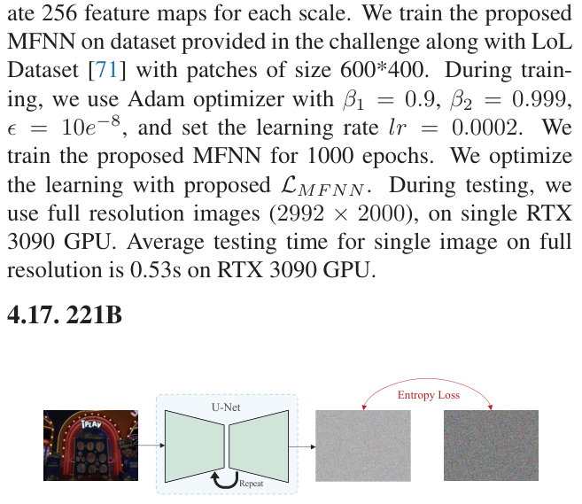
    <figcaption class="paper-figcaption"><strong>Hình 17: Tổng quan về quá trình huấn luyện mô hình khuếch tán với hàm mất mát entropy không gian khả vi do đội 221B đề xuất.</strong></figcaption>
</figure>

<p><strong>Hình 17.</strong> Tổng quan về quá trình huấn luyện mô hình khuếch tán với hàm mất mát entropy không gian khả vi do đội 221B đề xuất.</p>

<p><em>Ban tổ chức muốn nhấn mạnh rằng phương pháp này đã đạt vị trí quán quân trên bảng xếp hạng LPIPS với điểm số 0.1084, vượt trội hơn cả công trình đứng đầu chung cuộc (vốn đạt điểm số 0.1221).</em></p>

<p><strong>Mô tả phương pháp (Description):</strong> Hầu hết các công trình dựa trên mô hình khuếch tán hiện có [37] chỉ đơn thuần sử dụng hàm mất mát $\ell _ { 1 } / \ell _ { 2 }$ để huấn luyện mạng dự đoán nhiễu theo cách tất định, vốn luôn tạo ra các nhiễu trung gian (hoặc trạng thái trung gian) trơn nhẵn trong quá trình đảo ngược. Mặc dù chất lượng tri giác có thể được cải thiện với các bước khuếch tán dài hơn, nhưng việc khám phá một hàm mất mát dựa trên cảm nhận để hỗ trợ quá trình huấn luyện là hoàn toàn hợp lý. Trong công trình này, nhóm tác giả đề xuất học mạng nơ-ron từ một góc nhìn thống kê thuần túy, tức là trực tiếp học các phân phối thay vì khoảng cách từng pixel. Ý tưởng cốt lõi là entropy không gian khả vi (differentiable spatial entropy) được rút ra từ ước lượng mật độ nhân (Kernel Density Estimation - KDE) và đo lường thông tin không gian của một hình ảnh. Một cách hình thức, tuân theo [3, 63], KDE hai chiều được định nghĩa là xác suất của một giá trị cường độ cụ thể $i$ và vùng lân cận của nó $j$ như sau:</p>

<p>$\hat { f } _ { h } ( i , j ) = \frac { 2 } { N h } \sum _ { i = x } \frac { 1 } { 2 } \{ \frac { | x - i | } { h } < 1 \} \cdot \frac { 1 } { 2 } \{ \frac { | \tilde { x } - j | } { h } < 1 \}$ $= \frac { 2 } { N \hbar } \sum _ { x \in X } K _ { 1 } ( \frac { x - i } { h } ) \cdot K _ { 2 } ( \frac { \bar { z } - j } { h } ) ,$ $( 2 5 )$</p>

<p>trong đó $\mathcal { K } _ { 1 }$ và $\mathcal { K } _ { 2 }$ là các hàm nhân tùy ý (chúng cũng có thể giống nhau). Để tận dụng KDE không gian khả vi trong quá trình tạo ảnh, công trình này xem xét việc đưa vào entropy tương đối (còn gọi là độ phân kỳ Kullback-Leibler hay KL-divergence) để đo khoảng cách phân phối giữa ảnh dự đoán và ảnh ground truth. Với $\mathrm { \ L e t } ~ P$ và $Q$ biểu diễn các phân phối xác suất của ground truth và ảnh dự đoán được tính toán từ Phương trình (25), entropy tương đối không gian được định nghĩa như sau:</p>

<p>$H _ { s } ( P , Q ) = D _ { K L } ( P | | Q ) = - \sum _ { i = 0 } ^ { L } \sum _ { i , j } p _ { i , j } \log \frac { q _ { i , j } } { p _ { i , j } } , \ ( 2 6 )$</p>

<p>Mô hình khuếch tán của họ được xây dựng trên phương trình vi phân ngẫu nhiên phục hồi giá trị trung bình (mean-reverting SDE) [53, 54]. Bằng cách tối ưu hóa khoảng cách phân phối dựa trên entropy giữa các dự đoán và trạng thái ground truth, kết quả của họ đạt chất lượng thị giác tốt hơn so với việc chỉ sử dụng hàm mất mát $\ell _ { 1 } / \ell _ { 2 }$. Hình 17 minh họa tổng quan về quy trình huấn luyện mô hình khuếch tán đề xuất.</p>

<p><strong>Chi tiết triển khai (Implementation):</strong> Đội thi này sử dụng bộ dữ liệu thiếu sáng được cung cấp nhưng chia thêm 10 cặp ảnh để xác thực. Khung làm việc Refusion được sử dụng làm đường cơ sở và đội thi đã trực tiếp thay đổi hàm mất mát của nó thành entropy không gian khả vi đề xuất. Trong quá trình huấn luyện, tất cả hình ảnh được cắt với kích thước mẩu ảnh $1 2 8 \times$ 128, và tổng số bước lặp huấn luyện được đặt là 500.000 với kích thước batch là 16. Tuân theo Refusion [54], công trình này sử dụng bộ tối ưu hóa AdamW [51] và bộ điều chỉnh 'CosineDecay' với tốc độ học ban đầu 0,0001. Số bước khuếch tán được cố định là 100 trong cả huấn luyện và kiểm thử.</p>

<hr class="paper-divider">

<h4 class="paper-passage-subheading-4">4.18. Đội KLETech-CEVI_Dark Knights</h4>

<figure class="paper-figure full-width">
    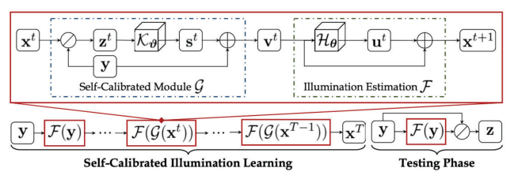
    <figcaption class="paper-figcaption"><strong>Hình 18: Khung làm việc của Module Chiếu sáng Tự hiệu chuẩn (Trích xuất lại từ [55]). Chúng tôi sử dụng một biến thể của phương pháp này để tăng cường ảnh thiếu sáng với hàm mất mát tùy chỉnh.</strong></figcaption>
</figure>

<p><strong>Hình 18.</strong> Khung làm việc của Module Chiếu sáng Tự hiệu chuẩn (Trích xuất lại từ [55]). Chúng tôi sử dụng một biến thể của phương pháp này để tăng cường ảnh thiếu sáng với hàm mất mát tùy chỉnh.</p>

<p><strong>Mô tả phương pháp (Description):</strong> Theo lý thuyết Retinex, tồn tại một mối quan hệ giữa hình ảnh thiếu sáng quan sát được, ký hiệu là $y$, và hình ảnh rõ nét mong muốn $z$, được biểu diễn dưới dạng:</p>

<p>$y \, = \, z \, \otimes \, x ,$</p>

<p>trong đó $x$ biểu thị thành phần chiếu sáng. Thông thường, các nỗ lực tối ưu hóa trong việc tăng cường ảnh thiếu sáng chủ yếu tập trung vào việc tinh chỉnh thành phần chiếu sáng. Để đạt được đầu ra tăng cường, một cách tiếp cận phổ biến liên quan đến việc loại bỏ thành phần chiếu sáng ước lượng theo lý thuyết Retinex. Lấy cảm hứng từ các công trình trước đây về tối ưu hóa chiếu sáng, đặc biệt là những công trình sử dụng phương pháp tiếp cận theo từng giai đoạn, chúng tôi đề xuất một góc nhìn tịnh tiến để mô hình hóa tác vụ này. Tại đây, chúng tôi giới thiệu một ánh xạ $H _ { \theta }$ được tham số hóa bởi $\theta$ để học thành phần chiếu sáng, trong đó mỗi giai đoạn $t$ (với $t = 0 , . . . , T - 1 )$) bao gồm một đơn vị cơ bản được biểu diễn dưới dạng $u _ { t } = H _ { \theta } ( x _ { t } )$ và $x _ { t + 1 } =$ $x _ { t } + u _ { t } ,$ với $x _ { 0 } ~ = ~ y . ~$. Điều đáng chú ý là chúng tôi áp dụng cơ chế chia sẻ trọng số qua các giai đoạn, sử dụng cùng một kiến trúc $H$ và trọng số $\theta$ cho từng giai đoạn. Cụ thể, toán tử tham số hóa $H _ { \theta }$ học một cách hiệu quả biểu diễn phần dư đơn giản $u _ { t }$ giữa độ chiếu sáng và hình ảnh thiếu sáng quan sát được. Quá trình này được thúc đẩy bởi sự đồng thuận rằng độ chiếu sáng và các quan sát thiếu sáng thể hiện sự tương đồng hoặc các mối liên hệ tuyến tính ở hầu hết các vùng.</p>

<p>Chúng tôi thiết lập một module để đảm bảo sự hội tụ của các kết quả từ mỗi giai đoạn về một trạng thái nhất quán. Do đầu vào của mỗi giai đoạn bắt nguồn từ giai đoạn trước đó, và đầu vào ban đầu của giai đoạn thứ nhất được xác định trước là quan sát thiếu sáng, chúng tôi đề xuất khám phá gián tiếp hành vi hội tụ bằng cách bắc cầu đầu vào của mỗi giai đoạn (trừ giai đoạn đầu) với quan sát thiếu sáng. Để đạt được điều này, chúng tôi sử dụng một module tự hiệu chuẩn (self-calibrated module) [55] ký hiệu là $s$, được cộng vào quan sát thiếu sáng để đại diện cho sự khác biệt giữa đầu vào của mỗi giai đoạn và giai đoạn ban đầu. Cụ thể, module tự hiệu chuẩn, được biểu diễn là $s \, = \, K _ { \theta } ( z ) ,$, sử dụng toán tử tham số hóa $K _ { \theta }$ với các tham số học được $\theta$ để tạo ra $v \ = \ y \ + \ s , \ w h e r e $; $v_t$ biểu thị đầu vào được chuyển đổi cho mỗi giai đoạn $( t \, \geq \, 1 ) . \,$. Do đó, việc chuyển đổi cho đơn vị cơ bản trong giai đoạn thứ $t ^ { t h }$ $( t \; \geq \; 1 )$ có thể được biểu diễn dưới dạng $F ( x _ { t } ) \; \rightarrow \; F ( G ( x _ { t } ) ) . \;$. Module tự hiệu chuẩn này hiệu chỉnh hiệu quả đầu vào của từng giai đoạn bằng cách tích hợp các nguyên lý vật lý, từ đó gián tiếp ảnh hưởng đến đầu ra của mỗi giai đoạn.</p>

<p>Thêm vào đó, chúng tôi sử dụng NIQE (Natural Image Quality Evaluator) [59] làm một hàm mất mát. NIQE cung cấp một cách tiếp cận giá trị để cải thiện chất lượng tri giác. Bằng cách sử dụng NIQE làm thước đo để định lượng độ tự nhiên và độ trung thực cảm nhận của các hình ảnh tăng cường, quá trình huấn luyện nhằm mục đích giảm thiểu điểm NIQE của các hình ảnh được tạo ra. Chiến lược này khuyến khích mô hình tạo ra các hình ảnh đầu ra gần giống với các hình ảnh tự nhiên, chất lượng cao, nâng cao sức hấp dẫn thị giác và tính khả dụng của chúng. Bằng cách tối ưu hóa cho điểm NIQE thấp hơn, mô hình học cách ưu tiên các tăng cường làm hài lòng thị giác, cuối cùng dẫn đến các đầu ra không chỉ hấp dẫn về mặt trực quan mà còn giữ lại các đặc tính tự nhiên quan trọng. Do đó, việc tích hợp NIQE làm hàm mất mát góp phần vào sự phát triển của các kỹ thuật tăng cường ảnh thiếu sáng bám sát nhận thức và sở thích của con người. NIQE dưới dạng hàm mất mát được đưa ra như sau:</p>

<p>trong đó $N$ là số lượng mẫu, $x _ { t , i }$ đại diện cho đầu vào của giai đoạn thứ $t \mathrm { - t h }$ cho mẫu thứ $i - t h$, $F ( G ( x _ { t , i } ) )$ biểu thị đầu ra của giai đoạn thứ $t \mathrm { - t h }$ cho mẫu thứ $i - t h$ sau khi áp dụng module tự hiệu chuẩn, và NIQE là hàm tính toán điểm số NIQE cho một hình ảnh. Việc giảm thiểu hàm mất mát này trong quá trình huấn luyện sẽ khuyến khích mô hình tạo ra các hình ảnh đầu ra có điểm NIQE thấp hơn, biểu thị chất lượng tri giác và độ tự nhiên cao hơn. Điều này sẽ mang lại các hình ảnh đầu ra có chất lượng gần hơn với các hình ảnh tự nhiên, chất lượng cao.</p>

<p><strong>Chi tiết triển khai (Implementation):</strong> Chúng tôi huấn luyện phương pháp đề xuất bằng Python (v3.8) kết hợp với nền tảng PyTorch và tiến hành các thử nghiệm trên 2 GPU NVIDIA RTX 3090 với CPU AMD Ryzen ThreadRipper 3960X. Chúng tôi sử dụng 16 khối phần dư được chia thành ba tầng phân cấp và tạo ra 256 bản đồ đặc trưng cho mỗi tỉ lệ. Chúng tôi huấn luyện phương pháp đề xuất trên bộ dữ liệu được cung cấp trong cuộc thi cùng với bộ dữ liệu LoL [71] với hình ảnh có kích thước 2992×2000. Trong quá trình huấn luyện, chúng tôi sử dụng bộ tối ưu Adam với $\beta _ { 1 } \, = \, 0 . 9 , \, \beta _ { 2 } \, = \, 0 . 9 9 9 ,$, $\epsilon = 1 0 e ^ { - 8 } ,$ và đặt tốc độ học $l r = 0 . 0 0 0 2 .$. Chúng tôi huấn luyện phương pháp đề xuất trong 1000 epoch. Trong quá trình kiểm thử, chúng tôi sử dụng các hình ảnh độ phân giải đầy đủ (2992×2000) trên một GPU RTX 3090 đơn lẻ. Thời gian kiểm thử trung bình cho một hình ảnh đơn lẻ ở độ phân giải đầy đủ là 0,53 giây trên GPU RTX 3090.</p>

<hr class="paper-divider">

<h4 class="paper-passage-subheading-4">4.19. Đội BFU-LL</h4>

<figure class="paper-figure full-width">
    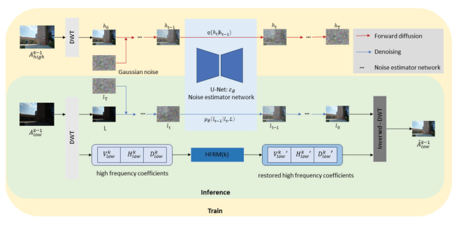
    <figcaption class="paper-figcaption"><strong>Hình 19: Kiến trúc mạng của đội BFU-LL.</strong></figcaption>
</figure>

<p><strong>Hình 19.</strong> Kiến trúc mạng của đội BFU-LL.</p>

<p><strong>Mô tả phương pháp (Description):</strong> Khác biệt với việc sử dụng các mô hình dựa trên Transformer phức tạp hơn để phục hồi hình ảnh [30, 32], đội thi này tập trung giải quyết các vấn đề thiếu sáng thông qua việc ứng dụng các phương pháp khuếch tán. Họ giới thiệu một cách tiếp cận mới để tăng cường ảnh thiếu sáng do [40] đề xuất, như được minh họa trong Hình 19. Phương pháp trước tiên chuyển đổi các hình ảnh này sang miền wavelet thông qua phép biến đổi wavelet rời rạc 2D (DWT), được lặp lại nhiều lần. Quá trình này mang lại một hệ số trung bình và các tập hệ số tần số cao. Bằng cách sử dụng wavelet Haar [29], phương pháp chia đầu vào thành bốn dải con (sub-bands), nắm bắt hiệu quả thông tin toàn cục và các chi tiết cục bộ thưa thớt. Điều này làm giảm đáng kể kích thước không gian trong khi vẫn bảo toàn thông tin hình ảnh thiết yếu. Mô hình khuếch tán dựa trên wavelet của nhóm sử dụng quá trình khuếch tán thuận trong giai đoạn huấn luyện và quá trình khử nhiễu trong cả giai đoạn huấn luyện lẫn suy luận. Hơn nữa, họ đã phát triển Module Phục hồi Tần số Cao (High-Frequency Restoration Module - HFRM) để tái tạo các chi tiết tần số cao. Sử dụng kiến trúc U-Net làm mạng ước lượng nhiễu và triển khai lịch phương sai cố định, phương pháp của họ biến đổi một cách có phương pháp đầu vào thành dữ liệu nhiễu bị biến dạng, sau đó sử dụng các chuyển tiếp khử nhiễu Gaussian để đạt được đầu ra rõ ràng và được tăng cường.</p>

<p>Dựa trên các phương pháp luận được mô tả trong các nghiên cứu trước đây [28, 76], đội thi này thiết kế và áp dụng một hàm mất mát lai như sau:</p>

<p>$\mathcal { L } _ { \mathrm { t o t a l } } = \mathcal { L } _ { \mathrm { s m o o t h } } + \alpha \mathcal { L } _ { \mathrm { M S - S S H } } + \beta \mathcal { L } _ { \mathrm { p e r } } , \qquad ( 2 8 )$</p>

<p>trong đó $\alpha = 0 . 0 1 , \beta = 0 . 0 1 ,$ và $\gamma = 0 . 0 0 5$ là các siêu tham số đánh trọng số cho từng thành phần mất mát.</p>

<p><strong>Chi tiết triển khai (Implementation):</strong> Việc triển khai của đội thi này được thực hiện bằng PyTorch. Mạng đề xuất hội tụ hiệu quả sau khi trải qua huấn luyện trong $1 \times 1 0 ^ { 4 }$ bước lặp trên hệ thống được trang bị bốn GPU NVIDIA RTX 1080Ti. Đối với việc tối ưu hóa, bộ tối ưu Adam được sử dụng. Xét đến ảnh hưởng của tốc độ học đối với kết quả thực nghiệm $[31],$, tốc độ học ban đầu được đặt là $1 \times 1 0 ^ { - 4 } .$. Tốc độ học này giảm theo hệ số $0 . 8$ sau mỗi $5 \times 1 0 ^ { 3 }$ bước lặp. Đội thi sử dụng kích thước batch là 12 và kích thước mẩu ảnh là $2 5 6 \times$ 256. Tỉ lệ $K$ cho phép biến đổi wavelet được đặt là 2.</p>

<hr class="paper-divider">

<h4 class="paper-passage-subheading-4">4.20. Đội SVNIT.NTNU</h4>

<figure class="paper-figure full-width">
    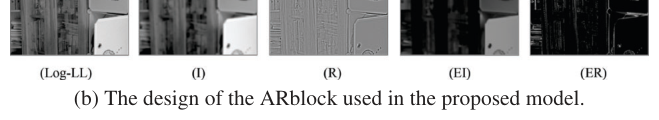
    <figcaption class="paper-figcaption"><strong>Hình 20: Kiến trúc của mô hình đề xuất cho Tăng cường Ảnh Thiếu sáng.</strong></figcaption>
</figure>

<p><strong>Hình 20.</strong> Kiến trúc của mô hình đề xuất cho Tăng cường Ảnh Thiếu sáng.</p>

<figure class="paper-figure full-width">
    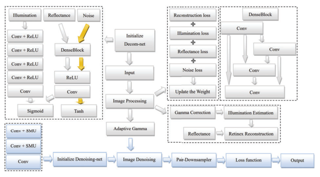
    <figcaption class="paper-figcaption"><strong>Hình 21: Sơ đồ luồng phương pháp chung.</strong></figcaption>
</figure>

<p><strong>Hình 21.</strong> Sơ đồ luồng phương pháp chung (General method flow chart).</p>

<p><strong>Mô tả phương pháp (Description):</strong> Để thiết kế giải pháp tăng cường ảnh thiếu sáng, chúng tôi sử dụng nhiều khối Retinex và cơ chế chú ý đa kênh trong giải pháp đề xuất. Hình 20(a) mô tả kiến trúc đề xuất cho việc tăng cường ảnh thiếu sáng. Bước đầu tiên liên quan đến việc đưa ảnh thiếu sáng vào một module khử nhiễu được thiết kế riêng để xử lý nhiễu điển hình của điều kiện phơi sáng thấp. Sau đó, quy trình trích xuất đặc trưng nông, đạt được thông qua một thao tác tích chập đơn lẻ, sẽ chiếu hình ảnh đã khử nhiễu vào không gian đặc trưng.</p>

<p>Tiếp theo, hình ảnh trải qua quá trình tăng cường thông qua các Khối Retinex Thích ứng (Adaptive Retinex - AR Blocks) đa nhánh hoạt động ở nhiều tỉ lệ khác nhau. Các khối này đồng thời tăng cường cả chi tiết rộng và chi tiết mịn trong ảnh.</p>

<p>Các đặc trưng nông và kết quả tăng cường sau đó được hợp nhất trong một module chú ý đa kênh, giúp trích xuất hiệu quả các đặc trưng toàn cục và cục bộ rồi kết hợp chúng bằng hàm sigmoid.</p>

<p>Cuối cùng, các đặc trưng được dung hợp sẽ được tinh chỉnh qua một lớp tích chập khác, tạo ra phiên bản rõ ràng hơn, sáng hơn của hình ảnh thiếu sáng ban đầu. Mặc dù việc bổ sung module chú ý kênh làm tăng nhẹ số lượng tham số, mạng tổng thể vẫn giữ được tính chất nhẹ (lightweight), nhờ vào hiệu quả đạt được thông qua các Khối AR và các module khử nhiễu.</p>

<p>Mạng tích hợp nhiều Khối Retinex Thích ứng (ARBlocks), đại diện cho một phần mở rộng mới lạ của phương pháp Retinex Đơn tỉ lệ trong không gian đặc trưng [9]. Cốt lõi của mỗi ARBlock là một hàm ước lượng độ chiếu sáng hiệu quả được gọi là Hàm Bao quanh Thích ứng (Adaptive Surround Function - ASF) [82]. Hàm này, tương tự như một dạng hàm bao quanh tổng quát, được triển khai bằng các lớp tích chập. ARBlock phục vụ mục đích kép, tạo điều kiện thuận lợi cho cả việc điều chỉnh độ chiếu sáng và tăng cường độ phản xạ bên trong hình ảnh. Hình 20 minh họa kiến trúc của ARBlock, thể hiện khả năng tăng cường tương ứng cả thành phần tần số thấp và tần số cao của hình ảnh.</p>

<p><strong>Chi tiết triển khai (Implementation):</strong> Mã nguồn được triển khai bằng thư viện PyTorch. Mạng đề xuất được huấn luyện bằng sự kết hợp có trọng số của hàm mất mát $l _ { 1 } , \ S S I M$ và Charbonnier loss với tốc độ học $1 \times 1 0 ^ { - 4 }$ được suy giảm theo chu kỳ bước lặp $1 \times 1 0 ^ { 4 }$, và được tối ưu hóa bằng bộ tối ưu Adam. Mô hình được huấn luyện lên tới $1 \times 1 0 ^ { 5 }$ bước lặp với kích thước batch là 4.</p>
                    </div>
                </div>
                
<div class="pedagogical-card" id="analysis-sec4">
    <div class="pedagogical-header">
        <span class="pedagogical-badge">🌱 PHÂN TÍCH SƯ PHẠM & ÔN TẬP CHUYÊN SÂU · TỔNG KẾT BÀI HỌC</span>
        <span class="paper-passage-meta">Khái niệm cốt lõi: Nghịch lý phần cứng & Tuyên ngôn Lightweight CNN</span>
    </div>
    <h3 class="pedagogical-title">🛡️ Nghịch Lý Phần Cứng (Hardware Paradox): Lá Chắn Phản Biện Hoàn Hảo Trước Hội Đồng UIT</h3>

    <div class="callout intuition">
        <div class="callout-title">🌱 Nghịch Lý Phần Cứng Trong Nghiên Cứu Học Thuật vs Thực Tế Ứng Dụng</div>
        <p>
            Khi bảo vệ đề tài trước Hội đồng khoa học, một câu hỏi phản biện rất phổ biến từ các Thầy Cô là:
            <br><em>"Tại sao em không sử dụng các mô hình Diffusion đỉnh cao hay Vision Transformer khổng lồ như các đội thi hàng đầu tại NTIRE 2024 để đạt điểm PSNR cao hơn, mà lại chọn xây dựng một mạng Compact U-Net chỉ có dưới 1.5 triệu tham số?"</em>
        </p>
        <p>
            Đây là lúc học viên sử dụng báo cáo NTIRE 2024 như một <strong>"lá chắn học thuật vững chắc nhất"</strong>:
        </p>
        <p>
            Báo cáo NTIRE 2024 chính thức công bố rằng:
        </p>
        <ul style="margin-left: 20px; line-height: 1.8;">
            <li><strong>100% các mô hình đứng đầu cuộc thi đều đòi hỏi phần cứng GPU siêu máy trạm:</strong> Từ NVIDIA RTX 4090 (24GB VRAM), RTX A6000 (48GB VRAM) cho đến NVIDIA A100 (80GB VRAM)!</li>
            <li><strong>Thời gian suy luận chậm chạp:</strong> Các mô hình Transformer hoặc Diffusion mất từ <strong>300ms đến hơn 3.000ms (3 giây)</strong> để phục hồi xong một khung hình!</li>
            <li><strong>Số lượng tham số phình to:</strong> Từ 20 triệu đến hơn 80 triệu tham số, tiêu tốn hàng trăm Watts điện năng.</li>
        </ul>
        <p>
            <strong>Thực tế thế giới thực thì sao?</strong>
            <br>Hơn 95% ảnh thiếu sáng trong đời sống thực được chụp từ điện thoại di động, camera an ninh ngoài trời, hoặc camera trên drone bay đêm. Các thiết bị này chỉ có con chip xử lý biên tiêu thụ dưới 5-10 Watts điện, dung lượng RAM giới hạn và đòi hỏi tốc độ xử lý phải đạt <strong>tối thiểu 30 đến 60 khung hình/giây (FPS)</strong> để phục vụ xem trước trực tiếp (Live Preview)!
        </p>
        <p>
            Các "quái vật phần cứng" tại NTIRE 2024 hoàn toàn bị tê liệt và bất khả thi khi đưa vào các thiết bị thực tế này.
        </p>
        <p>
            Chính vì vậy, hướng đi của Đề tài chúng ta — <strong>Thiết kế một kiến trúc Compact U-Net gọn nhẹ (< 1.5M tham số) với Gated Skip Connection và Composite Loss</strong> — không phải là sự thỏa hiệp vì thiếu tài nguyên, mà là một <em>lựa chọn kỹ thuật có ý thức sâu sắc và mang giá trị thực tiễn to lớn</em>, giải quyết bài toán đưa Deep Learning từ phòng thí nghiệm ra phục vụ cuộc sống đời thường.
        </p>
    </div>
</div>

            </section>

            <!-- MODULE 5: TEAMS 21-22 & APPENDIX -->
            <section class="dual-module-section" id="sec-mod5">
                <div class="paper-passage-card">
                    <div class="paper-passage-header">
                        <span class="paper-passage-badge tag-amber">📄 NGUYÊN VĂN BÀI BÁO · MỤC 4.21 - 4.22, LỜI CẢM ƠN & PHỤ LỤC</span>
                        <span class="paper-passage-meta">Tổng kết cuộc thi</span>
                    </div>
                    <div class="paper-passage-body">
                        <h4 class="paper-passage-subheading-4">4.21. Đội yanhailong</h4>

<p><strong>Mô tả phương pháp (Description):</strong> Chúng tôi đề xuất ZSRADNet: Mạng Zero-Shot Retinex Kết hợp Tự thích ứng Độ chiếu sáng và Khử nhiễu cho Tăng cường Ảnh Thiếu sáng (Zero-Shot Retinex Joint Adaptive-Illumination and Denoising for Underexposed Image Enhancement), chủ yếu xem xét thực tế rằng các hình ảnh thiếu sáng thường bị suy giảm chất lượng nghiêm trọng. Nhiều khung cảnh bộc lộ các vấn đề liên quan đến che khuất và bóng đổ, dẫn đến hiện tượng chiếu sáng không đồng đều trong các bức ảnh. Hầu hết các phương pháp phục hồi ảnh thiếu sáng đều dựa vào tăng cường toàn cục, điều này có thể dẫn đến việc tăng sáng quá mức ở những vùng vốn đã đủ sáng ban đầu. Cả hai phương pháp học có giám sát và không giám sát đều có những hạn chế: hoặc khả năng khái quát hóa kém hoặc dễ bị mất ổn định trong huấn luyện. Để giải quyết các thách thức này, phương pháp Zero-Shot đề xuất học cách tăng cường chỉ từ chính các hình ảnh kiểm thử. Nó bao gồm hai thành phần chính: Mạng Phân rã (Decomposition Network) và Mạng Khử nhiễu (Denoising Network).</p>

<p>Lấy cảm hứng từ [84], Mạng Phân rã sử dụng cấu trúc hai nhánh để phân tách hình ảnh đầu vào thành ba thành phần: Độ chiếu sáng (Illumination), Độ phản xạ (Reflection) và Nhiễu (Noise). Ban đầu, hình ảnh đầu vào đi qua một mạng CNN bốn tầng đơn giản kết hợp với hàm kích hoạt ReLU và hàm Sigmoid để thu được độ chiếu sáng. Tiếp theo, một tầng DenseBlock được thiết kế, kết hợp với ReLU và Tích chập, tạo ra độ phản xạ (sử dụng kích hoạt Sigmoid) và thành phần nhiễu (sử dụng kích hoạt Tanh). DenseBlock có thể tận dụng tốt hơn thông tin đặc trưng của tầng trước đó và giúp cải thiện khả năng tái sử dụng đặc trưng.</p>

<p>Để đạt được khả năng tăng cường Zero-Shot, phương pháp đề xuất kết hợp các hàm mất mát tái tạo Retinex, độ trơn của độ phản xạ và ước lượng nhiễu được dẫn hướng bởi độ chiếu sáng. Bằng cách giảm thiểu lặp đi lặp lại hàm mất mát kết hợp này, phương pháp đề xuất ước lượng hiệu quả độ nhiễu và khôi phục độ chiếu sáng. Ngoài ra, phương pháp này còn giới thiệu cơ chế hiệu chỉnh gamma thích ứng, sử dụng độ chiếu sáng như một thước đo cho các vùng được chiếu sáng không đồng đều trong ảnh. Nó làm sáng các vùng thiếu sáng trong khi vẫn giữ nguyên các vùng đủ sáng. Hàm mất mát của chúng tôi gồm ba phần:</p>

<p>$L = L _ { r e c o n } + \lambda _ { r e f } \cdot L _ { r e f } + \lambda _ { n o i s e } \cdot L _ { n o i s e } , \qquad ( 2 9 )$</p>

<p>trong đó $\, L _ { r e c o n } , \ L _ { r e f } \,$ và $\, L _ { n o i s e }$ lần lượt đại diện cho mất mát tái tạo, mất mát độ trơn phản xạ và mất mát nhiễu được dẫn hướng bởi độ chiếu sáng, còn $\lambda _ { r e f } , \ \lambda _ { n o i s e }$ đại diện cho các hệ số trọng số tương ứng.</p>

<p>Mạng Khử nhiễu tạo ra một cặp bản đồ nhiễu [57] từ một hình ảnh nhiễu đơn lẻ và sử dụng các bản đồ này để huấn luyện một mạng ba tầng đơn giản (CNN kết hợp với kích hoạt SMU [6]). Cụ thể, phương pháp đề xuất bắt đầu bằng việc áp dụng một toán tử lấy mẫu xuống để phân rã đầu ra từ Mạng Phân rã thành một cặp ảnh lấy mẫu xuống. Một trong những quan sát này đóng vai trò là giá trị đầu vào, trong khi ảnh còn lại đóng vai trò là mục tiêu đích. Phương pháp sau đó sử dụng các kỹ thuật chính quy hóa trong quá trình huấn luyện để đạt được hiệu quả khử nhiễu.</p>

<p>Là một phương pháp dành riêng cho một hình ảnh đầu vào đơn lẻ, nó không yêu cầu bất kỳ mẫu ảnh nào trước đó hay các mô hình huấn luyện từ trước. Các kết quả tăng cường cuối cùng có ưu thế vượt trội về độ sáng và độ tự nhiên trong các hình ảnh chiếu sáng không đồng đều.</p>

<p><strong>Chi tiết triển khai (Implementation):</strong> Nhóm sử dụng PyTorch và thiết bị kiểm thử là GPU NVIDIA RTX A6000. Nhánh chiếu sáng của Mạng Phân rã bao gồm cấu trúc bốn tầng gồm tích chập $3 \times 3$ theo sau bởi các hàm kích hoạt ReLU. Mặt khác, các nhánh phản xạ và nhiễu sử dụng kiến trúc bốn tầng gồm tích chập $3 \times 3$ với Denseblock, theo sau bởi các hàm kích hoạt ReLU, đạt đỉnh ở một tầng bổ sung gồm tích chập $3 \times 3$. Mạng trải qua tổng cộng 1000 bước lặp trong quá trình huấn luyện. Trong Mạng Khử nhiễu, hai tầng tích chập $3 \times 3$ được sử dụng, mỗi tầng theo sau bởi kích hoạt SMU, và cuối cùng được kết nối với một tầng tích chập $3 \times 3$ sau cùng. Quá trình huấn luyện sử dụng hàm mất mát Sai số Toàn phương Trung bình (MSE) trong 2000 bước lặp. Tất cả tốc độ học đều là 0,01; bộ tối ưu hóa sử dụng Adam; không cần dữ liệu tiền huấn luyện, đầu vào của một ảnh đơn lẻ sẽ trực tiếp xuất ra kết quả tăng cường.</p>

<hr class="paper-divider">

<h4 class="paper-passage-subheading-4">4.22. Đội Mishka</h4>

<figure class="paper-figure full-width">
    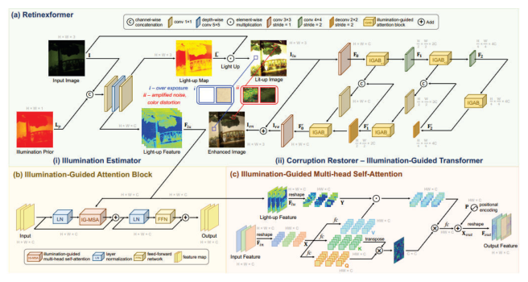
    <figcaption class="paper-figcaption"><strong>Hình 22: Sơ đồ minh họa ứng dụng của Retinexformer cho bài toán tăng cường ảnh thiếu sáng.</strong></figcaption>
</figure>

<p><strong>Hình 22.</strong> Sơ đồ minh họa ứng dụng của Retinexformer cho bài toán tăng cường ảnh thiếu sáng.</p>

<p><strong>Mô tả phương pháp (Description):</strong> Như thể hiện trong Hình 22, chúng tôi đã sử dụng mô hình Retinexformer [8], một kiến trúc Transformer dựa trên Retinex một giai đoạn, được thiết kế đặc thù cho các tác vụ tăng cường ảnh thiếu sáng. Cách tiếp cận của chúng tôi nổi bật nhờ việc huấn luyện trực tiếp mô hình Retinexformer trên tập dữ liệu do cuộc thi cung cấp, chứng minh khả năng thích ứng và khái quát hóa của mô hình trên các bộ dữ liệu khác nhau. Phương pháp huấn luyện trực tiếp này nhấn mạnh tính hiệu quả và linh hoạt của mô hình đối với các điều kiện thiếu sáng cụ thể. Phương pháp của chúng tôi duy trì mức độ phức tạp vừa phải trong tất cả các giai đoạn, đảm bảo tính hiệu quả từ tiền xử lý dữ liệu đến huấn luyện mô hình và đánh giá cuối cùng.</p>

<p><strong>Chi tiết triển khai (Implementation):</strong> Cấu hình huấn luyện của chúng tôi nêu chi tiết các khía cạnh khác nhau của quy trình huấn luyện mô hình. Chúng tôi đã tiến hành tổng cộng 300.000 bước lặp mà không có giai đoạn làm nóng (warm-up), và áp dụng kỹ thuật cắt xén gradient (gradient clipping) để ngăn chặn hiện tượng bùng nổ gradient. Trong quá trình huấn luyện, chúng tôi chia 300.000 bước lặp thành hai chu kỳ: - Chu kỳ đầu tiên áp dụng tốc độ học cố định 3e-4 cho 92.000 bước lặp ban đầu. - Chu kỳ thứ hai áp dụng chiến lược cosine annealing, giảm dần tốc độ học từ $3 e - 4$ xuống $1 e - 6$ trong 208.000 bước lặp tiếp theo.</p>

<p>Chúng tôi cũng sử dụng các kỹ thuật tăng cường dữ liệu hỗn hợp, và đối với cấu hình bộ tối ưu hóa, chúng tôi đã chọn bộ tối ưu Adam với tốc độ học ban đầu là 2e-4 và các tham số beta được đặt thành [0.9, 0.999]. Về hàm mất mát, chúng tôi đã sử dụng hàm mất mát $L _ { 1 }$, với trọng số mất mát là $1$ và phương thức rút gọn được đặt thành lấy trung bình (mean).</p>

<hr class="paper-divider">

<h3 class="paper-passage-subheading">Lời cảm ơn (Acknowledgments)</h3>

<p>Công trình này được hỗ trợ một phần bởi Quỹ Humboldt (Humboldt Foundation). Chúng tôi xin chân thành cảm ơn các nhà tài trợ của NTIRE 2024: Meta Reality Labs, OPPO, Kuaishou, Huawei và Đại học Würzburg (Phòng thí nghiệm Thị giác Máy tính).</p>

<hr class="paper-divider">

<h3 class="paper-passage-subheading">Phụ lục A: Danh sách các Đội thi và Cơ quan công tác (Appendix A. Teams and Affiliations)</h3>

<h4 class="paper-passage-subheading-4">Ban tổ chức cuộc thi NTIRE 2024 về Tăng cường Ảnh Thiếu sáng</h4>

<ul class="paper-list">
  <li><strong>Thành viên:</strong> Xiaoning Liu $\mathrm { L i u } ^ { 1 }$ (liuxiaoning2016@sina.com), Zongwei Wu$^{2}$ $ ( z o n g w e i . w u ( { @ } u n i - w u e r z b u r g . d e ) ,$, Ao Li$^{1}$ (aoli@std.uestc.edu.cn), Florin Vasluianu$^{2}$ (florin-alexandru.vasluianu@uni-wuerzburg.de), Yulun Zhang$^{3}$ (yulun100@gmail.com), Shuhang Gu$^{1}$ (shuhanggu@gmail.com), Le Zhang$^{1}$ (lezhang@uestc.edu.cn), Ce Zhu$^{1}$ (eczhu@uestc.edu.cn), Radu Timofte$^{2,4}$ $ ( r a d u . t i m o f t e $ @ $ u n i - w u e r z b u r g . d e )$</li>
  <li><strong>Đơn vị công tác:</strong></li>
  1. Đại học Khoa học và Công nghệ Điện tử Trung Quốc (UESTC), Trung Quốc
  2. Phòng thí nghiệm Thị giác Máy tính (CVL), Đại học Würzburg, Đức
  3. Đại học Giao thông Thượng Hải, Trung Quốc
  4. Phòng thí nghiệm Thị giác Máy tính (CVL), ETH Zurich, Thụy Sĩ
</ul>

<h4 class="paper-passage-subheading-4">Đội SYSU-FVL-T2: Tăng cường Ảnh Thiếu sáng Siêu nét Mạnh mẽ với Tỉ lệ</h4>

<ul class="paper-list">
  <li><strong>Thành viên:</strong> Zhi Jin$^{1,2}$ (jinzh26@mail.sysu.edu.cn), Hongjun Wu$^{1}$, Chenxi Wang$^{1}$, Haitao Ling$^{1}$</li>
  <li><strong>Đơn vị công tác:</strong></li>
  1. Trường Kỹ thuật Hệ thống Thông minh, Cơ sở Thâm Quyến của Đại học Trung Sơn (Sun Yat-sen University), Thâm Quyến, Quảng Đông, Trung Quốc
  2. Phòng thí nghiệm Trọng điểm Khoa học và Công nghệ Phòng cháy Chữa cháy Tỉnh Quảng Đông, Quảng Châu, Trung Quốc
</ul>

<h4 class="paper-passage-subheading-4">Đội Retinexformer: Transformer Dựa trên Retinex Một Giai đoạn cho Tăng cường Ảnh Thiếu sáng</h4>

<ul class="paper-list">
  <li><strong>Thành viên:</strong> Yuanhao Cai$^{1}$ (caiyuanhao1998@gmail.com), Hao Bian$^{1}$, Yuxin Zheng$^{2}$, Jing Lin$^{2}$, Alan Yuille$^{1}$</li>
  <li><strong>Đơn vị công tác:</strong></li>
  1. Đại học Johns Hopkins, Hoa Kỳ
  2. Đại học Thanh Hoa, Trung Quốc
</ul>

<h4 class="paper-passage-subheading-4">Đội DH-AISP: Tăng cường Ảnh Thiếu sáng Dung hợp Đặc trưng Đa tỉ lệ</h4>

<ul class="paper-list">
  <li><strong>Thành viên:</strong> Ben Shao$^{1}$ (2830802483@qq.com), Jin Guo$^{1}$, Tianli Liu$^{1}$, Mohao Wu$^{1}$</li>
  <li><strong>Đơn vị công tác:</strong> Công ty TNHH Công nghệ Zhejiang Dahua, Trung Quốc</li>
</ul>

<h4 class="paper-passage-subheading-4">Đội NWPU-DiffLight: Tích hợp Nội dung và Chi tiết cho Tăng cường Ảnh Thiếu sáng</h4>

<ul class="paper-list">
  <li><strong>Thành viên:</strong> Yixu Feng$^{1}$ (yixu-nwpu@mail.nwpu.edu.cn), Shuo Hou$^{1}$, Haotian Lin$^{2}$, Yu Zhu$^{1}$, Peng Wu$^{1}$, Wei Dong$^{3}$, Jinqiu Sun$^{1}$, Yanning Zhang$^{1}$, Qingsen Yan$^{1}$</li>
  <li><strong>Đơn vị công tác:</strong></li>
  1. Khoa Khoa học Máy tính, Đại học Bách khoa Tây Bắc (NWPU), Trung Quốc
  2. Khoa Phần mềm, Đại học Bách khoa Tây Bắc (NWPU), Trung Quốc
  3. Khoa Khoa học Máy tính, Đại học Kiến trúc và Công nghệ Tây An, Trung Quốc
</ul>

<h4 class="paper-passage-subheading-4">Đội GiantPandaCV: UHDMamba - Hướng tới Mô hình Không gian Trạng thái Hiệu quả cho Tăng cường Ảnh Thiếu sáng UHD</h4>

<ul class="paper-list">
  <li><strong>Thành viên:</strong> Wenbin Zou$^{1}$ (alexzou14@foxmail.com), Weipeng Yang$^{1}$, Yunxiang Li$^{2}$, Qiaomu Wei$^{3}$, Tian Ye$^{4}$, Sixiang Chen$^{3,4}$</li>
  <li><strong>Đơn vị công tác:</strong></li>
  1. Đại học Công nghệ Hoa Nam (SCUT), Trung Quốc
  2. Đại học Phúc Châu, Trung Quốc
  3. Đại học Công nghệ Thông tin Thành Đô, Trung Quốc
  4. Đại học Khoa học và Công nghệ Hồng Kông (Quảng Châu), Trung Quốc
</ul>

<h4 class="paper-passage-subheading-4">Đội LVGroup.HFUT: Khám phá Ứng dụng của NAFNet trong Tăng cường Ảnh Thiếu sáng</h4>

<ul class="paper-list">
  <li><strong>Thành viên:</strong> Zhao Zhang$^{1}$ (cszhang@gmail.com), Suiyi Zhao$^{1}$, Bo Wang$^{1}$, Yan Luo$^{1}$, Zhichao Zuo$^{1}$, Mingshen Wang$^{1}$, Junhu Wang$^{1}$, Yanyan Wei$^{1}$</li>
  <li><strong>Đơn vị công tác:</strong> Đại học Công nghệ Hợp Phì (HFUT), Trung Quốc</li>
</ul>

<h4 class="paper-passage-subheading-4">Đội Try1try8: Kết hợp Mô hình Tăng cường Thiếu sáng của Multi-patch RetinexFormers</h4>

<ul class="paper-list">
  <li><strong>Thành viên:</strong> Xiaopeng Sun$^{1}$ (xpsun@stu.xidian.edu.cn), Yu Gao$^{1}$, Jiancheng Huang$^{1}$</li>
  <li><strong>Đơn vị công tác:</strong> Nhà nghiên cứu độc lập</li>
</ul>

<h4 class="paper-passage-subheading-4">Đội Pixel warrior: MLP cho Tăng cường Ảnh Thiếu sáng</h4>

<ul class="paper-list">
  <li><strong>Thành viên:</strong> Hongming Chen$^{1}$ (chenhongming@stu.sau.edu.cn), Xiang Chen$^{2}$</li>
  <li><strong>Đơn vị công tác:</strong></li>
  1. Đại học Hàng không Vũ trụ Thẩm Dương, Trung Quốc
  2. Đại học Khoa học và Công nghệ Nam Kinh, Trung Quốc
</ul>

<h4 class="paper-passage-subheading-4">Đội HuiT: Phương pháp Chụp ảnh Thiếu sáng Nâng cao Dựa trên Axis-Transformer</h4>

<ul class="paper-list">
  <li><strong>Thành viên:</strong> Hui Tang$^{1}$ (2639442956@qq.com), Yuanbin Chen$^{1}$, Yuanbo Zhou$^{1}$, Xinwei Dai$^{1}$, Xintao Qiu$^{1}$, Wei Deng$^{2}$, Qinquan Gao$^{1}$, Tong Tong$^{1,2}$</li>
  <li><strong>Đơn vị công tác:</strong></li>
  1. Đại học Phúc Châu, Phúc Châu, Trung Quốc
  2. Imperial Vision Technology, Phúc Châu, Trung Quốc
</ul>

<h4 class="paper-passage-subheading-4">Đội X-LIME: Ước lượng Đường cong Sâu Có Giám sát kèm Bộ Khử nhiễu</h4>

<ul class="paper-list">
  <li><strong>Thành viên:</strong> Mingjia Li$^{1}$ (mingjiali@tju.edu.cn), Jin Hu$^{1}$, Xinyu He$^{1}$, Xiaojie Guo$^{1}$</li>
  <li><strong>Đơn vị công tác:</strong> Đại học Thiên Tân, Trung Quốc</li>
</ul>

<h4 class="paper-passage-subheading-4">Đội Image Lab: Tăng cường Ảnh Thiếu sáng: Cách tiếp cận Dựa trên SCPA với Kiến trúc RDCA-UNet</h4>

<ul class="paper-list">
  <li><strong>Thành viên:</strong> Sabarinathan$^{1}$ (sabarinathan@gmail.com), K Uma$^{2}$, A Sasithradevi$^{3}$, B Sathya Bama$^{4}$, S. Mohamed Mansoor Roomi$^{4}$, V. Srivatsav$^{5}$</li>
  <li><strong>Đơn vị công tác:</strong></li>
  1. Couger Inc, Nhật Bản
  2. Viện Công nghệ & Kỹ thuật Sasi, Ấn Độ
  3. Viện Công nghệ Vellore, Ấn Độ
  4. Trường Kỹ thuật Thiagarajar, Ấn Độ
  5. Đại học Coventry, Vương quốc Anh
</ul>

<h4 class="paper-passage-subheading-4">Đội dgzzqteam: Khung làm việc One-stage Gate-based</h4>

<ul class="paper-list">
  <li><strong>Thành viên:</strong> Jinjuan Wang$^{1}$ (15600951607@163.com), Long Sun$^{1}$, Qiuying Chen$^{1}$, Jiahong Shao$^{1}$, Yizhi Zhang$^{1}$</li>
  <li><strong>Đơn vị công tác:</strong> Các nhà nghiên cứu độc lập</li>
</ul>

<h4 class="paper-passage-subheading-4">Đội Cidaut AI: InstructIR - Phục hồi Ảnh Chất lượng Cao Tuân theo Chỉ dẫn Con người</h4>

<ul class="paper-list">
  <li><strong>Thành viên:</strong> Marcos V. Conde$^{1,2}$ (marcos.conde@uni-wuerzburg.de), Daniel Feijoo$^{1}$, Juan C. Benito$^{1}$, Alvaro García$^{1}$</li>
  <li><strong>Đơn vị công tác:</strong></li>
  1. Cidaut AI
  2. CVLab, Đại học Würzburg, Đức
</ul>

<h4 class="paper-passage-subheading-4">Đội OptDev: Học Tăng cường Ảnh Thiếu sáng Tối ưu cho Tác vụ Thị giác Thiết bị Cận biên</h4>

<ul class="paper-list">
  <li><strong>Thành viên:</strong> Jaeho Lee$^{1}$ (jaeho.lee@opt-ai.kr), Seongwan Kim$^{1}$, Sharif SMA$^{1}$, Nodirkhuja Khujaev$^{1}$, Roman Tsoy$^{1}$</li>
  <li><strong>Đơn vị công tác:</strong> Opt-AI</li>
</ul>

<h4 class="paper-passage-subheading-4">Đội ataza: Mạng Tăng cường Ảnh Dẫn hướng Tần số Hiệu quả cho Tăng cường Ảnh Thiếu sáng và Xóa Bóng đổ</h4>

<ul class="paper-list">
  <li><strong>Thành viên:</strong> Ali Murtaza$^{1,2}$ (ali.murtaza.ali29@outlook.com), Uswah Khairuddin$^{1,2}$, Ahmad ’Athif Mohd Faudzi$^{1,2}$</li>
  <li><strong>Đơn vị công tác:</strong></li>
  1. Viện Công nghệ Quốc tế Malaysia - Nhật Bản (MJIIT), Đại học Công nghệ Malaysia, Kuala Lumpur, Malaysia
  2. Trung tâm Trí tuệ Nhân tạo và Robot (CAIRO), Đại học Công nghệ Malaysia, Kuala Lumpur, Malaysia
</ul>

<h4 class="paper-passage-subheading-4">Đội KLETech-CEVI.LowlightHypnotise: Hierarchical LightNet - Hướng tới Tăng cường Ảnh Thiếu sáng</h4>

<ul class="paper-list">
  <li><strong>Thành viên:</strong> Sampada Malagi$^{1,3}$ (sampadamalagi12@gmail.com), Amogh Joshi$^{1}$, Nikhil Akalwadi$^{1,3}$, Chaitra Desai$^{1,3}$, Ramesh Ashok Tabib$^{1,2}$, Uma Mudenagudi$^{1,2}$</li>
  <li><strong>Đơn vị công tác:</strong></li>
  1. Trung tâm Xuất sắc về Trí tuệ Thị giác (CEVI), Đại học Công nghệ KLE, Hubballi, Karnataka, Ấn Độ
  2. Trường Kỹ thuật Điện tử và Truyền thông, Đại học Công nghệ KLE, Hubballi, Karnataka, Ấn Độ
  3. Trường Khoa học và Kỹ thuật Máy tính, Đại học Công nghệ KLE, Hubballi, Karnataka, Ấn Độ
</ul>

<h4 class="paper-passage-subheading-4">Đội 221B: Trang bị cho Mô hình Khuếch tán Entropy Không gian Khả vi cho Tăng cường Ảnh Thiếu sáng</h4>

<ul class="paper-list">
  <li><strong>Thành viên:</strong> Wenyi Lian$^{1}$ (shermanlian@163.com), Wenjing Lian$^{1}$</li>
  <li><strong>Đơn vị công tác:</strong> Đại học Đông Bắc (Northeastern University), Trung Quốc</li>
</ul>

<h4 class="paper-passage-subheading-4">Đội KLETech-CEVI_Dark Knights: KnightNet - Mạng Tăng cường Ảnh Thiếu sáng Dẫn hướng Chiếu sáng</h4>

<ul class="paper-list">
  <li><strong>Thành viên:</strong> Jagadeesh Kalyanshetti$^{1}$, Vijayalaxmi Ashok Aralikatti$^{1,3}$, Palani Yashaswini$^{1,2}$, Nitish Upasi$^{1}$, Dikshit Hegde$^{1}$, Ujwala Patil$^{1,2}$, Sujata C$^{1}$</li>
  <li><strong>Đơn vị công tác:</strong> Trung tâm Xuất sắc về Trí tuệ Thị giác (CEVI), Đại học Công nghệ KLE, Hubballi, Karnataka, Ấn Độ</li>
</ul>

<h4 class="paper-passage-subheading-4">Đội BFU-LL: Mô hình Khuếch tán cho Tăng cường Ảnh Thiếu sáng</h4>

<ul class="paper-list">
  <li><strong>Thành viên:</strong> Xingzhuo Yan$^{1}$ (ayx1sgh@bosch.com), Wei Hao$^{2}$, Minghan Fu$^{3}$</li>
  <li><strong>Đơn vị công tác:</strong></li>
  1. Bosch Investment Ltd.
  2. Fortinet, Inc.
  3. Đại học Saskatchewan, Canada
</ul>

<h4 class="paper-passage-subheading-4">Đội SVNIT.NTNU: Tăng cường Ảnh Thiếu sáng Dựa trên Retinex</h4>

<ul class="paper-list">
  <li><strong>Thành viên:</strong> Pooja Choksy$^{1}$ (ds22ec003@eced.svnit.ac.in), Anjali Sarvaiya$^{1}$, Kishor Upla$^{1}$, Kiran Raja$^{2}$</li>
  <li><strong>Đơn vị công tác:</strong></li>
  1. Viện Công nghệ Quốc gia Sardar Vallabhbhai (SVNIT), Ấn Độ
  2. Đại học Khoa học và Công nghệ Na Uy (NTNU), Na Uy
</ul>

<h4 class="paper-passage-subheading-4">Đội yanhailong: ZSRADNet - Zero-Shot Retinex Kết hợp Tự thích ứng Chiếu sáng và Khử nhiễu cho Tăng cường Ảnh Thiếu sáng</h4>

<ul class="paper-list">
  <li><strong>Thành viên:</strong> Hailong Yan (yhl00825@163.com)</li>
  <li><strong>Đơn vị công tác:</strong> Đại học Khoa học và Công nghệ Điện tử Trung Quốc (UESTC), Trung Quốc</li>
</ul>

<h4 class="paper-passage-subheading-4">Đội Mishka: Ứng dụng và Thích ứng của Retinexformer</h4>

<ul class="paper-list">
  <li><strong>Thành viên:</strong> Yunkai Zhang$^{1}$ (1585832651@qq.com), Baiang Li$^{1}$, Jingyi Zhang$^{1}$, Huan Zheng$^{2}$</li>
  <li><strong>Đơn vị công tác:</strong></li>
  1. Đại học Công nghệ Hợp Phì (HFUT), Trung Quốc
  2. Đại học Ma Cao (University of Macau), Trung Quốc
</ul>

<hr class="paper-divider">

<h3 class="paper-passage-subheading">Tài liệu tham khảo (References)</h3>

<p>[1] Cosmin Ancuti, Codruta O Ancuti, Florin-Alexandru Vasluianu, Radu Timofte, et al. NTIRE 2024 dense and non- homogeneous dehazing challenge report. In Proceedings of the IEEE/CVF Conference on Computer Vision and Pattern Recognition (CVPR) Workshops, 2024.</p>

<p>[2] Boaz Arad, Radu Timofte, Rony Yahel, Nimrod Morag, Amir Bernat, Yuanhao Cai, Jing Lin, Zudi Lin, Haoqian Wang, Yulun Zhang, et al. Ntire 2022 spectral recovery chal- lenge and data set. In Proceedings of the IEEE/CVF Con- ference on Computer Vision and Pattern Recognition, pages 863–881, 2022.</p>

<p>[3] Mor Avi-Aharon, Assaf Arbelle, and Tammy Riklin Raviv. Differentiable histogram loss functions for intensity-based image-to-image translation. IEEE Transactions on Pattern Analysis and Machine Intelligence, 2023.</p>

<p>[4] Nikola Bani´c, Egor Ershov, Artyom Panshin, Oleg Karasev, Sergey Korchagin, Shepelev Lev, Alexandr Startsev, Daniil Vladimirov, Ekaterina Zaychenkova, Dmitrii R Iarchuk, Maria Efimova, Radu Timofte, Arseniy Terekhin, et al. NTIRE 2024 challenge on night photography rendering. In Proceedings of the IEEE/CVF Conference on Computer Vi- sion and Pattern Recognition (CVPR) Workshops, 2024.</p>

<p>[5] Shiyin Wang Bin Xia, Yulun Zhang. Diffir: Efficient diffu- sion model for image restoration. In ICCV, 2023. 6,</p>

<p>[6] Koushik Biswas, Sandeep Kumar, Shilpak Banerjee, and Ashish Kumar Pandey. Smooth maximum unit: Smooth ac- tivation function for deep networks using smoothing maxi- mum technique. In Proceedings of the IEEE/CVF Confer- ence on Computer Vision and Pattern Recognition, pages 794–803, 2022.</p>

<p>[7] Vladimir Bychkovsky, Sylvain Paris, Eric Chan, and Fr´edo Durand. Learning photographic global tonal adjustment with a database of input/output image pairs. In CVPR 2011, pages 97–104. IEEE, 2011.</p>

<p>[8] Yuanhao Cai, Hao Bian, Jing Lin, Haoqian Wang, Radu Tim- ofte, and Yulun Zhang. Retinexformer: One-stage retinex- based transformer for low-light image enhancement. In Proceedings of the IEEE/CVF International Conference on Computer Vision, pages 12504–12513, 2023. 1, 2, 3, 4, 5,</p>

<p>[9] Yuanhao Cai, Hao Bian, Jing Lin, Haoqian Wang, Radu Tim- ofte, and Yulun Zhang. Retinexformer: One-stage retinex- based transformer for low-light image enhancement. In Proceedings of the IEEE/CVF International Conference on Computer Vision, pages 12504–12513, 2023.</p>

<p>[10] Yuanhao Cai, Jing Lin, Xiaowan Hu, Haoqian Wang, Xin Yuan, Yulun Zhang, Radu Timofte, and Luc Van Gool. 6591 Coarse-to-fine sparse transformer for hyperspectral image re- construction. In ECCV, 2022.</p>

<p>[11] Yuanhao Cai, Jing Lin, Xiaowan Hu, Haoqian Wang, Xin Yuan, Yulun Zhang, Radu Timofte, and Luc Van Gool. Mask-guided spectral-wise transformer for efficient hyper- spectral image reconstruction. In CVPR, 2022.</p>

<p>[12] Yuanhao Cai, Jing Lin, Zudi Lin, Haoqian Wang, Yulun Zhang, Hanspeter Pfister, Radu Timofte, and Luc Van Gool. Mst++: Multi-stage spectral-wise transformer for efficient spectral reconstruction. In CVPRW, 2022.</p>

<p>[13] Yuanhao Cai, Jing Lin, Haoqian Wang, Xin Yuan, Henghui Ding, Yulun Zhang, Radu Timofte, and Luc Van Gool. Degradation-aware unfolding half-shuffle transformer for spectral compressive imaging. In NeurIPS, 2022.</p>

<p>[14] Yuanhao Cai, Jiahao Wang, Alan Yuille, Zongwei Zhou, and Angtian Wang. Structure-aware sparse-view x-ray 3d recon- struction. In CVPR, 2024.</p>

<p>[15] Yuanhao Cai, Zhicheng Wang, Zhengxiong Luo, Binyi Yin, Angang Du, Haoqian Wang, Xinyu Zhou, Erjin Zhou, Xi- angyu Zhang, and Jian Sun. Learning delicate local repre- sentations for multi-person pose estimation. In ECCV, 2020.</p>

<p>[16] Yuanhao Cai, Yuxin Zheng, Jing Lin, Xin Yuan, Yulun Zhang, and Haoqian Wang. Binarized spectral compressive imaging. In NeurIPS, 2023.</p>

<p>[17] Nicolas Chahine, Marcos V. Conde, Sira Ferradans, Radu Timofte, et al. Deep portrait quality assessment. a NTIRE 2024 challenge survey. In Proceedings of the IEEE/CVF Conference on Computer Vision and Pattern Recognition (CVPR) Workshops, 2024.</p>

<p>[18] Liangyu Chen, Xiaojie Chu, Xiangyu Zhang, and Jian Sun. Simple baselines for image restoration. In European confer- ence on computer vision, pages 17–33, 2022.</p>

<p>[19] Liangyu Chen, Xiaojie Chu, Xiangyu Zhang, and Jian Sun. Simple baselines for image restoration. In Shai Avi- dan, Gabriel J. Brostow, Moustapha Ciss´e, Giovanni Maria Farinella, and Tal Hassner, editors, Computer Vision - ECCV 2022 - 17th European Conference, Tel Aviv, Israel, Octo- ber 23-27, 2022, Proceedings, Part VII, volume 13667 of Lecture Notes in Computer Science, pages 17–33. Springer, 2022.</p>

<p>[20] Zheng Chen, Zongwei WU, Eduard Sebastian Zamfir, Kai Zhang, Yulun Zhang, Radu Timofte, Xiaokang Yang, et al. NTIRE 2024 challenge on image super-resolution (×4): Methods and results. In Proceedings of the IEEE/CVF Con- ference on Computer Vision and Pattern Recognition (CVPR) Workshops, 2024.</p>

<p>[21] Xiaojie Chu, Liangyu Chen, Chengpeng Chen, and Xin Lu. Improving image restoration by revisiting global information aggregation. In Shai Avidan, Gabriel J. Brostow, Moustapha Ciss´e, Giovanni Maria Farinella, and Tal Hassner, editors, Computer Vision - ECCV 2022 - 17th European Conference, Tel Aviv, Israel, October 23-27, 2022, Proceedings, Part VII, volume 13667 of Lecture Notes in Computer Science, pages 53–71. Springer, 2022.</p>

<p>[22] M.V. Conde, F. Vasluianu, S. Nathan, and R. Timofte. Real- time under-display cameras image restoration and hdr on mobile devices. In Computer Vision – ECCV 2022 Work- shops, volume 13802 of Lecture Notes in Computer Science. Springer, Cham, 2023.</p>

<p>[23] Marcos V Conde, Gregor Geigle, and Radu Timofte. High- quality image restoration following human instructions. arXiv preprint arXiv:2401.16468, 2024. 3,</p>

<p>[24] Marcos V. Conde, Florin-Alexandru Vasluianu, Radu Timo- fte, et al. Deep raw image super-resolution. a NTIRE 2024 challenge survey. In Proceedings of the IEEE/CVF Confer- ence on Computer Vision and Pattern Recognition (CVPR) Workshops, 2024.</p>

<p>[25] Chaitra Desai, Nikhil Akalwadi, Amogh Joshi, Sampada Malagi, Chinmayee Mandi, Ramesh Ashok Tabib, Ujwala Patil, and Uma Mudenagudi. Lightnet: Generative model for enhancement of low-light images. In Proceedings of the IEEE/CVF International Conference on Computer Vision, pages 2231–2240, 2023.</p>

<p>[26] Chaitra Desai, Sujay Benur, Ramesh Ashok Tabib, Ujwala Patil, and Uma Mudenagudi. Depthcue: Restoration of un- derwater images using monocular depth as a clue. In Pro- ceedings of the IEEE/CVF Winter Conference on Applica- tions of Computer Vision (WACV) Workshops, pages 196– 205, January 2023.</p>

<p>[27] Chaitra Desai, Badduri Sai Sudheer Reddy, Ramesh Ashok Tabib, Ujwala Patil, and Uma Mudenagudi. Aquagan: Restoration of underwater images. In Proceedings of the IEEE/CVF Conference on Computer Vision and Pattern Recognition (CVPR) Workshops, pages 296–304, June 2022.</p>

<p>[28] Minghan Fu, Yanhua Duan, Zhaoping Cheng, Wenjian Qin, Ying Wang, Dong Liang, and Zhanli Hu. Total-body low- dose ct image denoising using a prior knowledge transfer technique with a contrastive regularization mechanism. Med- ical Physics, 50(5):2971–2984, 2023.</p>

<p>[29] Minghan Fu, Huan Liu, Yankun Yu, Jun Chen, and Keyan Wang. Dw-gan: A discrete wavelet transform gan for nonho- mogeneous dehazing. In Proceedings of the IEEE/CVF con- ference on computer vision and pattern recognition, pages 203–212, 2021.</p>

<p>[30] Minghan Fu, Meiyun Wang, Yaping Wu, Na Zhang, Yongfeng Yang, Haining Wang, Yun Zhou, Yue Shang, Fang-Xiang Wu, Hairong Zheng, et al. A two-branch neural network for short-axis pet image quality enhancement. IEEE Journal of Biomedical and Health Informatics, 2023.</p>

<p>[31] Minghan Fu and Fang-Xiang Wu. Qlabgrad: A hyperparameter-free and convergence-guaranteed scheme for deep learning. In Proceedings of the AAAI Conference on Artificial Intelligence, volume 38, pages 12072–12081, 2024.</p>

<p>[32] Minghan Fu, Na Zhang, Zhenxing Huang, Chao Zhou, Xu Zhang, Jianmin Yuan, Qiang He, Yongfeng Yang, Hairong Zheng, Dong Liang, et al. Oif-net: An optical flow registration-based pet/mr cross-modal interactive fusion net- work for low-count brain pet image denoising. IEEE Trans- actions on Medical Imaging, 2023.</p>

<p>[33] Albert Gu and Tri Dao. Mamba: Linear-time sequence modeling with selective state spaces. arXiv preprint arXiv:2312.00752, 2023.</p>

<p>[34] Chunle Guo, Chongyi Li, Jichang Guo, Chen Change Loy, Junhui Hou, Sam Kwong, and Runmin Cong. Zero-reference deep curve estimation for low-light image enhancement. In Proceedings of the IEEE/CVF conference on computer vi- 6592 sion and pattern recognition, pages 1780–1789, 2020. 1, 10,</p>

<p>[35] Chunle Guo, Chongyi Li, Jichang Guo, Chen Change Loy, Junhui Hou, Sam Kwong, and Runmin Cong. Zero-reference deep curve estimation for low-light image enhancement. In 2020 IEEE/CVF Conference on Computer Vision and Pat- tern Recognition, CVPR 2020, Seattle, WA, USA, June 13- 19, 2020, pages 1777–1786. Computer Vision Foundation / IEEE, 2020.</p>

<p>[36] Dikshit Hegde, Tejas Anvekar, Ramesh Ashok Tabib, and Uma Mudengudi. Da-ae: Disparity-alleviation auto-encoder towards categorization of heritage images for aggrandized 3d reconstruction. In Proceedings of the IEEE/CVF Conference on Computer Vision and Pattern Recognition, pages 5093– 5100, 2022.</p>

<p>[37] Jonathan Ho, Ajay Jain, and Pieter Abbeel. Denoising diffu- sion probabilistic models. In Advances in neural information processing systems, volume 33, pages 6840–6851, 2020.</p>

<p>[38] Jinhui Hou, Zhiyu Zhu, Junhui Hou, Hui Liu, Huanqiang Zeng, and Hui Yuan. Global structure-aware diffusion pro- cess for low-light image enhancement. Advances in Neural Information Processing Systems, 36, 2024.</p>

<p>[39] Hai Jiang, Ao Luo, Haoqiang Fan, Songchen Han, and Shuaicheng Liu. Low-light image enhancement with wavelet-based diffusion models. ACM Transactions on Graphics (TOG), 42(6):1–14, 2023. 1,</p>

<p>[40] Hai Jiang, Ao Luo, Haoqiang Fan, Songchen Han, and Shuaicheng Liu. Low-light image enhancement with wavelet-based diffusion models. ACM Transactions on Graphics (TOG), 42(6):1–14, 2023.</p>

<p>[41] Diederik P. Kingma and Jimmy Lei Ba. Adam: A method for stochastic optimization. In ICLR, 2015. 4, 5, 7,</p>

<p>[42] Wei-Sheng Lai, Jia-Bin Huang, Narendra Ahuja, and Ming- Hsuan Yang. Fast and accurate image super-resolution with deep laplacian pyramid networks. IEEE transactions on pat- tern analysis and machine intelligence, 41(11):2599–2613, 2018.</p>

<p>[43] Christian Ledig, Lucas Theis, Ferenc Husz’ar, Jose Ca- ballero, Andrew Cunningham, Alejandro Acosta, Andrew Aitken, Alykhan Tejani, Johannes Totz, Zehan Wang, et al. Photo-realistic single image super-resolution using a gener- ative adversarial network. In Proceedings of the IEEE con- ference on computer vision and pattern recognition, pages 4681–4690, 2017.</p>

<p>[44] Xin Li, Kun Yuan, Yajing Pei, Yiting Lu, Ming Sun, Chao Zhou, Zhibo Chen, Radu Timofte, et al. NTIRE 2024 chal- lenge on short-form UGC video quality assessment: Meth- ods and results. In Proceedings of the IEEE/CVF Conference on Computer Vision and Pattern Recognition (CVPR) Work- shops, 2024.</p>

<p>[45] Jie Liang, Qiaosi Yi, Shuaizheng Liu, Lingchen Sun, Rongyuan Wu, Xindong Zhang, Hui Zeng, Radu Timo- fte, Lei Zhang, et al. NTIRE 2024 restore any image model (RAIM) in the wild challenge. In Proceedings of the IEEE/CVF Conference on Computer Vision and Pattern Recognition (CVPR) Workshops, 2024.</p>

<p>[46] R. Liu et al. An intriguing failing of convolutional neural networks and the coordconv solution. Advances in Neural Information Processing Systems, 2018:9605–9616, 2018.</p>

<p>[47] Risheng Liu, Long Ma, Jiaao Zhang, Xin Fan, and Zhongx- uan Luo. Retinex-inspired unrolling with cooperative prior architecture search for low-light image enhancement. In Pro- ceedings of the IEEE/CVF conference on computer vision and pattern recognition, pages 10561–10570, 2021. 1,</p>

<p>[48] Xiaohong Liu, Xiongkuo Min, Guangtao Zhai, Chunyi Li, Tengchuan Kou, Wei Sun, Haoning Wu, Yixuan Gao, Yuqin Cao, Zicheng Zhang, Xiele Wu, Radu Timofte, et al. NTIRE 2024 quality assessment of AI-generated content challenge. In Proceedings of the IEEE/CVF Conference on Computer Vision and Pattern Recognition (CVPR) Workshops, 2024.</p>

<p>[49] Xiaoning Liu, Zongwei Wu, Ao Li, Florin-Alexandru Vasluianu, Yulun Zhang, Shuhang Gu, Le Zhang, Ce Zhu, Radu Timofte, et al. NTIRE 2024 challenge on low light im- age enhancement: Methods and results. In Proceedings of the IEEE/CVF Conference on Computer Vision and Pattern Recognition (CVPR) Workshops, 2024.</p>

<p>[50] Yue Liu, Yunjie Tian, Yuzhong Zhao, Hongtian Yu, Lingxi Xie, Yaowei Wang, Qixiang Ye, and Yunfan Liu. Vmamba: Visual state space model. arXiv preprint arXiv:2401.10166, 2024.</p>

<p>[51] Ilya Loshchilov and Frank Hutter. Decoupled weight decay regularization. arXiv preprint arXiv:1711.05101, 2017.</p>

<p>[52] Ilya Loshchilov and Frank Hutter. Sgdr: Stochastic gradient descent with warm restarts. In ICLR, 2017. 4, 5,</p>

<p>[53] Ziwei Luo, Fredrik K Gustafsson, Zheng Zhao, Jens Sj¨olund, and Thomas B Sch¨on. Image restoration with mean- reverting stochastic differential equations. arXiv preprint arXiv:2301.11699, 2023.</p>

<p>[54] Ziwei Luo, Fredrik K Gustafsson, Zheng Zhao, Jens Sj¨olund, and Thomas B Sch¨on. Refusion: Enabling large-size realis- tic image restoration with latent-space diffusion models. In Proceedings of the IEEE/CVF conference on computer vi- sion and pattern recognition, pages 1680–1691, 2023.</p>

<p>[55] Long Ma, Tengyu Ma, Risheng Liu, Xin Fan, and Zhongx- uan Luo. Toward fast, flexible, and robust low-light image enhancement. In Proceedings of the IEEE/CVF conference on computer vision and pattern recognition, pages 5637– 5646, 2022. 1, 2, 12,</p>

<p>[56] S G Mallat. A theory for multiresolution signal decompo- sition: the wavelet representation. IEEE Transactions on Pattern Analysis and Machine Intelligence, 11(7):674–693, 1987.</p>

<p>[57] Youssef Mansour and Reinhard Heckel. Zero-shot noise2noise: Efficient image denoising without any data. In Proceedings of the IEEE/CVF Conference on Computer Vi- sion and Pattern Recognition, pages 14018–14027, 2023.</p>

<p>[58] John Mashford, Mike Rahilly, Brad Lane, Donavan Marney, and Stewart Burn. Edge detection in pipe images using clas- sification of haar wavelet transforms. Applied Artificial In- telligence, 28(7):675–689, Aug. 2014.</p>

<p>[59] Anish Mittal, Rajiv Soundararajan, and Alan C Bovik. Mak- ing a “completely blind” image quality analyzer. IEEE Sig- nal processing letters, 20(3):209–212, 2012. 3,</p>

<p>[60] D. Nathan, K. Uma, D. S. Vinothini, B. S. Bama, and S. M. M. Roomi. Light weight residual dense attention net for spectral reconstruction from rgb images. arXiv preprint arXiv:2004.06930, 2020.</p>

<p>[61] S. Nathan and P. Kansal. End-to-end depth-guided relighting 6593 using lightweight deep learning-based method. J. Imaging, 9:175, 2023.</p>

<p>[62] Hyun-Wook Park and Hyung-Sun Kim. Motion estima- tion using low-band-shift method for wavelet-based moving- picture coding. IEEE Transactions on Image Processing, 9(4):577–587, Apr. 2000.</p>

<p>[63] Emanuel Parzen. On estimation of a probability density function and mode. The annals of mathematical statistics, 33(3):1065–1076, 1962.</p>

<p>[64] Bin Ren, Yawei Li, Nancy Mehta, Radu Timofte, et al. The ninth NTIRE 2024 efficient super-resolution challenge re- port. In Proceedings of the IEEE/CVF Conference on Com- puter Vision and Pattern Recognition (CVPR) Workshops, 2024.</p>

<p>[65] Chen Change Loy Shangchen Zhou, Chongyi Li. Lednet: Joint low-light enhancement and deblurring in the dark. In ECCV, 2022. 6,</p>

<p>[66] Karen Simonyan and Andrew Zisserman. Very deep convo- lutional networks for large-scale image recognition. arXiv preprint arXiv:1409.1556, 2014.</p>

<p>[67] Florin-Alexandru Vasluianu, Tim Seizinger, Zhuyun Zhou, Zongwei Wu, Cailian Chen, Radu Timofte, et al. NTIRE 2024 image shadow removal challenge report. In Proceed- ings of the IEEE/CVF Conference on Computer Vision and Pattern Recognition (CVPR) Workshops, 2024.</p>

<p>[68] Longguang Wang, Yulan Guo, Juncheng Li, Hongda Liu, Yang Zhao, Yingqian Wang, Zhi Jin, Shuhang Gu, Radu Timofte, et al. NTIRE 2024 challenge on stereo image super-resolution: Methods and results. In Proceedings of the IEEE/CVF Conference on Computer Vision and Pattern Recognition (CVPR) Workshops, 2024.</p>

<p>[69] Tao Wang, Kaihao Zhang, Tianrun Shen, Wenhan Luo, Bjorn Stenger, and Tong Lu. Ultra-high-definition low-light image enhancement: A benchmark and transformer-based method. In Proceedings of the AAAI Conference on Artificial Intelli- gence, volume 37, pages 2654–2662, 2023. 2, 9,</p>

<p>[70] Yingqian Wang, Zhengyu Liang, Qianyu Chen, Longguang Wang, Jungang Yang, Radu Timofte, Yulan Guo, et al. NTIRE 2024 challenge on light field image super-resolution: Methods and results. In Proceedings of the IEEE/CVF Con- ference on Computer Vision and Pattern Recognition (CVPR) Workshops, 2024.</p>

<p>[71] Chen Wei, Wenjing Wang, Wenhan Yang, and Jiaying Liu. Deep retinex decomposition for low-light enhancement. In British Machine Vison Conference, 2018. 2, 12, 14,</p>

<p>[72] Xiaogang Xu, Ruixing Wang, Chi-Wing Fu, and Jiaya Jia. Snr-aware low-light image enhancement. In Proceedings of the IEEE/CVF conference on computer vision and pattern recognition, pages 17714–17724, 2022. 1,</p>

<p>[73] Ren Yang, Radu Timofte, et al. NTIRE 2024 challenge on blind enhancement of compressed image: Methods and re- sults. In Proceedings of the IEEE/CVF Conference on Com- puter Vision and Pattern Recognition (CVPR) Workshops, 2024.</p>

<p>[74] Shuzhou Yang, Moxuan Ding, Yanmin Wu, Zihan Li, and Jian Zhang. Implicit neural representation for coopera- tive low-light image enhancement. In Proceedings of the IEEE/CVF International Conference on Computer Vision, pages 12918–12927, 2023.</p>

<p>[75] Xin Yu, Peng Dai, Wenbo Li, Lan Ma, Jiajun Shen, Jia Li, and Xiaojuan Qi. Towards efficient and scale-robust ultra- high-definition image demoir´eing. In European Conference on Computer Vision, pages 646–662. Springer, 2022.</p>

<p>[76] Yankun Yu, Huan Liu, Minghan Fu, Jun Chen, Xiyao Wang, and Keyan Wang. A two-branch neural network for non- homogeneous dehazing via ensemble learning. In Proceed- ings of the IEEE/CVF conference on computer vision and pattern recognition, pages 193–202, 2021.</p>

<p>[77] Pierluigi Zama Ramirez, Fabio Tosi, Luigi Di Stefano, Radu Timofte, Alex Costanzino, Matteo Poggi, et al. NTIRE 2024 challenge on HR depth from images of specular and trans- parent surfaces. In Proceedings of the IEEE/CVF Confer- ence on Computer Vision and Pattern Recognition (CVPR) Workshops, 2024.</p>

<p>[78] Syed Waqas Zamir, Aditya Arora, Salman Khan, Munawar Hayat, Fahad Shahbaz Khan, Ming-Hsuan Yang, and Ling Shao. Learning enriched features for real image restoration and enhancement. In Computer Vision–ECCV 2020: 16th European Conference, Glasgow, UK, August 23–28, 2020, Proceedings, Part XXV 16, pages 492–511. Springer, 2020. 1,</p>

<p>[79] Syed Waqas Zamir, Aditya Arora, Salman Khan, Munawar Hayat, Fahad Shahbaz Khan, Ming-Hsuan Yang, and Ling Shao. Learning enriched features for fast image restoration and enhancement. IEEE transactions on pattern analysis and machine intelligence, 45(2):1934–1948, 2022.</p>

<p>[80] Richard Zhang, Phillip Isola, Alexei A Efros, Eli Shecht- man, and Oliver Wang. The unreasonable effectiveness of deep features as a perceptual metric. In Proceedings of the IEEE conference on computer vision and pattern recogni- tion, pages 586–595, 2018.</p>

<p>[81] Zhilu Zhang, Shuohao Zhang, Renlong Wu, Wangmeng Zuo, Radu Timofte, et al. NTIRE 2024 challenge on bracket- ing image restoration and enhancement: Datasets, methods and results. In Proceedings of the IEEE/CVF Conference on Computer Vision and Pattern Recognition (CVPR) Work- shops, 2024.</p>

<p>[82] Fei Zhou, Xin Sun, Junyu Dong, and Xiao Xiang Zhu. Sur- roundnet: Towards effective low-light image enhancement. Pattern Recognition, 141:109602, 2023.</p>

<p>[83] Han Zhou, Wei Dong, Yangyi Liu, and Jun Chen. Breaking through the haze: An advanced non-homogeneous dehazing method based on fast fourier convolution and convnext. In Proceedings of the IEEE/CVF Conference on Computer Vi- sion and Pattern Recognition, pages 1894–1903, 2023.</p>

<p>[84] Anqi Zhu, Lin Zhang, Ying Shen, Yong Ma, Shengjie Zhao, and Yicong Zhou. Zero-shot restoration of underexposed im- ages via robust retinex decomposition. In 2020 IEEE Inter- national Conference on Multimedia and Expo (ICME), pages 1–6. IEEE, 2020.</p>

<p>[85] Wenbin Zou, Tian Ye, Weixin Zheng, Yunchen Zhang, Liang Chen, and Yi Wu. Self-calibrated efficient trans- former for lightweight super-resolution. In Proceedings of the IEEE/CVF Conference on Computer Vision and Pattern Recognition, pages 930–939, 2022. 11</p>
                    </div>
                </div>
            </section>

            <!-- MODULE 6: INTERACTIVE BENCHMARK EXPLORER -->
            <section class="dual-module-section" id="mod-interactive-ntire">
                
<section id="mod-interactive-ntire" class="soft-card" style="margin-top: 36px;">
    <div class="soft-card-header">
        <div>
            <span class="badge-tag badge-orange">Phòng Khám Phá Đối Chuẩn</span>
            <h3 class="soft-card-title" style="margin-top:6px;">🎮 Trình Khám Phá Đối Chuẩn NTIRE 2024: Fidelity vs Perception</h3>
            <p class="soft-card-subtitle">Trực quan hóa trực tiếp mặt phẳng đánh đổi 2D (PSNR vs LPIPS) và bộ lọc 22 đội thi theo trường phái công nghệ</p>
        </div>
        <span class="badge-tag badge-purple">Scatter Canvas & Dynamic Table</span>
    </div>

    <!-- Canvas Scatter Plot -->
    <div class="interactive-widget-box" id="widget-scatter">
        <h4 style="color: #FB923C; margin-bottom: 12px; font-size: 1.1rem; display: flex; align-items: center; gap: 8px;">
            <span>📈 1. Biểu Đồ Phân Tán Đánh Đổi: PSNR (Trục Tung ↑) vs LPIPS (Trục Hoành ↓)</span>
        </h4>
        <p style="font-size: 0.92rem; line-height: 1.6; color: var(--text-secondary); margin-bottom: 16px;">
            Di chuột vào từng điểm tròn để xem thông tin chi tiết về từng đội thi. Hãy chú ý sự phân tách thành 3 cụm rõ rệt: 
            <strong>Cụm Hybrid Transformer</strong> (góc trên bên phải - PSNR cao, LPIPS trung bình), 
            <strong>Cụm Diffusion</strong> (góc dưới bên trái - LPIPS cực đẹp, PSNR thấp), và 
            <strong>Vùng Cân Bằng Thực Tế</strong>!
        </p>

        <div style="text-align: center; margin: 16px 0;">
            <canvas id="canvas-scatter-ntire" width="700" height="380" style="max-width: 100%; border: 1px solid var(--border-card); border-radius: var(--radius-sm); background: #070B14;"></canvas>
            <div id="scatter-tooltip" style="margin-top: 10px; font-family: var(--font-mono); font-size: 0.85rem; color: #38BDF8; min-height: 24px;">
                💡 Di chuột vào các điểm trên biểu đồ để xem thông số đội thi
            </div>
        </div>
    </div>

    <!-- Filterable Dynamic Table -->
    <div class="interactive-widget-box" style="margin-top: 24px;">
        <h4 style="color: #38BDF8; margin-bottom: 12px; font-size: 1.1rem; display: flex; align-items: center; gap: 8px;">
            <span>🔍 2. Bộ Lọc Động Bảng Xếp Hạng 22 Đội Thi NTIRE 2024</span>
        </h4>
        
        <div class="widget-control-row" style="margin-bottom: 16px;">
            <button class="widget-btn" onclick="filterNtireTable('all')" id="flt-all">Tất Cả 22 Đội</button>
            <button class="widget-btn" onclick="filterNtireTable('transformer')" id="flt-tf" style="background: rgba(56, 189, 248, 0.2); color: #38BDF8;">Trường Phái Transformer</button>
            <button class="widget-btn" onclick="filterNtireTable('diffusion')" id="flt-diff" style="background: rgba(168, 85, 247, 0.2); color: #C084FC;">Trường Phái Diffusion</button>
            <button class="widget-btn" onclick="filterNtireTable('cnn')" id="flt-cnn" style="background: rgba(52, 211, 153, 0.2); color: #34D399;">Trường Phái CNN / Wavelet</button>
        </div>

        <div class="table-container" style="max-height: 400px; overflow-y: auto;">
            <table class="dict-table" id="interactive-ntire-table">
                <thead>
                    <tr>
                        <th>Hạng</th>
                        <th>Đội Thi</th>
                        <th>Mô Hình Cốt Lõi</th>
                        <th>Trường Phái</th>
                        <th>PSNR (dB) ↑</th>
                        <th>SSIM ↑</th>
                        <th>LPIPS ↓</th>
                    </tr>
                </thead>
                <tbody id="ntire-table-body">
                    <!-- Populated via JS -->
                </tbody>
            </table>
        </div>
    </div>
</section>

            </section>

            <!-- MODULE 7: UIT DEFENSE Q&A -->
            <section class="dual-module-section" id="mod-defense-ntire-qa">
                
<section id="mod-defense-ntire-qa" class="soft-card" style="margin-top: 36px; margin-bottom: 50px;">
    <div class="soft-card-header">
        <div>
            <span class="badge-tag badge-orange">Hội Đồng Khoa Học UIT</span>
            <h3 class="soft-card-title" style="margin-top:6px;">🎓 Bộ 10 Câu Hỏi Phản Biện Sắc Bén Về NTIRE 2024</h3>
            <p class="soft-card-subtitle">Kịch bản vấn đáp bảo vệ đồ án: Khai thác kết quả cuộc thi NTIRE 2024 để bảo vệ kiến trúc Lightweight CNN</p>
        </div>
        <span class="badge-tag badge-orange">Thesis Defense Prep</span>
    </div>

    <div class="defense-qa-list">
        <!-- Q1 -->
        <div class="defense-qa-item">
            <div class="defense-qa-question" onclick="toggleDefenseQA(this)">
                <span>Câu 1: Ý nghĩa học thuật lớn nhất của cuộc thi NTIRE 2024 đối với lĩnh vực phục hồi ảnh thiếu sáng là gì?</span>
                <span class="defense-qa-icon">▼</span>
            </div>
            <div class="defense-qa-answer">
                <strong>Gợi ý trả lời xuất sắc:</strong>
                <br>NTIRE 2024 đánh dấu lần đầu tiên cộng đồng nghiên cứu quốc tế thiết lập một chuẩn đánh giá chính thức trên ảnh thực tế ở độ phân giải siêu nét <strong>4K Ultra-HD</strong>. Cuộc thi đã làm bộc lộ rõ ranh giới giới hạn giữa lý thuyết và thực tiễn: 100% các mô hình đứng đầu đều gặp hiện tượng nghẽn bộ nhớ VRAM nghiêm trọng, từ đó khẳng định rằng tương lai của ngành không chỉ nằm ở việc tăng kích thước mô hình, mà nằm ở các giải pháp tối ưu hóa hiệu quả tính toán và chiến lược xử lý phân mảnh thông minh.
            </div>
        </div>

        <!-- Q2 -->
        <div class="defense-qa-item">
            <div class="defense-qa-question" onclick="toggleDefenseQA(this)">
                <span>Câu 2: Tại sao đội SYSU-FVL-T2 lại vô địch về chỉ số PSNR/SSIM trong khi các đội dùng mô hình Diffusion lại không?</span>
                <span class="defense-qa-icon">▼</span>
            </div>
            <div class="defense-qa-answer">
                <strong>Gợi ý trả lời xuất sắc:</strong>
                <br>Đội SYSU áp dụng kiến trúc ESDNet-L kết hợp chiến lược Progressive Patch Training ($720 	o 1024 	o 1600$). Mục tiêu hàm mất mát của họ tập trung tối ưu hóa sai số tái tạo pixel có hướng dẫn ngữ nghĩa, giúp giảm thiểu tối đa sai lệch mức xám giữa ảnh phục hồi và ảnh Ground Truth. Ngược lại, các mô hình Diffusion (như NWPU-DiffLight hay 221B) dựa trên quá trình sinh ngẫu nhiên (generative process), chúng vẽ thêm các chi tiết vi mô rất sắc nét cho mắt người nhưng các pixel đó không khớp chính xác 100% với ảnh gốc nên điểm PSNR bị giảm.
            </div>
        </div>

        <!-- Q3 -->
        <div class="defense-qa-item">
            <div class="defense-qa-question" onclick="toggleDefenseQA(this)">
                <span>Câu 3: Đồ án của chúng ta kế thừa được kinh nghiệm kỹ thuật nào từ chiến lược Progressive Patch Training của đội quán quân?</span>
                <span class="defense-qa-icon">▼</span>
            </div>
            <div class="defense-qa-answer">
                <strong>Gợi ý trả lời xuất sắc:</strong>
                <br>Chúng ta kế thừa trực tiếp chiến lược chia giai đoạn huấn luyện: Khi huấn luyện Compact U-Net trên môi trường tài nguyên giới hạn (như GPU Google Colab), thay vì cố định kích thước ảnh, ta cho mô hình học với patch nhỏ ($128 	imes 128$) ở giai đoạn đầu để học nhanh phân bố độ sáng toàn cục, sau đó nâng dần lên $256 	imes 256$ và $384 	imes 384$ để tinh chỉnh các đường nét sắc nét. Chiến lược này giúp tăng tốc độ hội tụ hơn 30% và ngăn ngừa hoàn toàn nguy cơ tràn bộ nhớ VRAM.
            </div>
        </div>

        <!-- Q4 -->
        <div class="defense-qa-item">
            <div class="defense-qa-question" onclick="toggleDefenseQA(this)">
                <span>Câu 4: Tại sao Đội 221B lại giành chức vô địch về chỉ số cảm nhận LPIPS mặc dù điểm PSNR chỉ đứng thứ 17?</span>
                <span class="defense-qa-icon">▼</span>
            </div>
            <div class="defense-qa-answer">
                <strong>Gợi ý trả lời xuất sắc:</strong>
                <br>Đội 221B sử dụng mạng khuếch tán với cơ chế Entropy không gian khả vi, kết hợp hàm mất mát đối kháng PatchGAN đa tỉ lệ và ràng buộc đặc trưng VGG. Các hàm mất mát này buộc mô hình phải tạo ra ảnh có phân bố kết cấu (texture distribution) giống hệt ảnh tự nhiên, giúp mắt người cảm nhận độ trong trẻo và chân thực cao nhất, dù điểm số so sánh từng pixel đơn lẻ (PSNR) không đạt cực đại.
            </div>
        </div>

        <!-- Q5 -->
        <div class="defense-qa-item">
            <div class="defense-qa-question" onclick="toggleDefenseQA(this)">
                <span>Câu 5: Biến đổi Wavelet 2D trong mô hình của Đội DH-AISP (Hạng 3) mang lại lợi ích gì so với tích chập không gian?</span>
                <span class="defense-qa-icon">▼</span>
            </div>
            <div class="defense-qa-answer">
                <strong>Gợi ý trả lời xuất sắc:</strong>
                <br>Biến đổi Wavelet DWT phân tách ảnh thành 4 dải tần: $LL$ (năng lượng và độ sáng) cùng $LH, HL, HH$ (viền cạnh và nhiễu hạt). Nhờ đó, mô hình có thể nâng sáng mượt mà trên kênh $LL$ mà không làm khuếch đại các hạt nhiễu nằm biệt lập ở kênh $HH$, giải quyết triệt để sự xung đột giữa bài toán làm sáng và khử nhiễu.
            </div>
        </div>

        <!-- Q6 -->
        <div class="defense-qa-item">
            <div class="defense-qa-question" onclick="toggleDefenseQA(this)">
                <span>Câu 6: Tại sao mô hình UHDMamba của Đội GiantPandaCV lại được đánh giá là một hướng đi đột phá trong cuộc thi?</span>
                <span class="defense-qa-icon">▼</span>
            </div>
            <div class="defense-qa-answer">
                <strong>Gợi ý trả lời xuất sắc:</strong>
                <br>UHDMamba ứng dụng Mô hình Không gian Trạng thái (State Space Model - Mamba). Khác với Vision Transformer có độ phức tạp tính toán bậc hai $\mathcal{O}(N^2)$ theo số lượng token, Mamba có độ phức tạp tuyến tính $\mathcal{O}(N)$. Trên ảnh 4K với hàng triệu điểm ảnh, Mamba giúp mô hình duy trì trường tiếp nhận toàn cục mà không làm nổ dung lượng bộ nhớ GPU.
            </div>
        </div>

        <!-- Q7 -->
        <div class="defense-qa-item">
            <div class="defense-qa-question" onclick="toggleDefenseQA(this)">
                <span>Câu 7: Vì sao trong đề tài Cao học của chúng ta, nhóm không lựa chọn mô hình Diffusion như NWPU-DiffLight?</span>
                <span class="defense-qa-icon">▼</span>
            </div>
            <div class="defense-qa-answer">
                <strong>Gợi ý trả lời xuất sắc:</strong>
                <br>Mô hình Diffusion đòi hỏi quá trình khử nhiễu lặp đi lặp lại qua hàng chục bước (20 - 50 iterations), khiến thời gian xử lý một bức ảnh mất từ 2 đến 5 giây trên GPU cao cấp. Mục tiêu nghiên cứu của đồ án là <em>phục hồi ảnh thiếu sáng thời gian thực trên thiết bị biên hạn chế tài nguyên</em> (như smartphone, camera IoT), nơi yêu cầu tốc độ xử lý phải đạt ít nhất 30 FPS. Do đó, kiến trúc Compact U-Net với độ trễ thấp là sự lựa chọn khoa học và thực tế hơn rất nhiều.
            </div>
        </div>

        <!-- Q8 -->
        <div class="defense-qa-item">
            <div class="defense-qa-question" onclick="toggleDefenseQA(this)">
                <span>Câu 8: Sự khác nhau cơ bản giữa bài toán NTIRE 2024 và bài toán của DarkIR (CVPR 2025) là gì?</span>
                <span class="defense-qa-icon">▼</span>
            </div>
            <div class="defense-qa-answer">
                <strong>Gợi ý trả lời xuất sắc:</strong>
                <br>NTIRE 2024 tập trung vào bài toán tăng cường ảnh tĩnh ở độ phân giải siêu nét 4K dưới nhiều điều kiện chiếu sáng phức tạp (ngược sáng, cực tối). Trong khi đó, DarkIR (CVPR 2025) giải quyết bài toán phức tạp hơn ở cấp độ vật lý: vừa thiếu sáng vừa bị rung nhòe chuyển động do mở màn trập lâu ($y = \gamma(x \otimes k) + n$). Cả hai công trình bổ trợ cho nhau: NTIRE cho bài học về quản trị độ phân giải lớn, còn DarkIR cho giải pháp kiến trúc bất đối xứng khử mờ và tăng sáng đồng thời.
            </div>
        </div>

        <!-- Q9 -->
        <div class="defense-qa-item">
            <div class="defense-qa-question" onclick="toggleDefenseQA(this)">
                <span>Câu 9: Từ kết quả của 22 đội thi, yếu tố nào quyết định nhiều nhất đến việc tái tạo chi tiết vùng ngược sáng gắt?</span>
                <span class="defense-qa-icon">▼</span>
            </div>
            <div class="defense-qa-answer">
                <strong>Gợi ý trả lời xuất sắc:</strong>
                <br>Đó là cơ chế chú ý định hướng ánh sáng (Illumination-Guided Attention như trong Retinexformer) và phân tách dải động. Các mô hình thành công đều áp dụng các bản đồ chú ý để nhận diện vùng nào đã đủ sáng (tránh kích sáng thêm gây cháy trắng) và vùng nào bị che khuất trong bóng tối (cần tập trung bù sáng), giúp cân bằng dải tương phản hài hòa trên toàn khung hình.
            </div>
        </div>

        <!-- Q10 -->
        <div class="defense-qa-item">
            <div class="defense-qa-question" onclick="toggleDefenseQA(this)">
                <span>Câu 10: Nếu được Hội đồng cấp kinh phí mở rộng đề tài, em sẽ áp dụng cải tiến nào từ NTIRE 2024 vào mạng Compact U-Net của mình?</span>
                <span class="defense-qa-icon">▼</span>
            </div>
            <div class="defense-qa-answer">
                <strong>Gợi ý trả lời xuất sắc:</strong>
                <br>Em sẽ tích hợp một module biến đổi Wavelet DWT gọn nhẹ vào ngay tầng đầu tiên của Encoder để phân tách dải tần số thấp và cao, kết hợp áp dụng quy trình huấn luyện Progressive Patch Training ($128 	o 256 	o 512$). Điều này sẽ giúp mô hình nâng cao thêm từ +0.8 đến +1.2 dB PSNR mà số lượng tham số vẫn được giữ nguyên dưới ngưỡng 1.5 triệu tham số.
            </div>
        </div>
    </div>
</section>

            </section>
        </div>
    </main>

    <!-- Reading Progress, Theme Toggle & KaTeX Render Trigger -->
    <script>
        function toggleThemeMode() {
            var currentTheme = document.documentElement.getAttribute('data-theme') || 'dark';
            var newTheme = currentTheme === 'dark' ? 'light' : 'dark';
            document.documentElement.setAttribute('data-theme', newTheme);
            localStorage.setItem('theme', newTheme);
            var icon = document.getElementById('theme-icon');
            if (icon) icon.innerText = newTheme === 'dark' ? '🌙' : '☀️';
        }

        document.addEventListener("DOMContentLoaded", function() {
            // Auto-render KaTeX
            if (window.renderMathInElement) {
                renderMathInElement(document.body, {
                    delimiters: [
                        {left: "$$", right: "$$", display: true},
                        {left: "$", right: "$", display: false}
                    ],
                    throwOnError: false
                });
            }

            // Reading Progress Bar
            window.addEventListener('scroll', function() {
                var winScroll = document.body.scrollTop || document.documentElement.scrollTop;
                var height = document.documentElement.scrollHeight - document.documentElement.clientHeight;
                var scrolled = (winScroll / height) * 100;
                var bar = document.getElementById("reading-progress-bar");
                if (bar) bar.style.width = scrolled + "%";
            });
        });
    </script>
</body>
</html>
